CSE 513 · Ders 3: Concurrency and synchronization (birleşik anlatım)#
Bölümler
- 1. Paylaşılan durum, lost update ve interleaving
- 2. Race condition, data race, invariant ve critical section
- 3. Yazılım çözümleri: strict alternation ve Peterson
- 4. Donanım atomikleri: test-and-set, CAS, fetch-add
- 5. Mutex: sahiplik, kapsam, spin ve block, sayaç deneyi
- 6. Semaphore
- 7. Monitor ve condition variable
- 8. Bounded buffer ve kuyruğu kapatma
- 9. Readers–writers ve dining philosophers
- 10. Deadlock, starvation, livelock, priority inversion, araç seçimi ve review
- 11. Ders kitabı ekleri
- Ek: Ubuntu'da denenecek küçük deneyler (önce tahmin et, sonra çalıştır)
Hazırlık 2026-11-03. Dört uzman ajanın notları birleştirildi: race ve atomiklik; senkronizasyon araçları; Linux ve C pratiği; sınav ve pedagoji. Ardından bir denetçi ajan dört notu kaynaklara karşı kontrol etti. Denetçi 0 kritik, 5 orta ve 13 düşük bulgu çıkardı (D-01…D-18); hepsi işlendi. Bu dosyadaki bütün izler ve sonuç kümeleri, denetçinin ayrıca yazdığı bir durum uzayı tarayıcısıyla (state-space explorer) bağımsız olarak doğrulandı. Hocanın hiçbir izi ya da sayısı çürütülmedi. Deneyler macOS arm64'te (Apple M4, macOS 26.6.2, Apple clang 21.0.0) derlenip çalıştırıldı. Linux'a özgü araçlar (strace, perf, /proc, Helgrind) bu makinede yok; onlarla ilgili her satır "Linux'a özgü, burada doğrulanmadı" diye işaretli.
Ders materyalleri (siteye bakılan tarih: 2026-11-03; canlı sürüm yerel kopyayla birebir aynı). Yerel yollar materyaller/ altındadır, kısaltma: D03/ = Ders-03_Concurrency-and-synchronization/.
- Ders sayfası: lecture-03.html →
_site-kopyasi/lecture-03.html. 3. hafta. - Okuma kitapçığı: lecture-03-reading.html →
_site-kopyasi/lecture-03-reading.html; PDF hâliD03/CSE513-Lecture03-Okuma.pdf. 19 bölüm; §16'da çalışılmış cevaplar, §17'de altı review sorusu ([S-1]…[S-6]), §18'de ders kitabı şekilleri. Şekiller_site-kopyasi/booklets/lecture03/. - Slaytlar (86 slayt; 70–86 "Textbook supplement"): CSE513-Lecture03.pdf →
D03/CSE513-Lecture03.pdf. - OSTEP bölümleri (okumanın bağlantı verdiği):
- Ch. 26 Concurrency: An Introduction →
D03/OSTEP/threads-intro.pdf - Ch. 28 Locks →
D03/OSTEP/threads-locks.pdf - Ch. 30 Condition Variables →
D03/OSTEP/threads-cv.pdf - Ch. 31 Semaphores →
D03/OSTEP/threads-sema.pdf - OSC 10e, Ch. 6 (Synchronization Tools) ve Ch. 7 (Synchronization Examples) (ders sayfası: "Chapters 6–7. We use selected sections rather than every slide in each chapter."): resmî slaytlar →
D03/OSC-10-slaytlar/ch6.pptx,D03/OSC-10-slaytlar/ch7.pptx. - Kod: counter.c →
D03/kod/counter.c; queue.c →D03/kod/queue.c. - Okumanın bağlantı verdiği referanslar (yerel kopya yok): pthread_cond_wait(3p), sem_init(3), sem_open(3p), sem_wait(3), kernel atomic_t, kernel lock types, Java Object, Java Semaphore, Java Condition, C11 taslağı N1570.
- İzleme: bu hafta için zorunlu izleme yok ("No additional required viewing is assigned in this chapter"; okumanın sonunda, siteye 2026-11-03'te bakıldı).
Sınav: ara sınav 7. haftada; kapsam ve dil henüz duyurulmadı (varsayım: 1–6. dersler, İngilizce materyal). Bu derste sorulacak şey büyük olasılıkla bir interleaving izi kurmak, bir protokolün hangi şartı bozduğunu göstermek ve "bu gözlem neyi kanıtlamaz?" diye cevap vermek.
Son gün rotası (önce iz ve kod doğruluğu, sonra kavram): §1.4 altı interleaving → §4.4 ve §5.9 split modu (atomik alan ≠ atomik işlem) → §3.3–3.4 Peterson ispatı ve bozan iz → §4.2 CAS izi → §7.5 while izi ve §7.6 lost wakeup (yan yana) → §8.4 ters sıra kilitlenmesi ve §8.5 kapasite-iki izi → §8.7 kuyruğu kapatma → §9.3–9.5 filozoflar (döngü, numaralı sıra, monitor açlığı) → §6.4 semaphore izi → §10.1 deadlock / starvation / livelock ayrımı → §11.2 atomic_t ve §11.6 izin hatası → sl. 34, 67, 68'in soruları (§5.10, §10.4). Okumanın kendi yöntemi de bu: her problemde kod yazmadan önce dört satır yaz, sonra olumsuz bir interleaving çiz Okuma §17.
Kaynak etiketleri:
- sl. N: hocanın slaytı (birinci kaynak).
- Okuma §N: okuma kitapçığının bölümü. [S-N]: okumanın 17. bölümündeki çalışılmış soru.
- OSC chX, OSTEP: ikincil kaynaklar.
- ek bilgi: kaynaklarda yok, genel bilgi.
Hocanın bu dersteki yöntemi: bir yürütmenin neden doğru olduğunu açıkla, tek bir başarılı çalıştırmaya güvenme sl. 2. "Çalıştı" bir gözlemdir; "doğru" ise izin verilen bütün interleaving'ler için kurulan bir argümandır. Okumanın önerdiği reçete Okuma §17: her problem için kod yazmadan önce dört satır yaz:
- paylaşılan durum (shared state),
- onun değişmezi (invariant),
- atomik ya da kilitli geçişler,
- bir thread'in bekleyebileceği nedenler.
Sonra olumsuz bir interleaving çiz. Dersteki dört benzetme birer test aracıdır: banyo anahtarı sahipliği ve iadeyi, kurmalı arabalar izin muhasebesini, karpuz bandı boş/dolu yüklemlerini, filozoflar birden çok edinim arasındaki bağımlılıkları sınar. Okumanın uyarısı: benzetmeler bir protokolün başlangıç noktasıdır, varsayımlarının yerini tutmaz Okuma §17. Slaytların çoğu yine "X, Y'yi kanıtlamaz" kalıbında: altı sıra altı eşit olasılık değildir, atomik alan atomik işlem değildir, uyandırma rezervasyon değildir, kilitlenmeyi önlemek açlığı önlemez.
Dersin merkez sorusu (ders sayfası): "How can concurrent activities cooperate without corrupting shared state?" Eşzamanlı etkinlikler paylaşılan durumu bozmadan nasıl iş birliği yapar? İki yarı sl. 2:
- Birinci yarı: çakışan işlemleri izle, invariant'ları belirt, critical section'ları atomik işlemler ve mutex'lerle koru (race condition, interleaving, critical section, atomik işlem, mutex).
- İkinci yarı: beklemeyi semaphore ve condition variable ile koordine et; bunları bounded buffer'a ve paylaşılan kaynaklara uygula (semaphore, monitor, condition variable, producer–consumer, dining philosophers).
Ders sayfasındaki hedefler ("What you should be able to do"):
- Race condition'a yol açan bir interleaving'i izleyebilmek.
- Senkronizasyonun paylaşılan duruma erişimi nasıl denetlediğini açıklayabilmek.
Ders sayfasının somut örneği: paylaşılan bir sayacı güncelleyen iki thread'i izle, sonra senkronize sürümünü incele. Bu dosyanın omurgası bu örnektir (§1.3 → §5.9).
1. Paylaşılan durum, lost update ve interleaving sl. 1–10#
1.1 Zamanlamadan paylaşılan duruma sl. 3; Okuma §1#
Sezgi. 2. hafta "hazır thread'lerden hangisi koşsun?" diye sordu. 3. hafta "thread'ler veri paylaşırken hangi sıralar (interleaving) güvenli?" diye soruyor sl. 3.
Mekanizma.
- Tek CPU: kesme (preemption) bir güncellemenin ortasına girebilir. Thread A okumuş ama yazmamışken scheduler B'yi çalıştırır sl. 3; OSTEP 26.4.
- Çok CPU: güncellemeler gerçek zamanda üst üste binebilir sl. 3.
- İki durumda da sorun aynıdır: başka bir katılımcı, programcının dışarı göstermek istemediği ara durumu (intermediate state) görür Okuma §1.
Hocanın cümlesi: "A scheduler does not know the application invariant. A time slice is not a critical section." sl. 3 Scheduler iki alanın bir banka bakiyesi olduğunu ya da bir indeksin kuyruk sınırında kalması gerektiğini bilmez. Bunlar programın kurallarıdır Okuma §1.
1.2 Paylaşılan ve özel durum sl. 4; Okuma §1#
Tanım. Bir process'in thread'leri adres alanını (address space) paylaşır: global değişkenler ve heap nesneleri ortaktır. Her thread'in kendi yürütme durumu (register'lar, PC) ve kendi stack'i vardır sl. 4.
Hocanın cümlesi: "Where a pointer is declared does not determine who can access its target." sl. 4 Yerel bir pointer paylaşılan bir nesneyi gösterebilir:
static void *worker(void *arg) {
long *p = arg; /* p yerel: bu thread'in stack'inde */
(*p)++; /* *p paylaşılan: main'in verdiği nesne */
return NULL;
}
/* main: long total = 0; iki thread'e de &total verilirse *p ortaktır. */
(Kod örneği ek bilgi; ilke sl. 4.)
Hocanın sırası: kilidi seçmeden önce şu üçünü yaz sl. 4; Okuma §17: (1) paylaşılan nesne, (2) o nesne üzerindeki işlemler, (3) doğru kalması gereken kural (invariant). "Bu program thread-safe mi?" sorusu, hangi işlem için neyin doğru kalacağı söylenmeden anlamsızdır Okuma §1.
1.3 Paylaşılan sayaç ve lost update sl. 5–7; Okuma §2#
Kurulum. İki worker sayacı 100.000'er kez artırır; beklenen toplam 200.000 sl. 5. Kavramsal olarak bir artırma üç adımdır: eski değeri oku, bir ekle, yeni değeri yaz. Bu adımlar tek bir bölünmez (indivisible) işlem olmak zorunda değildir sl. 5.
Hocanın modeli (çok önemli). İz sürerken soyut bir makine kullanılır: tek tek okuma ve yazmalar atomiktir ve yürütme sıralı tutarlıdır (sequential consistency, SC). Yani her yürütme, her thread'in program sırasını koruyan tek bir interleaving'e denktir. Hoca açıkça ekler: "this is not a promise about racy C" sl. 5; Okuma §2. Model ile çalıştırılabilir C'nin farkı §2.1'de.
Lost update izi sl. 6; Okuma §2. Başlangıç counter = 0, her thread bir artırma yapar:
| Adım | Thread A | Thread B | A.reg | B.reg | counter |
|---|---|---|---|---|---|
| 0 | – | – | 0 | ||
| 1 | oku → 0 | 0 | 0 | ||
| 2 | oku → 0 | 0 | 0 | 0 | |
| 3 | hesapla 0+1 | 1 | 0 | 0 | |
| 4 | hesapla 0+1 | 1 | 1 | 0 | |
| 5 | yaz 1 | 1 | 1 | 1 | |
| 6 | yaz 1 | 1 | 1 | 1 |
İki artırma istendi, sonuç 1. Sonraki yazma, aynı eski değere dayanan öncekini ezer sl. 6.
Hocanın cümlesi: "The defect is the unprotected read–modify–write sequence, not an arithmetic error." sl. 6 İki thread'in aritmetiği de doğru (0+1=1). B yazarken mevcut sayaca eklemez; sayacın yerine kendi özel kopyasından hesapladığı sonucu koyar Okuma §2.
Sıralı (serialized) iz sl. 7: A 0 okur, 1 yazar; sonra B 1 okur, 2 yazar → 2. Hoca: "One correct execution does not prove correctness for every allowed interleaving." sl. 7 Başarılı bir sıranın varlığı başarısız sırayı ortadan kaldırmaz.
Makine düzeyi OSTEP 26.4. x86'da counter = counter + 1 tipik olarak üç komuttur: mov mem,%eax, add $1,%eax, mov %eax,mem. OSTEP'in izinde sayaç 50'dir. T1 mov ve add yapar (eax = 51), timer interrupt gelir, T2 üç komutun hepsini çalıştırır (counter = 51), T1 döner ve kendi eax = 51'ini yazar: sonuç 52 yerine 51. Register'lar thread başınadır (context switch onları TCB'ye kaydeder), bu yüzden "her thread'in özel register'ı" modeli gerçekçidir OSTEP 26.4.
Çalışılmış soru (okumanın "Predict" sorusu) Okuma §2. Son yazmayı atomik yapmak lost update'i çözer mi? Hayır. Model zaten her yazmayı atomik kabul ediyor. Bölünmez olması gereken şey oku + hesapla + yaz bütünüdür. Ya bütün read–modify–write'ı mutex ile koru ya da uygun bir atomik RMW işlemi (primitive) kullan Okuma §2.
1.4 Altı interleaving'i saymak sl. 8–9; Okuma §2#
Model sl. 8. Her artırma iki atomik adımdır: R (sayacı özel register'a oku) ve W (register + 1'i yaz). Her thread'de R önce, W sonra gelir (program sırası). Harf dizisi sıradaki adımı kimin attığını gösterir Okuma §2: ABAB = A'nın R'si, B'nin R'si, A'nın W'si, B'nin W'si.
Neden 6? Dört adımlık dizide A'nın iki adımının hangi konumlara düşeceğini seçeriz: C(4,2) = 6. Her thread'in içinde sıra sabit olduğu için başka seçenek yoktur. (Genel formül: m ve n adımlı iki thread için C(m+n, m); ek bilgi.)
| Sıra | 1 | 2 | 3 | 4 | Sonuç | Neden |
|---|---|---|---|---|---|---|
| AABB | A: R→0 | A: W 1 | B: R→1 | B: W 2 | 2 | A bitmeden B okumuyor |
| ABAB | A: R→0 | B: R→0 | A: W 1 | B: W 1 | 1 | ikisi de 0 okudu |
| ABBA | A: R→0 | B: R→0 | B: W 1 | A: W 1 | 1 | ikisi de 0 okudu |
| BAAB | B: R→0 | A: R→0 | A: W 1 | B: W 1 | 1 | ikisi de 0 okudu |
| BABA | B: R→0 | A: R→0 | B: W 1 | A: W 1 | 1 | ikisi de 0 okudu |
| BBAA | B: R→0 | B: W 1 | A: R→1 | A: W 2 | 2 | B bitmeden A okumuyor |
Hocanın özeti sl. 9: AABB ve BBAA artırmaları sıralar ve 2 ile biter. ABAB, ABBA, BAAB ve BABA, biri yazmadan ikisinin de 0 okumasına izin verir ve 1 ile biter.
Ayırt edici kural: sonuç 2 ancak ve ancak bir thread'in W'si ötekinin R'sinden önce geliyorsa. İki R'nin arasında bir W yoksa güncelleme kaybolur.
Hocanın sınav tuzağı: "These are six abstract schedules, not six equally likely executions. Do not infer a failure probability from this enumeration." sl. 9 4/6 = 2/3 bir "başarısızlık olasılığı" değildir. ek bilgi Gerçek koşularda serileşmiş sıralar sık görülebilir; bu da sayımdan olasılık çıkarılamayacağını gösterir. Liste olası sonuçları kurar, olasılık vermez. Okumanın cümlesiyle: bir protokol hakkında akıl yürütmek, bir scheduler'ı ölçmekten farklıdır Okuma §2.
Genelleme ek bilgi; durum uzayı taramasıyla doğrulandı. Aynı modelde iki thread N'er artırma yaparsa son değer kümesi N = 1 için {1, 2}, N ≥ 2 için {2, 3, …, 2N}'dir. Alt sınır 1 değil 2'dir. Kötü sıra şöyle kurulur:
- A 0 okur ve bekler.
- B N−1 artırma yapar.
- A 1 yazar; B'nin işi silinir.
- B son artırması için 1 okur ve bekler.
- A kalan artırmalarını bitirir.
- B 2 yazar.
Sezgi "en az N" der ama yanlıştır.
Çalışılmış soru. Her thread'e özel bir "hesapla" adımı eklersek (R, hesapla, W) kaç sıra olur, sonuç kümesi değişir mi? C(6,3) = 20 sıra olur. Sonuç kümesi {1, 2} kalır, çünkü yalnızca paylaşılan erişimlerin (R ve W) göreli sırası belirleyicidir.
1.5 Kaynak tahsisi yarışı sl. 10; OSC ch6 sl. 5; Okuma §2#
Ders kitabı şekli OSC ch6 sl. 5. P0 ve P1 aynı anda fork() çağırır. İkisi de kernel değişkeni next_available_pid'i 2615 olarak görür ve ikisine de 2615 döner. OSC: "Unless there is a mechanism to prevent P0 and P1 from accessing the variable next_available_pid the same pid could be assigned to two different processes!"

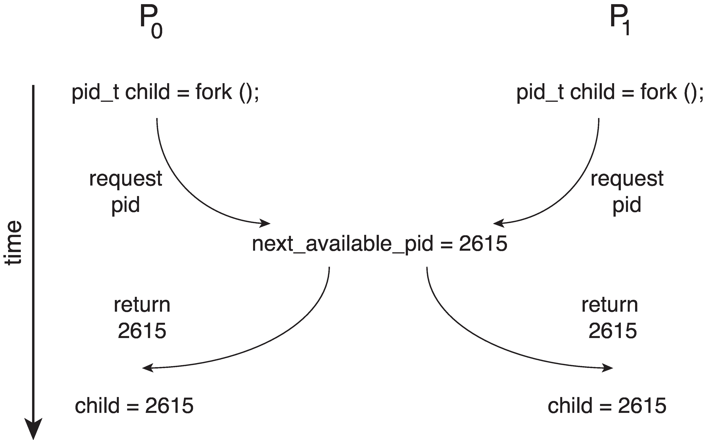
fork() aynı next_available_pid değerini (2615) okur ve iki child aynı PID'i alır. Bu bir düşünce deneyidir: güncel Linux'un yinelenen canlı PID verdiği iddiası değildir. OSC 10e, Ch.6 slayt 5.İz (kontrol et, sonra ayır; check-then-reserve):
| Adım | P0 (fork) | P1 (fork) | next_available_pid |
|---|---|---|---|
| 1 | oku → 2615 | 2615 | |
| 2 | oku → 2615 | 2615 | |
| 3 | 2616 yaz, 2615 döndür | 2616 | |
| 4 | 2616 yaz, 2615 döndür | 2616 |
İki child aynı PID'i alır. next_available_pid yalnızca bir kez ilerler (2616); bir ilerleme kaybolur. Yapı sayaçtakiyle aynıdır: oku, karar ver, yaz.
Hocanın iki cümlesi sl. 10:
- "The check and reservation must be coordinated. Merely reading the identifier atomically does not reserve it." Atomik okuma ayırma (reservation) yapmaz.
- "This is a conceptual failure scenario, not evidence that current Linux fork() allocates duplicate live PIDs." Gerçek Linux PID tahsisi kilitlidir. (ek bilgi: Linux PID'leri
pid_namespaceiçindeki bir IDR yapısından bir spinlock altında ayırır.)
Çalışılmış soru. next_available_pid atomic_int yapılsa ama kod v = atomic_load(&p); atomic_store(&p, v+1); return v; olsa yarış biter mi? Hayır. Bunlar iki ayrı atomik işlemdir, yukarıdaki iz aynen tekrarlanır sl. 10; sl. 22. Çözüm tek bir RMW (atomic_fetch_add(&p, 1)) ya da kilittir. Gerçek tahsisçide "boş mu?" kontrolü de bulunduğundan genelde kilit gerekir.
1.6 Linux'ta nasıl görünür sl. 5; OSTEP 26.4#
counter.c'ninmutexmodu-O2ile derlenince arm64'tecounter++ayrıldr / add / strkomutlarına dönüşür (macOS'ta çalıştırıldı; assembly §5.11'de). Bu, sl. 5'teki "oku, ekle, yaz" modelinin makinedeki karşılığıdır. Doğruluğu komutun kendisi değil, onu saran kilit sağlar sl. 27.- Yarışlı (racy) bir sayacın gerçekte ne verdiği §2.6'da. Ön bilgi: sonuç "biraz küçük" değil, derleyiciye göre çok farklı çıkabilir.
Tuzaklar.
- "Zaman dilimini büyütürsem yarış kaybolur": olasılığı değiştirir, protokol tanımlamaz Okuma §1.
- "Araya bir
sleepkoydum, artık çalışıyor": bekleme, öteki thread'in belirli bir noktaya ulaştığını kanıtlamaz Okuma §3. - "Tek çekirdekte yarış olmaz": kesme okuma ile ona bağlı yazmanın arasına girebilir sl. 34; S-1.
- "6 sıradan 4'ü kötü, demek ki 2/3 olasılıkla bozulur": yanlış sl. 9.
- "Son yazmayı atomik yaparsam lost update biter": yanlış; bütün RMW bölünmez olmalı Okuma §2.
- "Atomik okuma bir kaynağı ayırır": ayırmaz; kontrol ile ayırma birlikte koordine edilmeli sl. 10.
Kontrol soruları
- İki thread bir sayacı 0'dan birer kez artırıyor (önce oku, sonra yaz). Hangi sıralar 1 ile biter? Altısını da yazmadan, ayırt edici kuralı kullanarak söyle.
- Bir thread'in pointer değişkeni fonksiyonun içinde yerel tanımlanmış. Gösterdiği nesne özel midir?
2. Race condition, data race, invariant ve critical section sl. 11–15#
2.1 Race condition ile C data race sl. 11; Okuma §3#
Hocanın en dikkatli kurduğu ayrım bu; sınavda tanımın kelimeleri önemli.
Race condition (yarış durumu). "A correctness failure that depends on timing or ordering. It can occur even when individual accesses are atomic." sl. 11 Bu bir program doğruluğu kavramıdır. Örnek: counter.c'nin split modu. Bütün erişimler atomic_load / atomic_store, yani data race yok, ama sonuç 1 sl. 32; Okuma §3.
Data race (veri yarışı, C dili anlamında). "Conflicting accesses in different threads, at least one non-atomic, without the required ordering constitute a data race: behaviour is undefined." sl. 11 Okumanın daha teknik ifadesi: "without the required happens-before relationship" Okuma §3. Okuma kaynak olarak C11 taslağı N1570 §5.1.2.4'ü gösterir Okuma §3.
C11'in maddeleri (§5.1.2.4'ün özü; ek bilgi):
- Çakışan (conflicting) erişimler: iki erişim aynı bellek konumuna gider ve en az biri yazmadır.
- Data race: farklı thread'lerdeki iki çakışan eylemden en az biri atomik değildir ve hiçbiri ötekinden önce gerçekleşmez (happens-before yoktur).
- Sonuç: "Any such data race results in undefined behavior."
İki kavramın ilişkisi:
| Race condition var | Race condition yok | |
|---|---|---|
| Data race var | Klasik counter++ (düz long) |
"Zararsız" sanılan bir bayrak okuması; C'de yine de UB Okuma §3 |
| Data race yok | split modu: atomik load + ayrı atomik store sl. 32 |
mutex ve atomic modları sl. 32 |
Neden UB önemli? Hoca: "A data-racy C program therefore cannot be explained completely by promising that the counter will merely be too small. Compiler transformations and the language's rules matter as well as the machine instruction sequence." Okuma §3 Bunun canlı örneği §2.6'daki deney. Hocanın kuralı da buradan gelir: soyut izle öğret, çalıştırılabilir örnekte mutex ya da C atomics kullan sl. 11. counter.c'de bu yüzden racy modu yoktur; hoca UB içeren bir program dağıtmak istemez.
volatile senkronizasyon değildir sl. 11; sl. 19; sl. 34; Okuma §3. Hocanın cevabı: "It does not provide mutual exclusion or the synchronization required between threads." sl. 34 Ayrıntı ek bilgi: volatile her erişimin derleyici tarafından gerçekten yapılmasını sağlar. Şunları yapmaz:
- mutual exclusion sağlamaz,
- RMW'yi atomik yapmaz (
volatile long c; c++;yine oku–ekle–yaz), - thread'ler arası happens-before kurmaz (C11'de
volatileerişim atomik sayılmaz; data race yine UB), - donanımın yeniden sıralamasını (reordering) engellemez.
Terim tuzağı. OSTEP "race condition (or, more specifically, a data race)" diyerek iki terimi neredeyse eş anlamlı kullanır OSTEP 26.4. Hoca ayırır. Sınavda hocanın ayrımını kullan: race condition = zamanlamaya bağlı doğruluk hatası; data race = C dil kuralı ihlali, yani UB.
2.2 Invariant sl. 12; Okuma §4#
Tanım. "An invariant states what valid shared state means." sl. 12 Hocanın örnekleri:
- kuyruk:
0 ≤ count ≤ capacity, - transfer: toplam bakiye korunur (bakiyeler değişse de toplam sabittir).
Okuma FIFO kuyruğu için daha güçlü bir tanım ekler: kabul edilen her öğe tam bir kez çıkarılır ve öğeler ekleme sırasıyla çıkarılır Okuma §4.
Hocanın üç kuralı sl. 12:
- Critical section, invariant'ı yeniden kuran bütün işlem olarak seçilir. "Locking only the final write is insufficient."
- Bütün çakışan erişim yolları aynı protokolü izler.
- Tutarlı bir anlık görüntü (snapshot) isteyen okuyucular da protokole katılır.
Mekanizma. Critical section'ın içinde invariant geçici olarak bozulabilir: transferde borç düşülmüş, alacak henüz eklenmemiştir. Kilit bırakılmadan önce invariant yeniden kurulmalıdır Okuma §8. Kilit bu bozuk ara durumu dışarıdan görünmez kılar. Okumanın uyarısı: "An object is not protected simply because a lock happens to exist somewhere in the program." Okuma §8
2.3 Critical section yapısı sl. 13; OSC ch6 sl. 6–7; Okuma §4#
while (true) {
/* entry section : izin iste */
/* critical section : korunan durum üzerinde işlem */
/* exit section : izni bırak */
/* remainder section: bağımsız iş, kilit tutulmaz */
}

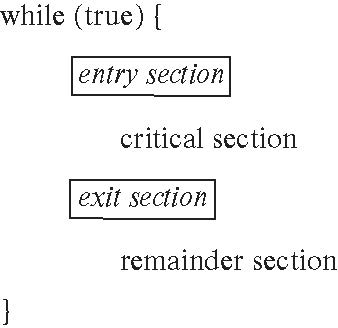
Tanımlar sl. 13:
- Entry section (giriş bölümü): izin ister.
- Critical section (kritik bölüm): korunan durumla çalışır. Okumanın tanımı: "the part of an operation that accesses protected shared state under an exclusion protocol" Okuma §4.
- Exit section (çıkış bölümü): izni bırakır.
- Remainder section (kalan bölüm): bağımsız iş yapar, kilit tutmaz.
Hocanın cümlesi: "The protected resource determines which critical sections conflict; unrelated resources can use different locks." sl. 13 Critical section koda değil kaynağa bağlıdır. Aynı kaynağa dokunan iki farklı fonksiyon birbiriyle çakışır; farklı kaynaklara dokunan iki kod bölgesi çakışmaz. OSC problemi n process üzerinden kurar: "When one process in critical section, no other may be in its critical section" OSC ch6 sl. 6.
2.4 Üç doğruluk şartı sl. 14; OSC ch6 sl. 8; Okuma §4#
| Şart | Hocanın ifadesi sl. 14 | Tür |
|---|---|---|
| Mutual exclusion (karşılıklı dışlama) | Hiçbir iki katılımcı çakışan critical section'ları birlikte yürütmez. | safety |
| Progress (ilerleme) | Bölüm boşken ve istek varken sıradaki girenin seçimi süresiz ertelenemez. | liveness |
| Bounded waiting (sınırlı bekleme) | Bir istekten sonra başkalarının önce girebileceği sayıda bir üst sınır vardır. "This is stronger than exclusion alone." | liveness, adalet |
OSC'nin ifadeleri ve varsayımları OSC ch6 sl. 8:
- Progress: "…the selection of the process that will enter the critical section next cannot be postponed indefinitely". Klasik kitap ifadesindeki "remainder section'daki process'ler seçime katılmaz" kısmı ne hocanın slaytında ne OSC slaytında var (OSC kitabı; ek bilgi). Strict alternation analizinin özü yine de odur (§3.1).
- Bounded waiting: sınır, istek yapıldıktan sonra başkalarının kaç kez girebileceğine konur; süreye değil giriş sayısına.
- Varsayımlar: her process sıfırdan büyük hızla (nonzero speed) çalışır; process'lerin göreli hızı hakkında hiçbir varsayım yapılmaz.
İnce noktalar.
- Bounded waiting bir adalet (fairness) özelliğidir, dışlamanın sonucu değildir Okuma §4.
- Progress "biri girecek" der; bounded waiting "sen sınırlı sayıda girişten sonra gireceksin" der. Basit bir TAS/CAS spinlock'u progress'i sağlar, bounded waiting'i sağlamaz (§4.2).
- Sınır sayı cinsindendir. Süre sınırı için ayrıca critical section'ların sonlu olduğu ve scheduler'ın adil olduğu varsayılmalıdır.
2.5 Safety ve liveness sl. 15; OSC ch6 sl. 56; Okuma §4; Okuma §15#
- Safety (güvenlik): "something bad never happens". Örnek: iki sahibin korunan bir kuyruğu birlikte değiştirmesi sl. 15. ek bilgi Bir safety ihlalinin sonlu bir tanık izi vardır: iki thread aynı anda CS'de.
- Liveness (canlılık): "useful progress eventually happens" sl. 15. ek bilgi İhlali ancak sonsuz bir yürütmeyle gösterilir: birinin sonsuza dek beklediği iz.
Hocanın örneği: "A system can protect data perfectly by blocking every thread forever, yet be useless." sl. 15 Hiç kimseyi içeri almayan bir protokol mükemmel biçimde güvenlidir ama canlı değildir.
Hocanın cümlesi: "When evaluating a solution, state scheduler and termination assumptions. Mutual exclusion alone does not establish fairness." sl. 15 Bir çözümü değerlendirirken şu varsayımları açıkça söyle: critical section'lar sonlanıyor mu, scheduler her thread'i sonunda çalıştırıyor mu?
OSC liveness'ı process'lerin ilerlemesini sağlayan özellikler kümesi olarak tanımlar ve süresiz beklemeyi progress ve bounded waiting ihlali sayar OSC ch6 sl. 56. Deadlock, starvation ve livelock ayrı liveness hatalarıdır; birinden kaçınmak ötekilerin yokluğunu göstermez Okuma §15. Ayrıntı §10.1'de.
Çalışılmış soru. "Testte hiç iki thread aynı anda CS'de görülmedi" demek hangi şartı, ne ölçüde destekler? Yalnızca mutual exclusion'ı (safety), o da yalnızca örneklenen yürütmeler için. Progress ve bounded waiting için gözlem yetmez; varsayımlar ve bir sıralama argümanı gerekir sl. 33; Okuma §16.
2.6 Linux'ta nasıl görünür: yarışlı sayaç ve ThreadSanitizer sl. 11; Okuma §3#
counter.c'de racy mod olmadığı için Linux ve C uzmanı ayrı bir deney programı (racy.c) yazdı. Dört mod, iki thread × 1.000.000 artırma, beklenen 2.000.000 (macOS'ta çalıştırıldı; her mod 10 kez):
| Mod | Kod | C anlamı | -O0 |
-O2 |
|---|---|---|---|---|
plain |
long counter++ |
data race, yani UB sl. 11 | 1,07M–2,0M arası dağınık (bir koşuda 2.000.000) | yalnızca 1.000.000 ya da 2.000.000 |
volatile |
volatile long counter++ |
yine data race sl. 11; Okuma §3 | dağınık | dağınık, 10 koşunun 9'unda kayıp |
loadstore |
atomic_load, sonra atomic_store |
data race yok, race condition var sl. 22 | dağınık, hep yanlış | dağınık, hep yanlış |
fetchadd |
atomic_fetch_add |
doğru | 10 × 2.000.000 | 10 × 2.000.000 |
En ilginç satır plain -O2. Sonuç ya tam 1.000.000 ya da tam 2.000.000; arada hiçbir değer yok. Assembly (cc -std=c11 -O2 -S racy.c) nedenini gösterir:
_w_plain: ; -O2, arm64
ldr x10, [x9, _plain_counter@PAGEOFF] ; tek load
add x8, x8, x10 ; counter + iterations
str x8, [x9, _plain_counter@PAGEOFF] ; tek store
Derleyici 1.000.000 turluk döngüyü katladı (fold) ve counter += iterations yazdı. Data race içeren programda derleyici başka thread'lerin araya girmeyeceğini varsayabilir, bu yüzden dönüşüm yasaldır ek bilgi; C11 bellek modeli. "Lost update" artık tek tek artırmaları değil, bir thread'in bütün işini kaybetmek demektir: iki thread aynı başlangıç değerini okursa 1.000.000, okumalar sıralı olursa 2.000.000. Aynı örüntü 2 × 100.000 ile de görüldü (-O2'de 200.000 ya da 100.000; -O0'da 104 bin–115 bin). Hocanın "sayaç biraz küçük çıkar diye açıklanamaz" uyarısının somut hali budur Okuma §3. -O0'da aynı fonksiyon her turda ldr / add / str yapar, sonuçlar bu yüzden dağınıktır.
volatile-O2'de döngünün katlanmasını engeller (her erişim zorunlu), ama güncellemeler yine kaybolur.volatilebölünmezlik de sıralama da sağlamaz sl. 11.loadstoreprogramı tanımlıdır (UB yok), ama sonuç yanlıştır. Race condition'ın tanımı tam budur.counter.c'ninsplitmodu aynı şeyi deterministik hâle getirir (§5.9).
ThreadSanitizer (TSan) (macOS'ta çalıştırıldı; cc -std=c11 -O1 -g -fsanitize=thread -pthread racy.c):
| Program, mod | TSan uyarısı | Program çıktısı |
|---|---|---|
counter mutex / atomic / split |
0 | doğru |
queue |
0 | doğru |
racy plain |
1 (data race) | actual=200000: sonuç doğru ama yarış var |
racy volatile |
1 | yanlış |
racy loadstore |
0 | actual=160565: yanlış sonuç, TSan sessiz |
racy fetchadd |
0 | doğru |
ifwhile (if + broadcast) |
0 | yüz binlerce hatalı uyanma (§7.9) |
İki ders çıkar:
- TSan C data race'ini bulur, race condition'ı bulmaz. Hocanın ayrımı burada birebir görülür sl. 11.
- Doğru sonuç ≠ yarışsız program.
plainTSan altında 200.000 verdi ve yine de raporlandı.
TSan raporunu okuma sırası ek bilgi: başlık (data race) → iki çakışan erişim ve stack izleri (#0 w_plain racy.c:22, yani plain_counter++) → Location (yarışılan global nesne) → thread'lerin nerede yaratıldığı → SUMMARY satırı. TSan gerçek zamanlı örtüşmeyi değil, happens-before ilişkisinin eksikliğini arar; iki thread zamanda hiç örtüşmese bile aralarında senkronizasyon yoksa raporlar ek bilgi. macOS'ta TSan uyarı bulunca süreci abort() eder, çıkış kodu 134 olur; TSAN_OPTIONS=abort_on_error=0 ile TSan'ın varsayılanı 66 görüldü. Linux'ta varsayılanın 66 olması beklenir ek bilgi; Linux'a özgü, burada doğrulanmadı.
Helgrind (Linux'a özgü, burada doğrulanmadı; Valgrind macOS/arm64'te yok): valgrind --tool=helgrind ./racy-g plain 10000 ile "Possible data race during write of size 8" beklenir. Helgrind ikili kodu çalışma anında enstrümante eder, yeniden derleme istemez ama çok yavaşlatır. C11 atomiklerini tam anlamayabilir, atomic ve split modlarında yanlış alarm verebilir. Kilit sırası ihlallerini de raporlar; bu 4. haftanın deadlock konusuna bağlanır ek bilgi.
Tuzaklar.
- "Race condition = data race": hocada değil; biri doğruluk hatası, öteki dilin UB kuralı sl. 11. OSTEP terimleri gevşek kullanır.
- "Değişken
atomicise kod doğrudur": atomik alan ≠ atomik işlem sl. 22; sl. 32; sl. 34. - "
volatilethread'ler arası senkronizasyondur": yanlış sl. 11; sl. 34. - "Programda bir kilit var, demek ki nesne korunuyor": nesne ancak bütün çakışan yollar aynı protokole uyarsa korunur sl. 12; Okuma §8.
- "Yazarı kilitledim, okuyucu kilitsiz okuyabilir": tutarlı görüntü isteniyorsa yanlış sl. 12; sl. 28.
- "Mutual exclusion varsa adalet de vardır": yanlış sl. 14; sl. 15.
- "TSan temiz, program doğru": TSan protokol hatası aramaz.
Kontrol soruları
- Bütün erişimler atomikken race condition olabilir mi? Bir örnekle göster.
- Bir tasarım her thread'i sonsuza dek bloklayarak veriyi koruyor. Hangi özelliği sağlar, hangisini bozar?
3. Yazılım çözümleri: strict alternation ve Peterson sl. 16–19#
3.1 Strict alternation sl. 16; OSC ch6 sl. 10–12; Okuma §6#
Kod OSC ch6 sl. 11. Paylaşılan int turn, başlangıç 0. P_i için j = 1 − i:
while (true) {
while (turn == j) ; /* entry: sıra bende değilse dön */
/* critical section */
turn = j; /* exit: sırayı karşıya ver */
/* remainder section */
}
Mutual exclusion sağlanır sl. 16; OSC ch6 sl. 12. P_i yalnızca turn == i iken girer; turn aynı anda hem 0 hem 1 olamaz (soyut modelde, yani atomik load/store ve SC altında).
Progress bozulur. Hoca: "thread 0 may wait for thread 1 even when thread 1 does not want to enter." sl. 16 Somut iz:
| Adım | T0 | T1 | turn | Açıklama |
|---|---|---|---|---|
| 0 | remainder (uzun iş ya da hiç girmeyecek) | 0 | ||
| 1 | entry: turn == 1? hayır → gir |
0 | ||
| 2 | CS | 0 | ||
| 3 | exit: turn = 1 |
1 | ||
| 4 | remainder (kısa) | 1 | ||
| 5 | entry: turn == 1 → dön |
remainder | 1 | CS boş, istekli tek thread T0 |
| 6… | dön, dön, … | remainder (sonsuz) | 1 | T0 sonsuza dek bekler |
CS boştur ve isteyen tek thread T0'dır, ama giriş kararı ilgisiz T1'e bağlıdır: turn = 1'i değiştirebilecek tek kişi T1'dir. Bu progress tanımının doğrudan ihlalidir S-2.
Hocanın cümlesi: "A thread doing unrelated work must not prevent the only interested thread from entering." sl. 16 Okumanın teşhisi: protokol girme isteğini (interest) ve iki taraf da istediğinde kullanılan eşitlik bozma kuralını (tie-breaking) ayırmalıdır Okuma §6. Strict alternation yalnızca ikincisine sahiptir. Peterson'ın eklediği şey tam olarak birincisidir (flag[]).
- Bounded waiting? OSC bunu soru olarak bırakır OSC ch6 sl. 12. Teknik olarak sağlanır: T_i istedikten sonra T_j en fazla bir kez girer, çünkü çıkışta sırayı T_i'ye verir. Ama progress bozukken bu anlamlı bir garanti değildir ek bilgi; analiz.
- Yan etki ek bilgi: iki thread'i 1:1 oranında çalışmaya zorlar; hızlı thread yavaşın temposuna iner. Ek slayt 83'teki "her sıraya bir condition" deseninde de aynı risk vardır: "A stalled designated thread can stop this strict-turn protocol." sl. 83 (§11.8)
3.2 Peterson'ın iki thread'lik protokolü sl. 17; OSC ch6 sl. 13–14; Okuma §6#
Sezgi. Her thread önce "girmek istiyorum" der (flag[i] = true), sonra kibarca "berabere kalırsak sen geç" der (turn = j) sl. 17.
Kod (hocanın soyut sözde kodu (pseudocode) sl. 17; OSC ch6 sl. 14 aynısını while (true) içinde verir):
/* paylaşılan: bool flag[2] = {false, false}; int turn; j = 1 - i */
flag[i] = true; /* (1) ilgi ilanı */
turn = j; /* (2) karşıya öncelik */
while (flag[j] && turn == j) { } /* (3) bekle */
/* critical section */
flag[i] = false; /* (4) çıkış */
Hocanın açıkça yazdığı varsayımlar sl. 17: atomik okuma/yazma ve sequential consistency; iki thread; critical section'lar sonunda biter. Uyarısı: "This is reasoning pseudocode, not a safe copy-and-paste C implementation." sl. 17 Gerekçesi §3.4–3.5'te.
Giriş koşulu (OSC'nin ifadesi): P_i, CS'ye ancak flag[j] == false ya da turn == i iken girer OSC ch6 sl. 15.
3.3 Tie-breaking argümanı ve üç şartın ispatı sl. 18; OSC ch6 sl. 15; Okuma §6#
Hocanın argümanı sl. 18:
- "If both flags are true, the last write to turn selects the thread that waits. The other can enter."
- "Both cannot simultaneously satisfy the entry condition when both flags remain true, because turn has only one value."
- "When the owner leaves, it clears its flag. The waiting peer can proceed…"
OSC yalnızca "Provable that the three CS requirement are met" der OSC ch6 sl. 15. Aşağıda argüman SC modeli altında tam ispata çevriliyor.
(a) Mutual exclusion. Olmayana ergi: ikisi de CS'de olsun. İkisi de (2)'de turn'e yazdı. Genelliği bozmadan son yazan P0 olsun; yani P0 turn = 1 yazdı ve bu, P1'in turn = 0 yazmasından sonra oldu.
- Program sırasına göre P1'in
flag[1] = trueyazması kenditurn = 0yazmasından önce; o da P0'ınturn = 1yazmasından önce; o da P0'ın (3)'teki testinden önce. - Demek ki P0 test ettiğinde
flag[1] == true. P1 CS'den çıkmadan bu değer false olmaz. turn == 1, çünkü P0'dan sonra kimseturn'e yazmadı.- P0'ın koşulu
flag[1] && turn == 1doğrudur ve P0 bekler. Çelişki.
Argüman "flag yazması turn yazmasından önce herkesçe görülür" varsayımına (SC + program sırası) dayanır. §3.4 tam bunu bozar.
(b) Progress.
- P_j istekli değilse
flag[j] == falseolur ve P_i hemen girer. İlgisiz bir thread kimseyi bekletmez; strict alternation'ın hatası giderilmiştir. - İkisi de istekliyse ikisi aynı anda beklemede kalamaz, çünkü bu
turn == 1veturn == 0'ın aynı anda doğru olmasını gerektirir. Seçim ertelenmez; deadlock yoktur.
(c) Bounded waiting (sınır = 1).
- P_i (2)'yi yapmış ve bekliyor olsun:
flag[i] == trueveturn == j. - P_j CS'den çıkınca
flag[j] = falseyapar; P_i'nin koşulu yanlış olur. - P_j hemen yeniden girmeye çalışırsa (1)'de
flag[j] = true, (2)'deturn = iyazar. Artık kendi koşuluflag[i] && turn == idoğrudur; P_j bekler, P_i girer.
P_i istek yaptıktan sonra P_j en fazla bir kez girebilir. Bütün durumlar tarandı: dışlama ihlali yok, küresel kilitlenme yok, bekleyen thread'in önünden en fazla 1 giriş (istek, giriş bölümünün tamamlanmasıyla, yani turn yazımıyla sayılırsa).
Çalışılmış soru. İki thread de (1)'i yaptı, P1 (2)'yi P0'dan sonra yaptı. Kim girer? P0. Son yazan P1 olduğu için turn == 0; P1'in koşulu flag[0] && turn == 0 doğrudur ve P1 bekler sl. 18.
Varyant: turn = j yerine turn = i ek bilgi; durum taramasıyla doğrulandı. Artık "son yazan kazanır" ve dışlama bozulur: P0 flag[0] = true; turn = 0 yazar, flag[1]'i false görür ve girer. P1 flag[1] = true; turn = 1 yazar; flag[0] && turn == 0? turn 1 olduğu için yanlış, P1 de girer. Fedakârlık, yani karşıya öncelik vermek, argümanın kalbidir. Bounded waiting için de kritik olan budur: giren thread yeniden istediğinde kendini dezavantajlı duruma sokar.
3.4 Sıralama varsayımları önemlidir sl. 19; OSC ch6 sl. 16–19; Okuma §6#
Hocanın cümleleri sl. 19:
- "The original diagram illustrates how changing the order of interest and turn operations can defeat the proof."
- "A compiler or processor need not implement naïve shared-variable pseudocode as the sequentially consistent machine assumed by the proof."
- "…adding volatile does not repair this."

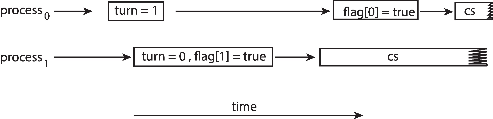
turn, sonra flag) iki process de critical section'a girer. İspatın sıralama varsayımları bu yüzden önemlidir. OSC 10e, Ch.6 slayt 19.OSC şekli ("The effects of instruction reordering in Peterson's Solution") OSC ch6 sl. 19: process0 turn = 1 → (uzun boşluk) → flag[0] = true → cs; process1 turn = 0, flag[1] = true → cs. Altyazı: "This allows both processes to be in their critical section at the same time!"
Şekil, P0'ın iki yazısının yer değiştirdiği durumu gösterir. Bunun kaynağı derleyici ya da işlemci olabilir; ikisi bağımsız değişkenlere yazdığı için yeniden sıralanabilir OSC ch6 sl. 16. Aşağıdaki iz SC altında bile geçerlidir; yani sırayı kaynak kodda ters yazmak da aynı sonucu verir. sl. 19'un iki okuması (yürütmede yeniden sıralama ve kaynak kodda ters sıra) ikisi de doğrudur:
| Adım | P0 (turn önce, flag sonra) |
P1 (doğru sıra) | flag[0] | flag[1] | turn |
|---|---|---|---|---|---|
| 0 | F | F | 0 | ||
| 1 | turn = 1 |
F | F | 1 | |
| 2 | turn = 0 (şekildeki kutu "turn=0, flag[1]=true") |
F | F | 0 | |
| 3 | flag[1] = true |
F | T | 0 | |
| 4 | test: flag[0] = F → gir |
F | T | 0 | |
| 5 | flag[0] = true |
(CS'de) | T | T | 0 |
| 6 | test: flag[1] && turn == 1? turn 0 → yanlış → gir |
(CS'de) | T | T | 0 |
| CS | CS |
turn yazısından sonra görünür olunca iki critical section üst üste biner (sl. 19).Neden ispat çöktü? §3.3(a)'nın 1. adımı kullanılamaz. P1, P0'ın turn = 1 yazısından sonra turn = 0 yazdığı hâlde, P0'ın ilgisi henüz yazılmamış olduğu için flag[0]'ı false gördü. P0 ise ilgisini ilan ettikten sonra turn'ün son yazanı olmadığı için (turn 0, kendi lehine) girdi. "Son turn yazanı bekler" kuralı ancak ilgi ilanı turn'den önce herkese görünüyorsa işe yarar.
Kaynak kodunda yalnızca P0'ı ters olan Peterson da, iki thread'i de ters olan Peterson da SC altında bozuktur; durum taraması ikisinde de ihlal buldu, en kısası yukarıdaki iz. İki thread de ters olsa iz adım adım aynı kalır, çünkü P1'in iki yazısı arada kimse koşmadan art arda geldiği için sıraları fark etmez. Genel kural: ilgi ilanı, tie-break yazısından sonra görünür olursa protokol bozulur.
3.5 Bellek sıralamasına kısa giriş: store buffer, fence, C11 atomics sl. 19–20; OSC ch6 sl. 16–22; Okuma §6; Okuma §7#
Bu alt bölümün büyük kısmı ek bilgidir. Kaynakta olan kısım: OSC'nin bellek modeli ve bariyer slaytları, hocanın uyarıları sl. 19; sl. 20; Okuma §6.
(i) Program sırası doğru olsa bile donanım bozabilir: store buffer ek bilgi. x86 (TSO) dahil modern işlemcilerde her çekirdeğin bir store buffer'ı (yazma tamponu) vardır. Yazmalar önce tampona girer, belleğe (cache tutarlılık alanına) sonra boşaltılır. Çekirdek kendi tamponundaki değeri görür, öteki çekirdek görmez. Dışarıdan bakınca "store → sonraki load" sırası bozulur. Peterson tam bu kalıba sahiptir: iki store (flag, turn), ardından bir load (flag[j]).
Store buffer modelinde doğru sıralı Peterson için bulunan en kısa ihlal izi (denetçinin TSO modeli de aynı izi buldu):
| Adım | P0 | P1 | Bellekte flag[0] | Bellekte flag[1] | P0 tamponu | P1 tamponu |
|---|---|---|---|---|---|---|
| 1 | flag[0] = 1 → tampon |
0 | 0 | flag[0]=1 | ||
| 2 | turn = 1 → tampon |
0 | 0 | flag[0]=1, turn=1 | ||
| 3 | test: flag[1] bellekten 0 → gir |
0 | 0 | … | ||
| 4 | flag[1] = 1 → tampon |
0 | 0 | … | flag[1]=1 | |
| 5 | turn = 0 → tampon |
0 | 0 | … | flag[1]=1, turn=0 | |
| 6 | test: flag[0] bellekten 0 → gir |
0 | 0 | … | … |
İki yazma da henüz tampondadır; her biri ötekinin bayrağını 0 görür. Kaynak kodunda hiçbir şey ters değildir. OSC'nin "Peterson's Solution is not guaranteed to work on modern architectures" cümlesinin somut mekanizması budur OSC ch6 sl. 16. Her store'dan sonra bir seq_cst fence konunca modelde ihlal kalmaz.
flag[i] = 1 yazıları tamponda beklerken iki load da bellekten 0 okur. Altta seq_cst fence, tamponu boşaltmadan load'un geçmesine izin vermeyen bir bariyer olarak gösteriliyor ek bilgi.(ii) Derleyici de bozabilir ek bilgi. Düz değişkenlerle C'de Peterson bir data race'tir, dolayısıyla UB. Derleyici iki bağımsız store'u yer değiştirebilir ya da while (flag[j] && turn == j) içindeki load'ları döngü dışına alıp sonsuz döngü üretebilir. volatile ikinci sorunu derleyici düzeyinde hafifletir; ama birinciyi donanım düzeyinde çözmez ve C11'de data race'i ortadan kaldırmaz. Hoca: "adding volatile does not repair this" sl. 19. Aynı nedenle düz int üzerinde -O2 ile derlenmiş while (!ready) ; sonsuz döngüye girebilir: data race olmadığını varsayan derleyici ready'yi bir kez okuyup döngü dışına alabilir ek bilgi. Çare atomic_bool ya da bir CV/semaphore'dur, volatile değil.
(iii) OSC'nin örneği ve bariyer OSC ch6 sl. 17–22:
- Thread 1:
while (!flag) ; print x; - Thread 2:
x = 100; flag = true;
Beklenen çıktı 100. Ama flag ile x bağımsız olduğundan Thread 2'nin yazıları yer değiştirebilir ve çıktı 0 olabilir OSC ch6 sl. 17–18. OSC'nin çözümü: Thread 2'de x = 100; memory_barrier(); flag = true;, Thread 1'de while (!flag) memory_barrier(); print x; OSC ch6 sl. 22. OSC iki model tanımlar: strongly ordered ("a memory modification of one processor is immediately visible to all other processors") ve weakly ordered OSC ch6 sl. 20.
Hocanın düzeltmesi (önemli): "It is misleading to teach a generic 'memory barrier' as a magic operation that makes all memory immediately consistent everywhere: barriers and atomic operations provide particular ordering guarantees, with different strengths and contexts." Okuma §6 OSC'nin bariyer tanımı ("forces any change in memory to be propagated (made visible) to all other processors") OSC ch6 sl. 20 bu cümleyle gerilim içinde. Tuzak: sınavda hocanın çerçevesini kullan. Bariyer bir sıralama garantisidir, "her şeyi anında görünür yapan" sihirli bir düğme değildir.
(iv) C11'de doğru yazım ek bilgi. En basit yol, flag ve turn'ü atomik yapıp varsayılan memory_order_seq_cst ile erişmektir:
#include <stdatomic.h>
static atomic_bool flag[2];
static atomic_int turn;
void lock(int i) { /* yalnızca öğretim amaçlı; üretimde pthread_mutex kullan */
int j = 1 - i;
atomic_store(&flag[i], true); /* seq_cst */
atomic_store(&turn, j); /* seq_cst */
while (atomic_load(&flag[j]) && atomic_load(&turn) == j)
; /* spin */
}
void unlock(int i) { atomic_store(&flag[i], false); }
seq_cstişlemler bütün thread'lerin üzerinde anlaştığı tek bir toplam sıra oluşturur. Bu, ispatın varsaydığı SC makinesini o değişkenler için geri getirir.- Tuzak: release/acquire yetmez. Release-store'dan sonraki acquire-load yer değiştirebilir; store → load sırası korunmaz ve Peterson'ın ihtiyaç duyduğu tam olarak budur. Acquire/release "release-store'dan önceki her şey önce, acquire-load'dan sonraki her şey sonra" der; "benim store'um sonraki load'umdan önce görünür olsun" demez. Store buffer izi acq/rel altında da mümkündür. Gerekli olan seq_cst ya da store'larla load arasında
atomic_thread_fence(memory_order_seq_cst)'dir. - Hocanın çizgisi: "Use synchronization APIs or a correctly specified atomic algorithm" sl. 19. Üretim kodunda Peterson yazılmaz,
pthread_mutex_tkullanılır. OSTEP de aynı yerde durur: bu algoritmalar "don't work on modern hardware (due to relaxed memory consistency models)" OSTEP 28.7.
(v) Kilit ile bellek sıralaması. Hoca: "Atomicity of the lock operation and appropriate memory ordering are both needed to protect other shared data." sl. 20 Okuma: "The implementation must also provide the memory ordering needed for protected accesses" Okuma §7. Kilidi bırakan thread'in CS içindeki yazmaları, kilidi sonra alan thread'e görünür olmalıdır. POSIX pthread_mutex_lock / unlock bunu sağlar: unlock bir release, lock bir acquire gibi davranır ek bilgi. Kendi TAS kilidini yazan biri bunu kendisi sağlamak zorundadır.
3.6 Linux'ta nasıl görünür sl. 19#
- Peterson'ın bu makinede çalıştırılmış bir C sürümü yok; uzmanlar onu bilerek çalıştırmadı, çünkü hoca onu "copy-and-paste C" saymıyor sl. 17. İzler durum uzayı taramasıyla doğrulandı (SC ve ayrıca TSO store buffer modeli).
counter.c'dekiatomic_load/atomic_storeçağrıları arm64'teldar/stlrkomutlarına derlenir (§4.5). Bunlar C düzeyinde varsayılanseq_cstsıralamasıdır; AArch64'teldar/stlrçifti seq_cst'i karşılar ek bilgi. Yani makine komutunun adı ("acquire load") C programının istediği sıralamayı göstermez.
Tuzaklar.
- "Peterson'ı C'ye kopyalarım, çalışır": SC varsayımı, derleyici ve donanım yüzünden yanlış sl. 17; sl. 19.
- "
volatileeklersem düzelir": düzelmez sl. 19. - "Memory barrier her şeyi her yere anında görünür yapar": hocaya göre yanıltıcı Okuma §6; OSC'nin ifadesi bu yöne kayıyor OSC ch6 sl. 20.
- "Acquire/release her zaman yeter": Peterson'da store → load sırası için yetmez ek bilgi.
- "Strict alternation dışlamayı sağladığına göre doğrudur": progress bozuk sl. 16; S-2.
Kontrol soruları
- Strict alternation'da hangi şart bozulur? Mutual exclusion korunur mu?
- Peterson'da iki bayrak da true. Kim bekler, neden ikisi birden giremez?
4. Donanım atomikleri: test-and-set, CAS, fetch-add sl. 20–22#
4.1 Atomik read–modify–write sl. 20; OSC ch6 sl. 23–28; Okuma §7#
Sezgi. Yalnızca load/store ile kurulan yazılım algoritmaları karmaşıktır ve bellek modeline karşı kırılgandır. Donanım "oku–değiştir–yaz"ı tek bölünmez işlem olarak sunar OSC ch6 sl. 23–24; OSTEP 28.6–28.7.
Test-and-set (TAS) sl. 20; OSC ch6 sl. 25. Hoca: "Test-and-set atomically returns an old value and sets a flag." sl. 20
bool test_and_set(bool *target) { /* atomik olarak yürütülür */
bool rv = *target;
*target = true;
return rv; /* eski değer */
}
/* kilit [OSC ch6 sl. 26]: lock = false */
while (test_and_set(&lock)) ; /* eski değer true ise başkası sahip: dön */
/* critical section */
lock = false;
| Adım | A | B | lock | Sonuç |
|---|---|---|---|---|
| 1 | TAS → false döner, lock := true | true | A sahip | |
| 2 | TAS → true döner (lock değişmedi) | true | B döner | |
| 3 | CS | TAS → true … | true | B spin |
| 4 | lock = false |
false | ||
| 5 | TAS → false, lock := true | true | B sahip |
Compare-and-swap (CAS) sl. 20; OSC ch6 sl. 27. Hoca: "Compare-and-swap changes a value only if it matches an expected value." sl. 20
int compare_and_swap(int *value, int expected, int new_value) { /* atomik */
int temp = *value;
if (*value == expected)
*value = new_value;
return temp; /* her durumda eski değer */
}
while (compare_and_swap(&lock, 0, 1) != 0) ; /* kilit [OSC ch6 sl. 28] */
Hocanın cümlesi: "Two contenders cannot both successfully change one lock from free to held in the same logical instant." sl. 20 Okuma: "The loser cannot legitimately infer ownership merely because it attempted the operation." Okuma §7 Denemek sahiplik değildir; sahiplik dönüş değerinden çıkarılır.
4.2 Compare-and-swap izi sl. 21#
Hocanın kurulumu: lock = 0; A ve B ikisi de CAS(lock, 0, 1) dener sl. 21.
| Adım | A | B | lock | Yorum |
|---|---|---|---|---|
| 0 | 0 | serbest | ||
| 1 | CAS(lock,0,1) → 0 döner | 1 | eşleşti, takas oldu, A sahip | |
| 2 | CAS(lock,0,1) → 1 döner | 1 | 1 ≠ 0: eşleşmedi, yazma yok, B sahip değil | |
| 3 | CS | CAS → 1 (tekrar) | 1 | B spin |
| 4 | release: lock = 0 |
0 | ||
| 5 | CAS(lock,0,1) → 0 döner | 1 | B sahip |
Adım 1 ile 2 "aynı mantıksal an"da gelse bile donanım onları bir sıraya sokar. Önce sıralanan kazanır, öteki eski değer olarak 1'i görür sl. 20–21.
lock hücresi 0 → 1 → 0 → 1. CAS'ın dönüş değeri 0 ise thread kazanmıştır, 1 ise kaybetmiştir. Sağdaki döngü, yalın bir yeniden deneme döngüsünün aynı thread'i sınırsız kez öne geçirebildiğini gösterir.Bounded waiting yok sl. 21; OSTEP 28.8. Hoca: "A simple retry loop does not itself guarantee bounded waiting." sl. 21 Somut iz:
| Adım | A | B | lock |
|---|---|---|---|
| 1 | CAS → 0, sahip | 1 | |
| 2 | CS | CAS → 1, spin | 1 |
| 3 | lock = 0 |
(bu arada çalışmadı ya da cache hattını alamadı) | 0 |
| 4 | kısa remainder; CAS → 0, yine sahip | 1 | |
| 5 | CS | CAS → 1, spin | 1 |
| … | aynı döngü sonsuza dek | B hiç kazanamaz |
B'nin önünden sınırsız sayıda A girişi geçebilir. Progress sağlanır (CS boşken biri, A, giriyor), bounded waiting sağlanmaz. OSTEP: "spin locks don't provide any fairness guarantees… may lead to starvation." OSTEP 28.8
Bounded waiting'li CAS çözümü OSC ch6 sl. 29. Ek olarak bool waiting[n] kullanılır:
- Giren thread
waiting[i] = trueyapar,key = 1alır vewhile (waiting[i] && key == 1) key = CAS(&lock, 0, 1);ile bekler. - Çıkan thread kilidi doğrudan bırakmak yerine dairesel sırada (i+1, i+2, …) bekleyen ilk thread'i bulur ve onun
waiting[j] = false'unu yapar. Kilit devredilir,lock1 kalır. - Kimse beklemiyorsa
lock = 0yapılır.
Bir istekte bulunan thread en fazla n − 1 sıra sonra girer (bu sınır kitaptan; slaytta yalnızca kod var). Alternatif: fetch-and-add ile ticket lock (§4.3).
Arayüz tuzağı. "The pseudocode CAS here returns the old value; library interfaces may report success differently." sl. 21 Örnekler ek bilgi:
- C11
atomic_compare_exchange_strong(&obj, &expected, desired)bool döndürür ve başarısızlıktaexpected'ı mevcut değerle günceller. Döngüdeexpected'ı yanlış yönetmek klasik bir hatadır. _weaksürümü sahte (spurious) başarısızlık verebilir, bu yüzden döngüde kullanılır.- GCC
__sync_val_compare_and_swapeski değeri,__sync_bool_compare_and_swapbool döndürür.
4.3 Atomic fetch-add ve ticket lock sl. 22; OSC ch6 sl. 30–31; OSTEP 28.11#
Tanım. Fetch-and-add tek bir atomik işlemle eski değeri döndürür ve değeri artırır OSTEP 28.11. Hoca: "An atomic fetch-add updates one counter without a lost update." sl. 22 C11'de atomic_fetch_add(&acounter, 1); counter.c'nin atomic modu budur.
CAS ile fetch-add (OSC'nin atomik değişken uygulaması) OSC ch6 sl. 31:
void increment(atomic_int *v) {
int temp;
do {
temp = *v;
} while (temp != compare_and_swap(v, temp, temp + 1));
}
Lost update izine karşı nasıl korur? İki thread de temp = 0 okusun. A'nın CAS'ı başarılı olur (0 döner, v = 1). B'nin CAS'ı 1 döndürür ≠ temp (0), başarısızdır; B yeniden okur (temp = 1), CAS → v = 2. "Oku → hesapla → yalnızca kimse değiştirmediyse yaz" kalıbı lost update'i tam olarak yakalar. ek bilgi Bu CAS döngüsü kilitsizdir (lock-free) ama bekleme garantisi yoktur (wait-free değildir): bir thread teoride sonsuza dek yeniden deneyebilir. Donanımsal lock xadd (x86) ya da ARMv8.1 ldadd ise tek komuttur.
Ticket lock OSTEP 28.11: almak için myturn = FetchAndAdd(&lock->ticket); while (lock->turn != myturn) ;, bırakmak için lock->turn++. Bilet sırası FIFO'dur: "it ensures progress for all threads. Once a thread is assigned its ticket value, it will be scheduled at some point in the future" OSTEP 28.11. Bu bounded waiting sağlar (sınır = önündeki bilet sayısı); TAS spinlock'unda bu yoktur.
4.4 Atomik işlem ile bileşik mantık sl. 22; Okuma §3; Okuma §16#
Hocanın üç cümlesi sl. 22:
- "An atomic fetch-add updates one counter without a lost update."
- "An atomic load followed by a separate atomic store is still two operations: both threads may load the same value and overwrite each other."
- "'If capacity remains, reserve a slot' is a compound protocol. Atomic variables alone do not make the whole decision atomic."
(2)'nin izi = counter.c'nin split modu sl. 32:
| Adım | A | B | acounter | old_A | old_B |
|---|---|---|---|---|---|
| 1 | old = atomic_load → 0 |
0 | 0 | ||
| 2 | old = atomic_load → 0 |
0 | 0 | 0 | |
| 3 | buluşma: arrived = 1, cond_wait |
0 | |||
| 4 | arrived = 2, broadcast, geç |
0 | |||
| 5 | atomic_store(old + 1) → 1 |
1 | |||
| 6 | uyan, geç, atomic_store(old + 1) → 1 |
1 |
(5 ile 6'nın sırası önemsiz; ikisi de 1 yazar.) Mutex + CV buluşması (rendezvous), iki load'un ikisinin de herhangi bir store'dan önce olmasını zorlar. Bu §1.4'teki ABAB/ABBA/BAAB/BABA sınıfıdır. Okuma: "There is no C data race, but the compound increment is still wrong." Okuma §3 Hocanın amacı: "isolates the difference between atomic fields and atomic operations" Okuma §16. Atomik alan ≠ atomik işlem.
(3)'ün izi: kapasite kontrolü (örnek kod ek bilgi; ilke sl. 22):
#define CAP 10
atomic_int used; /* her alan atomik */
bool reserve_bad(void) {
if (atomic_load(&used) < CAP) { /* (a) kontrol */
atomic_fetch_add(&used, 1); /* (b) ayırma */
return true;
}
return false;
}
Başlangıç used = 9:
| Adım | A | B | used |
|---|---|---|---|
| 1 | (a) load → 9 < 10 ✓ | 9 | |
| 2 | (a) load → 9 < 10 ✓ | 9 | |
| 3 | (b) fetch_add → 10 | 10 | |
| 4 | (b) fetch_add → 11 | 11 > CAP |
Invariant used ≤ CAP bozuldu, oysa her işlem atomik ve hiç data race yok. Bu §1.5'teki PID yarışının aynısıdır: kontrol ile ayırma bağımsız atomik adımlardır. (Taramada son değer kümesi {10, 11}.)
İki doğru çözüm:
/* (1) CAS döngüsü: kontrol + ayırma tek koşullu RMW */
bool reserve_cas(void) {
int cur = atomic_load(&used);
while (cur < CAP) {
if (atomic_compare_exchange_weak(&used, &cur, cur + 1))
return true; /* cur değişmemişse ayırdık */
/* başarısızsa cur güncellendi, koşulu yeniden dene */
}
return false;
}
/* (2) Mutex: bütün karar critical section'da */
bool reserve_mutex(void) {
bool ok = false;
pthread_mutex_lock(&m);
if (used_plain < CAP) { used_plain++; ok = true; }
pthread_mutex_unlock(&m);
return ok;
}
C11'de başarısız compare_exchange, cur'a mevcut değeri yazar; bu yüzden döngüde ayrıca atomic_load gerekmez ek bilgi. Bu kullanımda sayan semaphore da doğal bir çözümdür (§6.2).
Hoca bunu ilk yarının özet sorusu yapar: "Why can atomic accesses still produce a wrong result? The intended compound operation may span several atomic accesses." sl. 34 Review slaytında da: "A counter is atomic but updated by load then store. Is the increment indivisible? No: a read–modify–write operation is needed." sl. 67
Çalışılmış soru. atomic_long balanceA, balanceB; ile transferi iki ayrı atomic_fetch_sub / atomic_fetch_add olarak yapıyorum. Lost update olur mu? Invariant korunur mu? Lost update olmaz, çünkü her biri RMW'dir. Ama bir okuyucu iki işlemin arasında toplamı eksik görebilir; çok değişkenli invariant korunmaz sl. 28; sl. 71.
4.5 Linux'ta nasıl görünür: derleyici çıktısı sl. 20; sl. 22#
cc -std=c11 -O2 -pthread -S counter.c, arm64 (macOS'ta çalıştırıldı). Worker döngüsünün özü:
LBB1_4: ; döngü başı
ldr x0, [x21, _mode@PAGEOFF]
bl _strcmp ; her turda strcmp (§5.11)
cbnz w0, LBB1_2
bl _pthread_mutex_lock ; mutex modu
ldr x8, [x23, _counter@PAGEOFF]
add x8, x8, #1 ; counter++ : load / add / store
str x8, [x23, _counter@PAGEOFF]
bl _pthread_mutex_unlock
...
LBB1_2:
ldaddal x24, x8, [x25] ; atomic_fetch_add -> TEK komut (ARMv8.1 LSE)
split dalında:
ldar x20, [x19] ; atomic_load: C'de seq_cst load
... pthread_mutex_lock / cond_wait / unlock ...
add x8, x20, #1
stlr x8, [x19] ; atomic_store: C'de seq_cst store
atomic_fetch_adddonanımda tek bir atomik RMW komutuna derlenir:ldaddal(atomik yükle-topla, acquire + release). Slayttaki TAS ve CAS ailesinin bir akrabasıdır sl. 20; OSTEP 28.11. Komut adı ek bilgi.split'tekiatomic_loadveatomic_storeiki ayrı komuttur (ldar,stlr); arasına başka bir thread'in yazması girebilir. sl. 22'nin söylediği şey assembly'de de görünür sl. 22; sl. 67.counter.cvarsayılan sıralamayı kullandığı için ikisi de C düzeyindeseq_cst'dir; AArch64'te seq_cst load ve store daldar/stlr'ye derlenir ek bilgi. Komutun mimari adı (acquire load, release store) C'deki sıralamayı göstermez; §3.5'teki "acq/rel Peterson'a yetmez" dersiyle karıştırma.counter++mutex modunda ayrıldr / add / strolarak kalır. Doğruluğu kilit sağlar sl. 27.- x86-64'te gcc/clang'ın aynı dönüşümleri yapıp yapmadığı burada doğrulanmadı ek bilgi.
Tuzaklar.
- "CAS'ı denedim, demek ki kilit bende": sahiplik dönüş değerinden çıkarılır Okuma §7.
- "Spin döngüsü adildir": yalın bir yeniden deneme döngüsü bounded waiting sağlamaz sl. 21.
- "Kütüphanenin CAS'ı da eski değeri döndürür": C11
compare_exchangebool döndürür veexpected'ı günceller sl. 21. - "Atomik değişkenler kararın tamamını atomik yapar": kontrol + ayırma bileşik bir protokoldür sl. 22.
Kontrol soruları
lock = 0. A ve B ikisi deCAS(lock, 0, 1)yapıyor, A önce. Her biri ne döndürür, kim sahiptir?- Atomik bir sayaç önce atomik load, sonra atomik store ile artırılıyor. Artırma bölünmez mi?
5. Mutex: sahiplik, kapsam, spin ve block, sayaç deneyi sl. 23–34#
5.1 Benzin istasyonu banyo anahtarı sl. 23–24; Okuma §5#
Hocanın sınıf benzetmesi sl. 23: "One key = one owner. Take the key before entering; keep it until you leave; then return it." Anahtar kaybolmasın diye uzun bir sopaya bağlıdır Okuma §5.

| Benzetme | Yazılım |
|---|---|
| Banyo | korunan kaynak (paylaşılan durum) |
| Müşteri | thread |
| Anahtarı almak | lock (acquire) |
| Anahtarı geri asmak | unlock (release) |
| Uzun sopa | doğru iadeyi teşvik eden bir alışkanlık; senkronizasyon mekanizması değil |
Benzetmenin varsayımları sl. 24; Okuma §5:
- Anahtarı almak bölünmezdir. "Checking that it is on the hook and claiming it cannot be separate competing steps." sl. 24 Yazılımda "kilitli değil mi bak" ile "kilitli işaretle" arasında tam bu boşluk vardır. OSTEP'in bozuk kilidi bunun örneğidir: tek
flagilewhile (flag == 1) ; flag = 1;. İki thread de while'da 0 görüp geçer ve ikisi deflag = 1yazar OSTEP 28.6. Çare atomik edinmedir: TAS ya da CAS (§4). - Ziyaret boyunca anahtarı tut. Erken iade dolu bir kaynağı ifşa eder (critical section kilitten taşar). Unutulmuş iade sonraki erişimi engeller; bu kalıcı engelleme bir liveness hatasıdır sl. 24.
- Sopa adalet sağlamaz sl. 24: "It does not guarantee fair admission, prevent a duplicate key, or enforce the protocol." - Askı FIFO kuyruğu değildir. Askıya hep ilk uzanan başkasını süresiz geciktirebilir; bounded waiting için bir kabul kuralı gerekir Okuma §5; S-4. - Yedek anahtar ya da ofisi atlayan biri, protokolü yok sayan bir erişim yoludur: kilit almadan paylaşılan veriye dokunan bir fonksiyon gibi Okuma §5. - Herkesin kurala uyduğu, tek bir anahtar olduğu ve başka bir giriş bulunmadığı varsayılır Okuma §5.
Çalışılmış soru (okumanın "Discuss" sorusu) Okuma §5. Bir arkadaş mutex'i sahibi adına iade edebilir mi? Sıradan bir POSIX mutex'inde hayır; kilidi açmak onu alan thread'in sorumluluğudur. Sayan semaphore'un anlamı farklıdır: başka bir katılımcı post edebilir. Benzetme bu farkı silmemelidir Okuma §5.
5.2 Mutex sahipliği sl. 25; OSC ch6 sl. 32–33; Okuma §5; Okuma §8#
Hocanın kuralları sl. 25:
- Korunan duruma dokunmadan önce mutex'i al; invariant'ı yeniden kurduktan sonra bırak.
- "An ordinary mutex has ownership: the acquiring thread is responsible for unlocking it. A semaphore is not an ownership substitute."
- "Every participant must agree on which mutex protects which state."
ek bilgi POSIX ayrıntısı: varsayılan PTHREAD_MUTEX_DEFAULT türünde sahibi olmayan thread'in açması ya da kilitli mutex'i yeniden kilitlemesi tanımsız davranıştır. PTHREAD_MUTEX_ERRORCHECK türü bu durumlarda EPERM / EDEADLK döndürür, RECURSIVE türü aynı sahibin tekrar kilitlemesine izin verir. Sahiplik sayesinde öncelik kalıtımı (priority inheritance) mümkün olur; semaphore'da "kimin önceliği yükseltilecek" belli değildir (§10.2).
OSC'nin çerçevesi OSC ch6 sl. 32: mutex en basit araçtır; acquire() ve release() atomik olmalıdır ve genellikle CAS gibi donanım komutlarıyla gerçeklenir. OSC'nin buradaki basit hâli meşgul bekleme (busy waiting) gerektirir, bu yüzden ona "spinlock" der.
Tuzak (hoca ile OSC ayrışıyor): hoca "A POSIX mutex is not defined to always spin" der sl. 30. OSC'nin "mutex = spinlock" sunumunu evrensel sanma; sınavda hocanın tarafını yaz.
5.3 POSIX mutex'i başlatmak sl. 26; OSC ch7 sl. 22; Okuma §8#
#include <pthread.h>
pthread_mutex_t mutex;
pthread_mutex_init(&mutex, NULL); /* create and initialize */
pthread_mutex_lock(&mutex); /* acquire */
/* critical section */
pthread_mutex_unlock(&mutex); /* release */

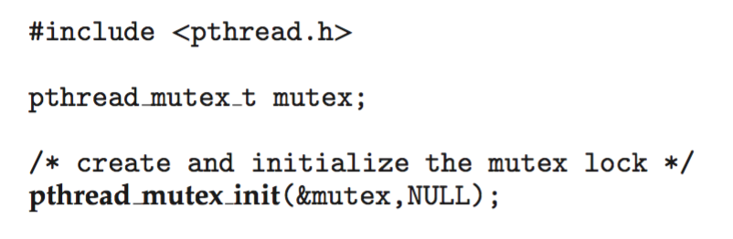

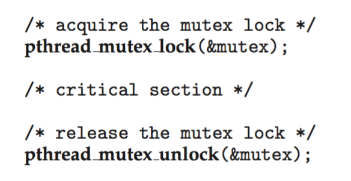
Hocanın eklediği disiplin sl. 26; Okuma §8:
- Mutex, worker thread'ler ona erişmeden önce bir kez başlatılır. Varsayılan öznitelikler için statik başlatıcı vardır:
static pthread_mutex_t m = PTHREAD_MUTEX_INITIALIZER;(counter.cbunu kullanır). - "The original snippet shows initialization; full examples must check return codes." sl. 26 pthread fonksiyonları hatayı dönüş değeri olarak (bir hata numarası) verir;
errno'ya yazıp −1 döndürmez Okuma §8.counter.c'dekicheck()bu yüzden dönüş değerinistrerror(e)ile basar. - Yok etme (
pthread_mutex_destroy) bütün kullanıcılar bittikten sonra yapılır;counter.cbunujoin'den sonra yapar sl. 26. - "Never copy an initialized mutex as though it were ordinary data." sl. 26 Bir struct'ı
memcpyile kopyalayıp kopyadaki mutex'i kullanmak tanımsız davranıştır ek bilgi: POSIX yalnızca başlatılmış nesnenin kendisinin kullanılabileceğini söyler. - Robust mutex ve thread iptali (cancellation) bu alıştırmanın varsayımları dışındadır Okuma §8.
5.4 Korunan sayaç güncellemesi sl. 27; Okuma §8; Okuma §16#
pthread_mutex_lock(&m);
counter++;
pthread_mutex_unlock(&m);
/* main: join all workers, then inspect */
Hocanın iki noktası sl. 27:
- "The mutex encloses the entire increment, so each worker sees the result of prior completed increments." Okuma, ekleme ve yazma hepsi CS'dedir; §1.4'teki altı sıradan yalnızca AABB/BBAA biçimindekiler mümkün kalır.
- "Join both workers before reading the final total. This separates completion from merely having started work."
pthread_join, worker'ın sonlandığını garanti eder Okuma §16. Worker'ın yazmalarının main'e görünür olması ise POSIX'in bellek senkronizasyon kuralından gelir:joinbir senkronizasyon noktasıdır ek bilgi; POSIX. Join'den önce okumak ayrı bir protokol gerektirir.
Neden doğru? Interleaving argümanı. Mutex varken A'nın lock…unlock aralığı ile B'ninki örtüşemez. Her artırmanın R'si kendinden önce tamamlanmış bütün W'leri görür. 200.000 artırma tek bir toplam sıraya dizilir ve her biri bir öncekinin sonucuna 1 ekler. Görünürlüğü mutex'in sağladığı bellek sıralaması verir (§3.5(v)).
5.5 İki değişkenli işlem (transaction) sl. 28; Okuma §8#
Hocanın örneği sl. 28: A = 100, B = 50. 10 birimlik transferden sonra A = 90, B = 60 olmalı ve A + B = 150 korunmalı.
Bozuk tasarım: iki bağımsız atomik store. Yazar atomic_store(&A, 90); atomic_store(&B, 60); yapar, okuyucu kilitsiz atomic_load(&A) + atomic_load(&B) hesaplar:
| Adım | Yazar (transfer) | Okuyucu (denetçi) | A | B | Okuyucunun gördüğü toplam |
|---|---|---|---|---|---|
| 0 | 100 | 50 | |||
| 1 | A ← 90 | 90 | 50 | ||
| 2 | load A → 90 | 90 | 50 | ||
| 3 | load B → 50 | 90 | 50 | 140 (10 "kayboldu") | |
| 4 | B ← 60 | 90 | 60 |
Okuyucu A'yı adım 1'den önce (100), B'yi adım 4'ten sonra (60) okursa 160 görür. Önce borç yazılırsa ve okuyucu önce A'yı okursa görülebilecek toplamlar {140, 150, 160}; önce alacak yazılırsa {150, 160}, okuyucu B'yi önce okursa 140 de mümkün (taramayla doğrulandı).
Hocanın cümleleri sl. 28: "Two independent atomic stores do not prevent a reader from seeing a partially completed transfer. Define the snapshot protocol too." ve "Lock both the debit and credit as one transaction if readers require a consistent combined view."
Doğru tasarım:
pthread_mutex_t acct = PTHREAD_MUTEX_INITIALIZER;
long A = 100, B = 50;
void transfer(long x) { /* yazar */
pthread_mutex_lock(&acct);
A -= x; /* invariant geçici bozuk */
B += x; /* invariant geri geldi */
pthread_mutex_unlock(&acct);
}
long audit(void) { /* okuyucu da protokole katılır */
pthread_mutex_lock(&acct);
long s = A + B;
pthread_mutex_unlock(&acct);
return s; /* her zaman 150 */
}
Okuyucunun kilidi almadığı bir sürüm, yazar kilitli olsa bile bozuk kalır sl. 12; Okuma §4. Hesaplar ayrı nesnelerdeyse ve iki ayrı kilit kullanılıyorsa, kilitleri alma sırası 4. haftanın deadlock konusuna bağlanır Okuma §8.
5.6 Kilit kapsamı ve performans sl. 29; Okuma §8#
Hocanın dengesi sl. 29:
- Kaba kilit (coarse-grained lock): akıl yürütmesi kolaydır, ama daha fazla işi sıralar.
- İnce kilitler (fine-grained locks): daha fazla örtüşmeye izin verir, ama daha fazla koordinasyon ister: hangi alanı hangi kilit korur, hangi sırayla alınır? Okuma §8
Kurallar sl. 29; Okuma §8:
- Bağımsız hesaplamayı kilidin dışında yap.
- "Keep the state check and dependent update together inside it." Kontrol ile güncellemeyi ayırmak §4.4'teki kapasite yarışını geri getirir. Kilidin kapsamını küçültmek bir doğruluk sınırına çarpar.
- Uzun I/O ya da başka bir kaynağı beklemek, tasarım bunu açıkça gerektirip analiz etmedikçe kilit tutulurken yapılmaz. Hem bütün rakipleri geciktirir hem de deadlock'a giden bağımlılıklar yaratır.
/* KÖTÜ: pahalı hesap ve I/O kilit içinde */
pthread_mutex_lock(&m);
r = expensive_hash(input); write_log(r); table[k] = r;
pthread_mutex_unlock(&m);
/* İYİ: yalnızca paylaşılan tabloya dokunan kısım kilit içinde */
r = expensive_hash(input);
pthread_mutex_lock(&m); table[k] = r; pthread_mutex_unlock(&m);
write_log(r);
(Kod ek bilgi; ilke sl. 29.) ek bilgi İnce kilit "daha hızlı" demek değildir: sık alınıp bırakılan çok sayıda kilidin maliyeti ve cache hattı ping-pong'u kazancı silebilir. Ölçmeden ince kilide geçme.
5.7 Spin ve block sl. 30; Okuma §7; OSTEP 28.8; OSTEP 28.12–28.16#
Tanımlar sl. 30:
- Spinlock: "repeatedly tests availability while consuming CPU time."
- Blocking mutex: bekleyeni askıya alabilir (uyutur); CPU başka işe verilir.
Ne zaman hangisi? sl. 30; Okuma §7
- "Spinning may suit a very short wait when the owner can run on another CPU."
- "Blocking avoids wasting a CPU during a longer wait."
- "Implementations may combine strategies. A POSIX mutex is not defined to always spin, and lock names do not prove implementation details."
OSTEP'in gerekçesi:
- Tek CPU'da spin kötüdür. Kilit sahibi kesildiyse (preempted), dönen thread bütün zaman dilimini boşa harcar, çünkü sahip o CPU'da çalışamaz. N − 1 rakip varsa her biri bir dilim harcar OSTEP 28.8. Kesmesiz (non-preemptive) bir scheduler'da tek CPU'da spin hiç anlamlı değildir: rakip CPU'yu hiç bırakmayabilir OSTEP 28.7.
- Çok CPU'da kısa CS'lerde spin iyidir: "Spinning to wait for a lock held on another processor doesn't waste many cycles in this case" OSTEP 28.8.
- Gerçek kilitler hibrittir. İki aşamalı kilit (two-phase lock): önce kısa bir süre dön, alınamazsa uyu. Linux bunu futex ile yapar OSTEP 28.15–28.16. Hocanın "mutex her zaman uyur" ya da "her zaman döner" deme uyarısının arka planı budur.
Karar tablosu ek bilgi; slaytın kurallarından türetildi:
| Durum | Tercih | Neden |
|---|---|---|
| Tek CPU, kullanıcı alanı | block | sahip ancak sen CPU'yu bırakırsan çalışır |
| Çok CPU, CS birkaç yüz ns, sahip çalışıyor | spin (ya da hibrit) | uyuma + uyanma maliyeti bekleme süresinden büyük |
| Çok CPU, CS uzun ya da I/O içeriyor | block | CPU israfı |
| Kesme bağlamı, kernel (uyunamaz) | spinlock (kernel kuralları) | uyuyacak bağlam yok; §5.8 |
| Sahip kesilmiş olabilir (aşırı yüklü sistem) | block ya da hibrit | spin boşa döner |
Çalışılmış soru. Tek çekirdekte, preemptive scheduler altında iki thread kullanıcı alanında TAS spinlock'u kullanıyor. Doğru mu, verimli mi? Doğrudur: dışlama sağlanır ve kesme sonunda sahibi çalıştırır, yani progress vardır. Verimsizdir: sahip kesildiğinde rakip bütün dilimini döner OSTEP 28.8.
5.8 Kesmeleri kapatmak ve kernel kilitleri sl. 31; OSC ch6 sl. 9; OSC ch7 sl. 17–19; OSTEP 28.5; Okuma §7#
Fikir OSC ch6 sl. 9: entry section kesmeleri kapatır, exit section açar. OSC'nin soruları: "What if the critical section is code that runs for an hour?", "Can some processes starve?", "What if there are two CPUs?"
Hocanın cevabı sl. 31:
- "Disabling interrupts on one CPU does not stop another CPU accessing the same data."
- "Applications cannot use this as a general mutex." Ayrıcalıklı (privileged) bir komuttur; user mode'da çalışmaz (1. haftaya bağ).
OSTEP'in üç gerekçesi OSTEP 28.5: uygulamaya ayrıcalıklı işlem güveni vermek gerekir ve açgözlü ya da hatalı bir program CPU'yu tekeline alır; çok işlemcide çalışmaz; uzun süre kapalı kalırsa kesmeler kaybolabilir (örneğin bir disk tamamlanma kesmesi).
| Tek CPU | Çok CPU | |
|---|---|---|
| Kesmeleri kapatmak | Kernel içinde kısa bölümler için yeterli: kesme ve scheduler araya giremez | Yetmez: öteki CPU aynı veriye erişir; spinlock gerekir (çoğunlukla kesme kapatmayla birlikte) |
| OSC'nin platform örnekleri | Windows: "interrupt masks… on uniprocessor systems" OSC ch7 sl. 17. Linux 2.6 öncesi kısa CS'ler için kesme kapatırdı; tek CPU'da spinlock'lar kernel preemption'ı kapat/aç ile değiştirilir OSC ch7 sl. 19 | Windows: "spinlocks on multiprocessor systems" OSC ch7 sl. 17; Linux: spinlock ve okuyucu–yazıcı sürümleri OSC ch7 sl. 19 |
Hocanın sınırlaması sl. 31; Okuma §7:
- "Kernel locking rules depend on execution context and configuration. PREEMPT_RT changes the semantics of some Linux lock types."
- "This lecture uses application-level pthreads; it does not prescribe kernel locking code."
- "Treat the textbook's platform snapshots as background, not as universal contemporary implementation claims." Okuma §7 Tuzak: OSC'nin Windows ve Linux anlık görüntülerini güncel ve evrensel iddia sanma.
ek bilgi PREEMPT_RT çekirdeğinde spinlock_t ve rwlock_t, uyuyabilen rt_mutex tabanlı kilitlere dönüşür; yalnızca raw_spinlock_t gerçekten döner. "Spinlock asla uyumaz" kuralı bu yüzden yapılandırmaya bağlıdır. Kaynak: okumanın bağlantı verdiği "Lock types and their rules" belgesi.
Çalışılmış soru. 4 çekirdekli bir makinede bir sürücü, paylaşılan bir halka tamponu (ring buffer) yalnızca local_irq_disable() ile koruyor. Ne bozulur? Bir CPU'da kesme kapalıyken yazılırken başka bir CPU'daki kesme işleyicisi ya da thread aynı tampona yazar. Kesme kapatmak yalnızca yerel CPU'yu korur; spin_lock_irqsave gibi bir spinlock gerekir ek bilgi; ilke sl. 31.
5.9 Sayaç deneyi: tahminler ve kanıt sl. 32–33; Okuma §3; Okuma §16#
Tahminler sl. 32:
| Mod | Tahmin | Neden |
|---|---|---|
mutex |
200.000 | bütün artırma CS'de |
atomic |
200.000 | atomic_fetch_add tek RMW; "for this isolated counter" |
split |
1 | buluşma iki load'u da store'lardan önceye zorlar. "Final value is 1 without a C data race." |
Hocanın cümlesi: "Compare the protocol, not only the type of the shared variable." sl. 32 atomic ve split aynı atomic_long acounter'ı kullanır, protokolleri farklıdır.
split neden deterministik olarak 1? Önce gelen thread'e A, sonra gelene B diyelim:
- Her worker
old = atomic_load(&acounter)yapar. - Sonra mutex altında
arrived++yapar. İkinci gelenbroadcasteder; ilk gelenwhile (arrived < 2) cond_waitile bekler.whilesahte uyanmaya (spurious wakeup) karşıdır Okuma §11; Okuma §16. - A'nın load'u B'nin store'undan önce: A
load→ Aarrived++(mutex altında) → B mutex'i alıparrived == 2görür → Bunlock→ Bstore. - B'nin load'u A'nın store'undan önce: A,
arrived2 olana kadar bekler; 2'yi B yazar. B'ninload'u B'ninlock'undan önce gelir. A ancak B kilidi bıraktıktan sonra döngüden çıkar,unlockeder vestoreyapar.
İki load da 0 görür ve ikisi de 0 + 1 = 1 yazar. Bu §1.4'teki ABAB sınıfının zorlanmış hâlidir; sonuç olasılıksal değil, kesindir. Program expected = 1 kontrol eder ve bu yüzden EXIT_SUCCESS döner. Yani burada "başarılı çıkış", lost update'in gösterildiği anlamına gelir.
Kanıt sl. 33. Komut: cc -std=c11 -O2 -Wall -Wextra -pthread counter.c -o counter. Hoca derleyicinin, OS'nin, komutun ve çıktının kaydedilmesini ister. Bu makinede (Apple clang 21.0.0, macOS 26.6.2, arm64; macOS'ta çalıştırıldı):
mode=mutex actual=200000 expected=200000
mode=atomic actual=200000 expected=200000
mode=split actual=1 expected=1
Her mod 10 kez koştu (-O2 ve -O0), 10/10 aynı. Okumaya göre kod hazırlık makinesinde macOS'ta denenmiş, Ubuntu yolu "has not yet been verified" Okuma §16. Ubuntu'da farklı sonuç beklemek için neden yok, ama ölçülmedi.
Hocanın epistemik notu: "Repeated correct totals support the observation; the ordering argument explains correctness beyond the sampled runs." sl. 33 mutex modunun 200.000 vermesi destekleyici kanıttır; doğruluğun açıklaması §5.4'teki interleaving argümanıdır.
5.10 İlk yarının kontrol noktası sl. 34#
| Soru sl. 34 | Cevap sl. 34 | Bu dosyada |
|---|---|---|
| Tek CPU'da neden yine yarış olur? | Kesme, paylaşılan bir güncellemenin adımlarını iç içe geçirir. | §1.1, §1.3 |
volatile neden yetmez? |
Mutual exclusion ya da thread'ler arası gereken senkronizasyonu sağlamaz. | §2.1, §3.5 |
| Atomik erişimler neden yine yanlış sonuç verebilir? | Amaçlanan bileşik işlem birden çok atomik erişime yayılabilir. | §4.4, §5.9 |
| Mutex neyi korur? | Belirtilmiş bir invariant'ı, bütün ilgili erişim yollarının izlediği bir protokolle. | §2.2, §5.2, §5.5 |
Son cevabın inceliği: mutex bir değişkeni değil, bir invariant'ı ve onu izleyen protokolü korur. Protokole uymayan tek bir erişim yolu (yedek anahtar) korumayı geçersiz kılar.
5.11 Linux'ta nasıl görünür: counter.c satır satır, süre ve spinlock ölçümü sl. 26–33; Okuma §16#
counter.c'nin paylaşılan durumu:
| Satır | Ne yapıyor |
|---|---|
1 #define _POSIX_C_SOURCE 200809L |
-std=c11 katı moddadır, POSIX bildirimlerini gizleyebilir; bu makro onları açar ek bilgi |
8 m = PTHREAD_MUTEX_INITIALIZER |
statik başlatıcı sl. 26 |
9 cv = PTHREAD_COND_INITIALIZER |
yalnızca split modunda buluşma için |
10 static long counter |
atomik değil; yalnızca mutex modunda, m tutulurken değişir |
11 static atomic_long acounter |
atomic ve split modlarının sayacı |
12 static int arrived |
split buluşmasına kaç thread'in geldiği; m korur |
14 const char *mode |
main bunu pthread_create'ten önce yazar, thread'ler yalnızca okur. pthread_create bir happens-before ilişkisi kurduğu için data race yok ek bilgi; POSIX bellek senkronizasyonu |
15–17 check(int e) |
pthread hatası dönüş değeriyle gelir; strerror(e) basar ve çıkar Okuma §8 |
m iki şeyi korur: mutex modunda counter'ı, split modunda arrived'ı ve CV beklemesinin yüklemini. acounter hiçbir mutex'e bağlı değildir, atomik işlemlerle erişilir. main sonucu iki join'den sonra okur sl. 27, destroy çağrılarını herkes bittikten sonra yapar sl. 26, beklenmeyen sonuçta EXIT_FAILURE döner. Argüman olarak yalnızca mutex|atomic|split kabul eder; racy modu bilerek yoktur sl. 11.
Koddaki küçük notlar (macOS'ta görüldü; yorumlar ek bilgi):
- Sıcak döngüde her turda
strcmpvar (-O2'debl _strcmp). Sonucu etkilemez, amacounter.cile mutex ve atomic süresi karşılaştırılırsa ölçümestrcmpmaliyeti de girer. splittam 2 thread için yazılmış (arrived == 2,arrived < 2). Thread sayısı artırılırsa koşul anlamını yitirir.-Wall -Wextraile sıfır uyarı.-pthreadLinux'ta (glibc < 2.34'telibpthread'i bağlamak için) gerekli, macOS'ta zararsız.check()hata anında bir worker'danexit()çağırır; öğretim kodu için yeterli.
Süre (macOS'ta çalıştırıldı; ajan ortamındaki süreçler düşük öncelikle (nice) koştuğu için sayıları göreli oku). 100.000 iterasyonda time her modda 0.00 gösterdi. 10.000.000 iterasyonlu bir kopyayla, 3 koşu:
| Mod | real (s) | user (s) | sys (s) |
|---|---|---|---|
| mutex | 0,88 / 0,46 / 0,53 | 0,40 / 0,51 / 0,61 | 0,20 / 0,19 / 0,24 |
| atomic | 0,15 / 0,14 / 0,15 | 0,27 / 0,23 / 0,28 | 0,00 / 0,00 / 0,00 |
Atomic yaklaşık 3–6 kat hızlı ve hiç kernel (sys) zamanı harcamıyor; çekişmeli mutex kernel'e iniyor. İki çözüm de doğrudur ama performansları ve genellikleri aynı değildir: mutex çok alanlı bir invariant'ı koruyabilir, atomik işlem daha dar bir problemi çözer Okuma §3.
Spinlock ile mutex (lockbench.c, macOS'ta çalıştırıldı; 10 çekirdekli makine, toplam 2.000.000 kısa CS, 5 koşunun medyanı). spin = atomic_flag ile saf TAS sl. 20; OSTEP 28.7; spinyield = her başarısız denemede sched_yield() OSTEP 28.13; handoffs = kilidin başka bir thread'e geçme sayısı (adalet göstergesi):
| Kilit | T | wall (s) | user (s) | sys (s) | handoffs |
|---|---|---|---|---|---|
| mutex | 2 | 0,020 | 0,015 | 0,016 | 878 |
| spin | 2 | 0,053 | 0,105 | 0,002 | 226.015 |
| spinyield | 2 | 0,010 | 0,009 | 0,002 | 53 |
| mutex | 10 | 0,023 | 0,018 | 0,034 | 4.727 |
| spin | 10 | 0,622 | 3,865 | 0,024 | 609.302 |
| spinyield | 10 | 0,010 | 0,010 | 0,002 | 85 |
| mutex | 20 | 0,030 | 0,025 | 0,142 | 17.491 |
| spin | 20 | 0,820 | 5,336 | 0,034 | 510.170 |
| spinyield | 20 | 0,012 | 0,007 | 0,003 | 243 |
CS 200 boş tur uzatılınca (toplam 200.000) T = 20'de mutex'in sys süresi 0,52 s'ye çıktı, spin 2,54 s user harcadı.
- Spinlock CPU yakar sl. 30; OSTEP 28.8. T = 20'de
spin0,82 s duvar saatinde 5,3 s user CPU harcadı: ortalama 6–7 çekirdek boşuna dönüyor. - Çekişmeli mutex
syszamanı üretir. Bekleyen thread kernel'de uyutulup uyandırılıyor: "blocking avoids wasting a CPU" sl. 30; OSTEP 28.14. - Saf TAS T = 2'de bile mutex'ten yavaş çıktı. Nedeni
handoffssütununda: her el değiştirmede kilidin cache hattı iki çekirdek arasında gidip geliyor (cache-line ping-pong; ek bilgi). Slaytla çelişmez: sl. 30 "may suit" diyor ve sahibin başka bir CPU'da çalıştığı durumu tarif ediyor. Ama backoff ya da test-and-test-and-set kullanmayan saf TAS iyi bir spinlock değildir ek bilgi. spinyielden hızlı, ama adil değil. T = 10'da 2.000.000 CS'de yalnızca 85 el değiştirme: bir thread kilidi alıp neredeyse bütün işini bitiriyor, ötekiler sürekliyieldediyor. "A simple retry loop does not itself guarantee bounded waiting" sl. 21; adalet ayrı bir özelliktir sl. 67.- macOS mutex'i de çekişmede kilidi epey "yapışkan" tutuyor (T = 2, uzatılmış CS: yalnızca 5 el değiştirme). Kilit adları gerçekleme ayrıntısını kanıtlamaz sl. 30. macOS varsayılan mutex politikasının "firstfit" olduğu bilinir ek bilgi, burada doğrulanmadı.
- macOS ölçüm tuzağı:
getrusageve/usr/bin/time -lgönüllü bağlam değişimini (voluntary context switch)sleep 0.2için bile hep 0 gösterdi; bütün geçişler "involuntary" sütununa düşüyor. Linux'takivoluntary_ctxt_switchesile karşılaştırılamaz.
Futex: mutex'in hızlı ve yavaş yolu OSTEP 28.15–28.16 (Linux davranışı burada doğrulanmadı):
- Hızlı yol (fast path): kilit kullanıcı alanında tek bir atomik işlemle alınır (kilit kelimesine CAS ile 0 → 1). Çekişme yoksa hiç system call yoktur. OSTEP'teki glibc kodunun yorumu: "bit 31 was clear, we got the mutex (fastpath)" OSTEP 28.15.
- Yavaş yol (slow path): kilit doluysa thread "bekleyen var" diye işaretler ve
futex_wait(addr, expected)çağırır. Kernel adresteki değer hâlâexpectedise thread'i o adresin kuyruğunda uyutur, değişmişse hemen döner. Kontrol ile uyuma arasındaki pencerede kayıp uyandırma bu sayede olmaz OSTEP 28.15; bu §7.6'daki lost wakeup'ın kernel düzeyindeki çözümüdür. - Bırakma: bekleyen yoksa yalnızca atomik bir yazma, varsa
futex_wake(addr)OSTEP 28.15. - ek bilgi glibc'de
pthread_mutex_*,pthread_cond_*vesem_*futex üzerine kuruludur. macOS'ta futex yoktur; libpthread çekişmede__psynch_mutexwait,__psynch_cvwaitya da__ulock_wait/__ulock_wakeçağrılarına iner (bu makinede system call izi alınamadı; mutexsyssüresinin T ile büyümesi bu yolun dolaylı izidir).
Linux'ta neye bakılır ek bilgi; Linux'a özgü, burada doğrulanmadı; çıktı örneği verilmedi:
| Araç | Komut | Ne görülmeli |
|---|---|---|
ps -eLf |
./lockbench mutex 4 40000000 & ps -eLf \| grep lockbench |
Her thread bir satır; LWP thread kimliği (TID), NLWP thread sayısı (main + 4 = 5) |
ps -T, top -H |
ps -T -p <pid>, top -H -p <pid> |
Thread başına CPU; spin'de her thread %100'e yakın |
/proc/<pid>/task |
ls /proc/<pid>/task |
Her thread için bir dizin (adı TID) |
/proc/<pid>/status |
grep -E 'Threads\|ctxt' /proc/<pid>/status |
Threads:, voluntary_ctxt_switches (thread bloklandı: mutex/futex beklemesi), nonvoluntary_ctxt_switches (işlemciden atıldı). Beklenti: mutex'te voluntary yüksek; spin'de voluntary düşük, nonvoluntary yüksek |
GNU time |
/usr/bin/time -v ./lockbench mutex 10 200000 |
"Voluntary/Involuntary context switches" satırları |
strace |
strace -f -e trace=futex ./lockbench mutex 4 100000 |
Çekişmede FUTEX_WAIT_PRIVATE ve FUTEX_WAKE_PRIVATE; strace -c -f sayıları özetler |
strace (tahmin testi) |
strace -f -e trace=futex ./lockbench mutex 1 1000000 |
Çekişme yok: kilit işlemleri için futex görülmemeli (hızlı yol); yalnızca thread yaratma ve join ile ilgili birkaç futex |
perf |
perf stat -e task-clock,context-switches ./lockbench spin 20 100000 |
spin: task-clock ≫ duvar saati, az bağlam değişimi; mutex: çok bağlam değişimi, daha az CPU |
perf |
perf record -g ./lockbench mutex 10 200000; perf report |
Sıcak noktalar: pthread_mutex_lock, __lll_lock_wait, kernel'de futex_wait |
macOS'ta bunun karşılığı: ps -M -p <pid> 1 ana + 4 worker satırı gösterdi (ps -o nlwp yok); uzun bir mutex koşusu user=2.257s sys=7.513s ivcsw=794827 verdi (çekişen mutex'te sys > user). sample komutu ajan ortamında boş çağrı grafiği verdi; dtruss SIP açık olduğu için çalıştırılmadı (macOS'ta çalıştırıldı).
Uzmanın deney programları (racy.c, lockbench.c, ifwhile.c, semtest.c, sembuf.c, counter-big.c, bench.sh) notlar/ders-03/kod/ altında.
Tuzaklar.
- "Bir arkadaş mutex'i sahibi adına açabilir": sıradan mutex'te hayır; semaphore'da başkası
postedebilir Okuma §5. - "Askıdaki anahtar adil sıra verir": vermez sl. 24; S-4.
- "POSIX mutex spinlock'tur" ya da "her zaman uyur": tanımlı değil, gerçeklemeler hibrittir sl. 30.
- "Kesmeleri kapatmak kilit yerine geçer": yalnızca tek CPU'da ve kernel'de sl. 31.
- "Testler hep 200.000 verdi, demek ki doğru": gözlem ≠ argüman sl. 7; sl. 33.
- "
splitbaşarıyla çıktı, demek ki sayaç doğru":split'in beklenen değeri zaten 1'dir; başarılı çıkış lost update'in gösterildiği anlamına gelir. - "En hızlı kilit en iyisidir":
spinyielden hızlıydı ama kilidi neredeyse hiç devretmedi sl. 21; sl. 67. - "Kilit kapsamını ne kadar küçültürsem o kadar iyi": kontrol ile bağımlı güncelleme aynı CS'de kalmalı sl. 29.
Kontrol soruları
./counter mutex,./counter atomicve./counter splitne basar? Her birini bir cümleyle gerekçelendir.- Çok çekirdekli bir makinede kesmeleri kapatmak neden kilit yerine geçmez?
6. Semaphore sl. 35–41#
6.1 Dışlamanın ötesinde koordinasyon sl. 35#
Sezgi. İlk yarının sorusu "bu paylaşılan duruma aynı anda kim dokunabilir?" idi; mutex bunu cevaplar. İkinci yarının sorusu farklı: "işlem şu an ilerleyebilir mi?" Bir tüketici kilidi alabilir, ama kuyrukta öğe yoksa yapacak işi yoktur. Bekleme nedeni artık "kilit dolu" değil; "iş yok", "yer yok" ya da "izin yok"tur sl. 35.
Hocanın ayrımı:
- Mutex → kim erişebilir (dışlama, mutual exclusion).
- Yüklem (predicate) → işlem ilerleyebilir mi (koordinasyon, coordination). Örnek:
count > 0sl. 35; sl. 43.
İkinci yarının üç yapı taşı: sayılar (semaphore izinleri), kuyruklar (bounded buffer) ve yüklemler (condition variable). Hepsi producer–consumer ve kaynak paylaşımı örnekleriyle bağlanır sl. 35. Kilit güvenliği (safety) sağlar; beklemenin bir gün biteceğini, yani ilerlemeyi, kendi başına sağlamaz sl. 62; Okuma §15.
6.2 Sayan semaphore: izin modeli sl. 36; OSC ch6 sl. 34–40; OSTEP 31.1#
Sezgi. Elinde aynı türden 3 alet var. Kapıda 3 jetonluk bir kutu durur. Alet alan jeton alır, geri getiren jetonu geri koyar. Kutu boşsa beklersin.
Tanım. Sayan semaphore (counting semaphore), izinleri (permits) temsil eden bir tamsayıdır sl. 36:
- Başarılı
wait(P,sem_wait,acquire) bir izin tüketir. post(V,sem_post,signal,release) bir izin ekler.- İzin yoksa
waitbloklanır.
Kaynak havuzu 3 ise semaphore 3 ile başlatılır. Her başarılı edinimin (acquisition) tam bir karşılık gelen bırakması (release) olmalıdır sl. 36.
Mekanizma (soyut tanım).
- OSC'nin ilk tanımı busy-wait'lidir:
wait(S){ while (S <= 0) ; S--; },signal(S){ S++; }. İki işlem de bölünmez (atomic) olmalıdır OSC ch6 sl. 34. - Bekleme kuyruklu tanımda
waitönceS->value--yapar; değer< 0olursa çağıranı kuyruğa koyupblock()eder.signalöncevalue++yapar; değer<= 0ise kuyruktan biriniwakeup()eder OSC ch6 sl. 38–40. - OSTEP aynı tanımı verir ve ekler: değer negatifken mutlak değeri bekleyen thread sayısıdır OSTEP 31.1. OSTEP'in kilit + CV ile kurduğu "Zemaphore" bu invariant'ı tutmaz, değeri 0'ın altına inmez; OSTEP'e göre bu, güncel Linux gerçeklemesiyle de uyumludur OSTEP 31.8.
Hocanın vurgusu. Bekleme sırası ve adalet politikası (fairness policy) izin sayısından ayrı bir konudur sl. 36. Semaphore "kaç kişi girebilir" sorusunu cevaplar, "kim önce girer" sorusunu cevaplamaz.
Kullanım: kısma (throttling). Bellek yoğun bir bölgeye en fazla K thread girsin istiyorsan semaphore'u K ile başlatıp bölgeyi sem_wait / sem_post ile sararsın. OSTEP buna bir tür kabul denetimi (admission control) der OSTEP 31.7.
6.3 Magic Crossroads ve mekanik mandal sl. 37; Okuma §9#
Hocanın benzetmesi. Hoca derse Magic Crossroads tarzı kurmalı bir oyuncak getirir. Yollar aynı seviyede kesişir; çatışan yollardaki arabalar kavşakta aynı anda bulunamaz. Küçük bir mekanik mandal (latch) bir arabayı kavşağın hemen önünde tutar, öbürü geçer sl. 37; Okuma §9. Okuma, oyuncağın gizli mekanik bağlantısının yeniden kurulmadığını, mandal çiziminin kavramsal olduğunu vurgular.

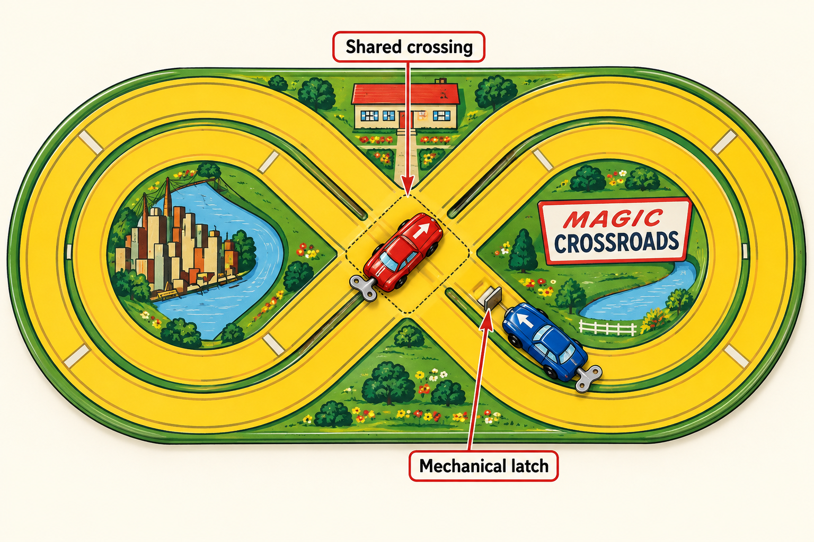
| Oyuncak | Yazılım modeli |
|---|---|
| Kavşak (crossing) | critical section / paylaşılan kaynak |
| Mandal arabayı tutuyor | wait bloklanmış, thread bölgenin dışında bekliyor |
| Tek kavşak = tek izin | başlangıç değeri 1 olan (ikili, binary) semaphore |
| Araba kavşağı tamamen terk edince izin döner | post, critical section'dan çıktıktan sonra |
| Kurulmuş yay | enerji, yani çalışabilir olmak (runnable). İzin değil: kurulu araba da mandalda bekleyebilir |
Okumadaki önemli noktalar Okuma §9:
- Kabul (admission) bölünemez olmalı. "Kavşak boş görünüyor" kontrolü ile "giriyorum" adımı iki ayrı yarışan eylem olamaz.
- Güvenlik invariant'ı: kavşakta en fazla bir araba. İzni erken bırakmak çarpışmaya yol açar; hiç bırakmamak ilerlemeyi durdurur.
- Yazılımda semaphore'da bloklanan thread uyuyabilir ve CPU tüketmez. Oyuncak CPU zamanlamasını modellemez.
- Gösteri FIFO kabulü ya da açlıktan kurtulmayı (starvation freedom) kanıtlamaz. Gözlem ile arayüzün verdiği garanti ayrı tutulmalı.
- Kavşağın izin sayısını 2'ye çıkarmak dışlamayı bozar. sl. 38'deki S = 2 örneği ayrı bir senaryodur: birbirinin yerine geçebilen iki kaynak vardır.
- Banyo anahtarı ile mandalın farkı. Banyo anahtarı (§5.1) mutex'in sahipliğini vurgular; mandal beklemeyi ve denetimli kabulü vurgular Okuma §9; Okuma §5. Okuma kurmalı arabaları izin muhasebesini sınamak için önerir Okuma §17.
6.4 Bir semaphore izi sl. 38; OSC ch6 sl. 40#
Hocanın izi sl. 38: S = 2. A ve B başarıyla bekler, C beklemek zorunda kalır. Sonra A post eder. Tabloda iki muhasebe yan yana: uygulama modeli hocanın kullandığıdır, ders kitabı iç modeli OSC'deki negatif sayaçtır.
| Adım | Olay | Uygulama modeli S sl. 38 | Ders kitabı iç value OSC ch6 sl. 40 |
Bekleyenler |
|---|---|---|---|---|
| 0 | başlangıç | 2 | 2 | – |
| 1 | A wait → başarılı |
1 | 1 | – |
| 2 | B wait → başarılı |
0 | 0 | – |
| 3 | C wait → izin yok, bloklanır |
0 | −1 (< 0 → block) |
C |
| 4 | A post |
izin oluşur → bir bekleyen alır → 0 | value++ → 0; <= 0 olduğu için C uyandırılır |
– |
Başka bir thread o arada wait yapmıyorsa izni C alır ve S = 0 kalır. Sırayı post eden belirlemez.
Hocanın iki uyarısı sl. 38:
- "Do not assume the posting thread chooses the next owner." Slaytın ifadesi "a waiting contender can acquire it": C uyanmadan önce yeni gelen bir D izni kapabilir. Kimin alacağı gerçeklemenin ve scheduler'ın işidir. ek bilgi POSIX'te zamanlama seçeneği destekleniyorsa uyandırılacak thread zamanlama politikasına göre seçilir, örneğin en yüksek öncelikli bekleyen.
- S = 0 "boşta izin yok" demektir. Ders kitabının negatif iç sayacı (−1 = bir bekleyen) bir gerçekleme ayrıntısıdır; uygulama modeliyle karıştırma. ek bilgi POSIX
sem_getvaluebekleyen varken 0 ya da negatif bir sayı döndürebilir; ikisi de standarda uygundur.
Çalışılmış soru. S = 2; A, B, C, D sırayla wait; sonra A ve B post ederse kim girer? C ve D girer, ama hangi sırayla girecekleri garanti değildir. Bekleme sırası izin sayısından ayrıdır sl. 36.
6.5 Dışlama ve olay sıralama; mutex'ten farkı sl. 39; OSC ch6 sl. 35–36; OSTEP 31.3#
(a) Dışlama. Başlangıç değeri 1 olan semaphore bir bölgeyi korur, program onu doğru kullandığı sürece sl. 39; OSC ch6 sl. 36:
sem_wait(&m); /* izin 1 → 0 */
/* critical section */
sem_post(&m); /* izin 0 → 1 */
(b) Olay sıralama (event ordering): "kullanmadan önce başlat". ready 0 ile başlatılır. Başlatıcı işini bitirince post eder, kullanan thread kullanmadan önce wait eder sl. 39. OSC'deki karşılığı: S1, S2'den önce olmalıysa synch = 0; P1 S1; signal(synch);, P2 wait(synch); S2; OSC ch6 sl. 36; OSTEP 31.3.
sem_t ready; /* sem_init(&ready, 0, 0) */
/* başlatıcı */ init_table(); sem_post(&ready);
/* kullanıcı */ sem_wait(&ready); use_table();
İz: kullanıcı önce gelirse wait'te bloklanır, post onu uyandırır. Başlatıcı önce gelirse post izni saklar, kullanıcının wait'i hemen döner. İki sıralamada da sonuç doğrudur.
(c) Semaphore'un hafızası var, CV bildiriminin yok. Kimse beklemiyorken yapılan post izni saklar; condition variable bildirimi (notification) saklamaz sl. 39; S-3. §7.6'daki lost wakeup'ın kökü budur.
Mutex'ten farkı: sahip yok sl. 39; Okuma §5; Okuma §9.
| Mutex | Semaphore | |
|---|---|---|
| Sahip (owner) | Var; kilidi alan bırakır | Yok; bir katılımcı post eder, başka biri tüketebilir |
| Kim bırakabilir | Sahibi. POSIX'te sahibi olmayanın unlock'u mutex türüne göre ya tanımsız davranıştır ya da hata döner ek bilgi |
Herhangi bir thread post edebilir |
| Tipik kullanım | Bir invariant'ı korumak | İzin sayma, sinyalleşme ve sıralama (ready = 0), producer–consumer |
| Öncelik kalıtımı | Mümkün, çünkü sahip bellidir ek bilgi | Kalıtılacak "sahip" yok ek bilgi; §10.2 |
Tuzak (hoca ile OSC ayrışıyor). OSC ikili semaphore için "Same as a mutex lock" der OSC ch6 sl. 35. Hoca açıkça ayırır: "Unlike a mutex, it does not inherently identify an owner." sl. 39 Sınavda hocanın ifadesini kullan: 1 ile başlatılmış semaphore dışlama sağlayabilir, ama mutex değildir.
Yanlış kullanımın iki örneği OSC ch6 sl. 41. OSC semaphore'u elle serpiştirmenin hatalarını sayar:
wait(mutex) … wait(mutex): ikinciwaitsignalolmalıydı. Thread tek izni girişte tüketir, çıkışta değeri 0 iken yeniden bekler ve sonsuza dek bloklanır. Girmek isteyen herkes de bloklanır; kimse bir daha giremez (progress hatası). Semaphore'un sahibi olmadığı için hatayı fark edecek bir mekanizma da yoktur.signal(mutex) … wait(mutex): thread girmeden önceposteder ve değer 2 olur. Hatalı thread izinsiz içeridedir ve iki thread dahawait'ten geçebilir: aynı anda en çok üç thread içeride olur. Sondakiwaithiç alınmamış bir izni tüketir ve sayı kaynakla tutarsız kalır.
İkisi de aynı şeyi gösterir: semaphore dışlamayı ancak program onu doğru kullanırsa sağlar sl. 39.
6.6 POSIX semaphore işlemleri sl. 40; OSC ch7 sl. 25; Okuma §10#
#include <semaphore.h>
sem_t sem;
sem_init(&sem, 0, 1); /* pshared = 0, başlangıç = 1 */
sem_wait(&sem);
/* critical section */
sem_post(&sem);

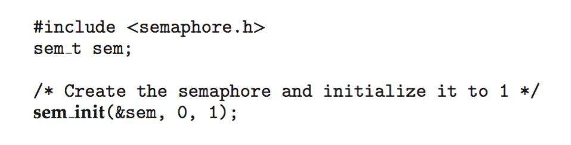
sem_init(&sem, 0, 1): ikinci argümanın 0 olması kullanımı aynı process'in thread'leriyle sınırlar. OSC 10e, Ch.7 slayt 25.
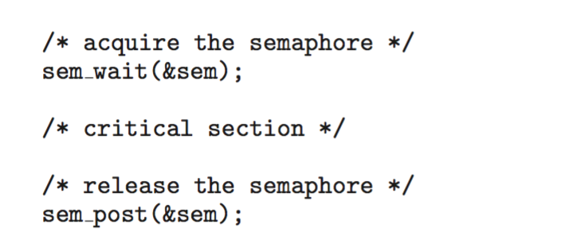
sem_wait ve sem_post ile korunan bölge. Kaynağı tutuyormuş gibi davranmadan önce edinimin başarılı olduğunu kontrol et. OSC 10e, Ch.7 slayt 25.Hocanın üç düzeltmesi sl. 40; Okuma §10:
- Hataları kontrol et.
sem_waitbir sinyalle kesilebilir ve-1/EINTRdöner. Uygulamaya uygunsa yeniden dene. - Başarısız bir
wait'ten sonra, edinim başarılıymış gibipostetme. Bu, havadan fazladan bir izin yaratır. - Tek bir edinim için iki
postda muhasebeyi bozar, herposttek başına atomik olsa bile. Okumanın sorusu: üç aletlik bir havuzda bir iade için ikipostyapılırsa sayaç gerçekte olandan fazla alet gösterir. Semaphore gerçeklemesi hâlâ "doğru" çalışır, ama uygulama gerçekte olandan fazla kullanıcı kabul eder Okuma §10.
#include <errno.h>
static void P(sem_t *s) {
while (sem_wait(s) == -1) {
if (errno == EINTR) continue; /* sinyal: politika uygunsa yeniden dene */
perror("sem_wait"); exit(1); /* gerçek hata: izin ALINMADI, post etme */
}
}
Semaphore fonksiyonları hatayı errno ile bildirir (-1 döner); pthread_* fonksiyonları ise hata numarasını doğrudan döndürür Okuma §8.
6.7 Semaphore nerede yaşar: pshared, adsız ve adlı sl. 41; sl. 72–73; OSC ch7 sl. 23–25; Okuma §10#
Adsız semaphore (unnamed), sem_init(sem_t *s, int pshared, unsigned value) sl. 41; Okuma §10:
- Aynı process'in thread'leri:
pshared = 0. Olağan kurulum budur; OSTEP'in bütün örnekleri böyledir OSTEP 31.1. - Process'ler arası:
pshared ≠ 0vesem_tnesnesi o process'lerin gerçekten paylaştığı bellekte durmalı. Yalnızcapshared = 1yazmak yetmez:forksonrası sıradan bir global değişken kopyalanır, paylaşılmaz.
/* (ek bilgi) ilişkili process'ler: fork'tan önce paylaşılan eşleme */
sem_t *s = mmap(NULL, sizeof *s, PROT_READ|PROT_WRITE, MAP_SHARED|MAP_ANONYMOUS, -1, 0);
sem_init(s, 1, 1);
/* ilişkisiz process'ler: shm_open + ftruncate + mmap ile aynı nesneyi eşleyip pshared = 1 */
Adlı semaphore (named), sem_open sl. 72–73; OSC ch7 sl. 24: ayrıntısı §11.2'de. Ad, ayrı process'lerin aynı semaphore'u açmasını sağlar.
Tuzak (hoca ile OSC ayrışıyor). OSC: "Named semaphores can be used by unrelated processes, unnamed cannot." OSC ch7 sl. 23 Hoca düzeltir: "'Unnamed' does not mean 'impossible between unrelated processes.'" sl. 41 Okuma da aynı şeyi söyler: ayrım "adlı = process'ler, adsız = thread'ler" kadar basit değildir; fark, semaphore'u bulma yoludur: bir ad ya da paylaşılan bellek Okuma §10. Sınavda hocanın sürümünü yaz.
sem_t (pshared = 0); iki process'in paylaştığı mmap sayfasında sem_t (pshared = 1); iki ilişkisiz process'in aynı adla açtığı adlı semaphore (sl. 41; sl. 72).6.8 Linux'ta nasıl görünür: macOS'ta adsız semaphore, semaphore'lu tampon sl. 40–41; sl. 51#
macOS adsız semaphore'u desteklemez (macOS'ta çalıştırıldı, semtest.c):
semtest.c:14:13: warning: 'sem_init' is deprecated [-Wdeprecated-declarations]
sem_init -> -1, errno=78 (Function not implemented)
sem_open -> ok
sem_getvalue -> -1, errno=78 (Function not implemented), value=-1
sem_wait -> 0
sem_trywait -> -1, errno=35 (Resource temporarily unavailable)
sem_post -> 0
sem_unlink -> 0
sem_initderlemede "deprecated" uyarısı verir, çalışırken-1,errno = ENOSYSdöner.sem_getvalueda aynı.sem_trywaitizin yokken beklendiği gibiEAGAIN(35) döner.- Slayttaki
sem_init(&sem, 0, 1)örneği Linux'ta çalışır, macOS'ta çalışmaz. Bu bir çelişki değil, hoca Ubuntu'yu hedefliyor Okuma §16. Ama dönüş değerini kontrol etmeyen kod macOS'ta başlatılmamış birsem_tile sessizce devam eder: hocanın "hata kodlarını kontrol et" uyarısının canlı örneği sl. 40; sl. 26. - Alternatif 1, adlı semaphore (
sem_open,sem_close,sem_unlink): macOS'ta da Linux'ta da çalışır sl. 72–73. macOS'ta ad uzunluğu sınırı var (PSEMNAMLEN= 31; ek bilgi). - Alternatif 2,
dispatch_semaphore(libdispatch, yalnızca Apple, yalnızca process içi; ek bilgi). queue.cvecounter.csemaphore kullanmaz, macOS'ta sorunsuz çalışır.
Semaphore'lu bounded buffer (sembuf.c, sl. 51'in deseni; 100.000 öğe, beklenen toplam 5.000.050.000; macOS'ta çalıştırıldı). sem_wait için EINTR döngüsü var, başarısız beklemeden sonra post yapılmıyor sl. 40:
| Mod | 10 koşu |
|---|---|
adsız (sem_init) |
10 × sem_init: Function not implemented, çıkış 1 |
adlı (sem_open), N = 4 ve N = 1 |
10 × doğru |
dispatch, N = 4 ve N = 1 |
10 × doğru |
Kapanış basit tutuldu: tek producer, tek consumer, öğe sayısı biliniyor. Bilinmeyen sayıda öğede queue.c'deki gibi bir closed protokolü ya da her consumer için bir "zehirli hap" (poison pill) öğesi gerekir ek bilgi.
Hatalı post'un C karşılığı (macOS'ta çalıştırıldı, adlı semaphore): sem_open(..., 1) ile bir izin alındı. İkinci sem_wait alarm sinyaliyle kesildi ve -1 (Interrupted system call) döndü. Hatalı kod yine de sem_post yaptı. Ardından sem_trywait başarılı oldu: ilk "sahip" içerideyken ikinci biri de girdi ve dışlama bozuldu. Bu, sl. 81'deki Java hatasının (§11.6) C karşılığıdır.
Linux'ta (Linux'a özgü, burada doğrulanmadı): adlı semaphore'lar genellikle /dev/shm/sem.<ad> olarak görünür ve sem_unlink edilene kadar process bitse de kalır ek bilgi. glibc'de sem_* futex üzerine kuruludur ek bilgi.
Tuzaklar.
- "Binary semaphore = mutex": dışlama sağlayabilir ama sahibi yoktur sl. 39; OSC ch6 sl. 35 ile çelişir, hocanınki geçerli.
- "
posteden sıradakini seçer": seçmez sl. 36; sl. 38. - "S = 0 → biri bekliyor": S = 0 boşta izin yok demektir; negatif sayaç bir gerçekleme ayrıntısıdır sl. 38; OSC ch6 sl. 40.
- "Unnamed = yalnızca thread'ler":
pshared ≠ 0ve paylaşılan bellekle ilişkisiz process'ler de kullanabilir sl. 41. - "
sem_waitdöndü, demek ki izin bende":-1/EINTRolabilir; başarısızlıktan sonrapostetme sl. 40. - "Bir iade için iki
postzararsız": havuz gerçekte olandan büyük görünür Okuma §10. - "
sem_inither yerde çalışır": macOS'taENOSYSdöner.
Kontrol soruları
- S = 2; A, B ve C
waityapıyor, sonra Apostediyor. İzni kim alır ve S kaç olur? Hangi varsayımı söylemen gerekir? - Kimse beklemiyorken bir semaphore'a
postyapılıyor. İzin kaybolur mu? Kimse beklemiyorken yapılan bir CVsignal'ı ne olur?
7. Monitor ve condition variable sl. 42–48#
7.1 Monitor sl. 42; OSC ch6 sl. 41–44#
Sezgi. Semaphore çağrılarını her yere elle serpiştirmek hataya açıktır. OSC'nin listesi: signal(mutex) … wait(mutex), wait(mutex) … wait(mutex), unutulmuş wait ya da signal OSC ch6 sl. 41 (iki tanesi §6.5'te izlendi). Monitor korumayı veri tipinin içine gömer.
Tanım. Monitor, korunan durumu ve o durum üzerindeki işlemleri bir dışlama disiplini altında birleştirir sl. 42; OSC ch6 sl. 42:
- Monitor içinde aynı anda yalnızca bir thread etkin olabilir.
- Girmek isteyenler giriş kuyruğunda (entry queue) bekler.
- İyi bir arayüz durumu gizler, böylece istemciler korumayı yanlışlıkla atlayamaz sl. 42. Örneğin bounded queue yalnızca
put/getsunar,count'u ve diziyi dışarı açmaz Okuma §11.

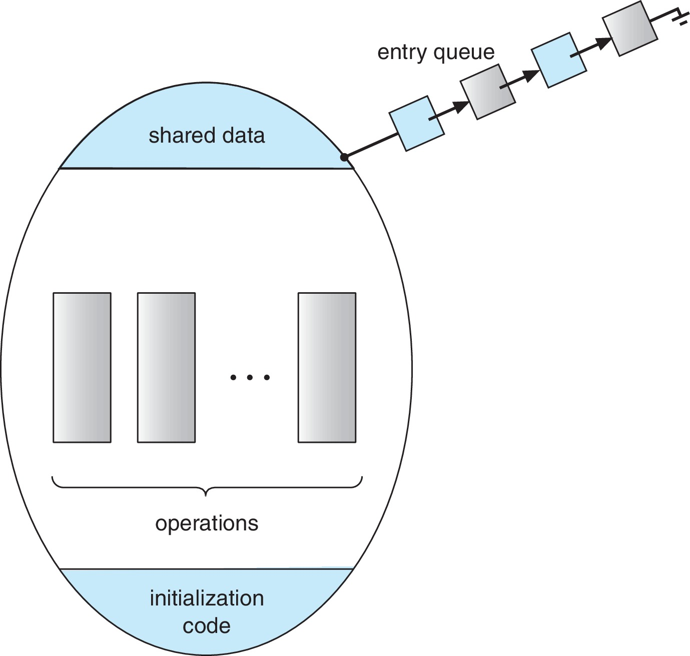
Mekanizma. Semaphore ile gerçekleme: mutex = 1, her prosedür wait(mutex); gövde; signal(mutex); ile sarılır OSC ch6 sl. 44. C'de dil desteği yoktur; monitor bir disiplin olarak kurulur: static durum + bir mutex + yalnızca bu mutex altında çalışan fonksiyonlar. queue.c tam olarak böyle bir monitor'dür (§8.6). Java'da her nesnenin bir kilidi vardır ve synchronized metotlar onu kullanır OSC ch7 sl. 29.
Monitor neden yetmez? Tüketici monitor'e güvenle girer ve kuyruğun boş olduğunu görür. Mutex'in serbest kalmasını değil, bir yüklemin doğru olmasını beklemesi gerekir Okuma §11. Condition variable buradan çıkar.
7.2 Condition variable ve yüklem sl. 43; OSC ch6 sl. 45; Okuma §11#
Tanım. Condition variable (CV), bir thread'in bir yüklemi doğru yapabilecek bir değişikliği beklemesini sağlar. Yüklem CV'de değil, paylaşılan uygulama durumunda yaşar sl. 43; Okuma §11:
- Tüketici yüklemi
count > 0, üretici yüklemicount < capacity. Mutex hemcount'u hem kuyruğu korur sl. 43. - Beklemek mutex'i bırakmalıdır, yoksa yüklemi kimse değiştiremez. Uyanınca mutex yeniden alınır ve yüklem tekrar kontrol edilir sl. 43.
OSC'nin soyut CV'si OSC ch6 sl. 45: x.wait() çağıranı askıya alır; x.signal() bekleyenlerden birini (varsa) devam ettirir. Bekleyen yoksa sinyalin hiçbir etkisi olmaz. Semaphore'un post'uyla temel fark budur.

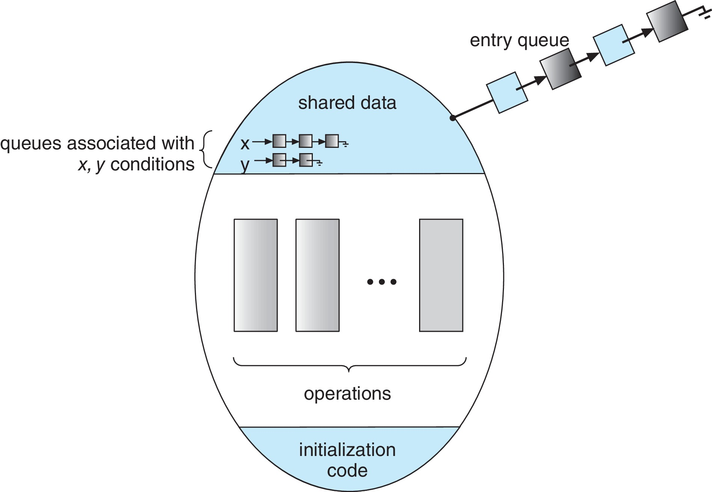
Semaphore wait |
Condition wait |
|
|---|---|---|
| Ne bekler | bir izin | yüklemin değişmiş olabileceğine dair bildirim |
| Mutex ilişkisi | yok | ilişkili mutex'i atomik olarak bırakır, dönerken yeniden alır |
Bekleyen yokken post / signal |
izin saklanır | kaybolur |
| Dönüşte garanti | bir izin tüketildi | hiçbir şey; yüklem yeniden kontrol edilmeli |
S-3; S-5; sl. 39; sl. 74
Okumanın review cevabı S-3: başarılı bir semaphore wait'i saklanmış bir izni tüketir; condition wait'i ilişkili mutex'i bırakır, yüklemin olası değişimini bekler ve mutex yeniden alınmış olarak döner. Bildirimi saklanmış bir izin değildir.
7.3 Condition-wait protokolü sl. 44; sl. 74; OSC ch7 sl. 26–27; OSTEP 30.1#
Hocanın kalıbı sl. 44: kilitle → yüklemi kontrol et → yanlış olduğu sürece bekle → işlemi yap → kilidi aç.
pthread_mutex_lock(&mutex);
while (a != b) /* yüklem: a == b */
pthread_cond_wait(&cond_var, &mutex);
/* burada mutex bizde ve a == b */
pthread_mutex_unlock(&mutex);

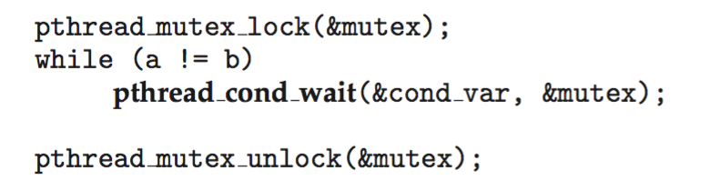
pthread_cond_wait bir while döngüsünün içinde. POSIX'in condition-wait anlamında while zorunludur. OSC 10e, Ch.7 slayt 27.pthread_cond_wait mutex'i bırakmayı ve beklemeye başlamayı atomik olarak yapar; döndüğünde mutex yeniden alınmıştır sl. 44; OSTEP 30.1. Çağrı anında mutex'in tutuluyor olması zorunludur. OSTEP'e göre bu bir tavsiye değil, wait'in tanımının parçasıdır: kilit tutuluyor varsayılır, uyurken bırakılır, dönmeden önce yeniden alınır OSTEP 30.1.
"Always recheck" sl. 44: uyandırma bir rezervasyon değildir ve sahte uyanmalara (spurious wakeups) izin verilir.
Başlatma sl. 74; OSC ch7 sl. 26: pthread_mutex_init(&mutex, NULL); pthread_cond_init(&cond_var, NULL);. Hocanın notu: ikisini de eşzamanlı kullanımdan önce başlat ve dönüş kodlarını kontrol et; ancak bütün kullanıcılar ve bekleyenler bittikten sonra yok et; CV izin saklamaz sl. 74. queue.c statik başlatıcıları kullanır ve destroy'u join'den sonra yapar.
7.4 Durumu değiştir ve bildir; Mesa ve Hoare sl. 45; OSC ch6 sl. 47–54; OSTEP 30.2#
pthread_mutex_lock(&mutex);
a = b; /* yüklemi AYNI mutex altında değiştir */
pthread_cond_signal(&cond_var); /* uygun bir bekleyeni bildir */
pthread_mutex_unlock(&mutex);

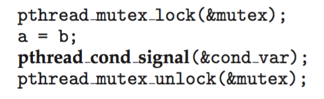
pthread_cond_signal. OSC 10e, Ch.7 slayt 27.Uyandırılan thread önce mutex'i yeniden almak zorundadır; o arada başka bir thread durumu değiştirebilir sl. 45. OSTEP de sinyali kilit tutulurken göndermeyi önerir: bazı durumlarda zorunludur, öbürlerinde en basit güvenli yoldur OSTEP 30.1.
Mesa ve Hoare. Hoca: bu POSIX/Mesa tarzı disiplin, kontrolü hemen sinyallenen thread'e devreden monitor modelinden farklıdır sl. 45.
| Hoare | Mesa | |
|---|---|---|
signal sonrası kim çalışır |
sinyallenen hemen monitor'ü alır, sinyalleyen bekler | sinyalleyen devam eder; sinyallenen hazır olur ve kilit için yarışır |
| Uyanınca yüklem | sinyalleyen doğru bıraktıysa garanti doğru | garanti yok, araya biri girebilir |
| Kalıp | if (!P) wait; yeterli olabilir |
while (!P) wait; zorunlu |
| Kim kullanır | teorik monitor modeli, OSC'nin soyut monitor'ü | POSIX pthreads, Java, pratikte hemen her sistem |
- Mesa ve Hoare adları OSTEP'ten OSTEP 30.2: "Virtually every system ever built employs Mesa semantics." Hoare semantiği "uyandırılan hemen çalışır" garantisini verir ama kurması zordur.
- "Signal-and-wait / signal-and-continue" terimleri ne hocanın ne de OSC'nin slaytında geçer; OSC kitap metninden ve genel literatürden alınmıştır ek bilgi.
- OSC'nin semaphore ile monitor gerçeklemesi (
nextsemaphore'u,next_count,x_sem) Hoare tarzıdır:x.signal()içinde sinyalleyensignal(x_sem); wait(next);ile kendini askıya alıp kontrolü bekleyene verir OSC ch6 sl. 48–50.
Mesa'nın neden önemli olduğu: ResourceAllocator OSC ch6 sl. 54. Monitor: acquire: if (busy) x.wait(time); busy = true; ve release: busy = false; x.signal();.
- Hoare altında doğru:
release'in sinyali monitor'ü doğrudan bekleyene verir, araya kimse giremez. - Mesa / pthreads altında yanlış (taramayla doğrulandı: iki sahip mümkün;
whileile ihlal yok): 1. A kaynağı tutuyor, Bx.waitediyor. 2. Areleaseeder:busy = false, B'yi uyandırır. 3. B kilidi almadan önce yeni gelen Cacquireeder,busy == falsegörür vebusy = trueyapar. 4. B kilidi alır,if'ten sonraki satıra geçer ve yenidenbusy = trueyapar. 5. İki sahip. Düzeltme:while (busy) wait.
Aynı mantıkla OSC'nin F2: if (done == false) x.wait() örneği OSC ch6 sl. 47 de pthreads'te while ile yazılmalıdır. Orada done'ı geri alan kimse yok, ama sahte uyanma tek başına yeterli bir nedendir.
7.5 Neden while: sl. 46'nın adım adım izi sl. 46; OSTEP 30.2#
Hocanın senaryosu sl. 46: kuyruk boş, C1 ve C2 bekliyor. Üretici bir öğe ekleyip C1'i uyandırıyor. C1 mutex'i yeniden almadan önce başka bir tüketici öğeyi alıyor. Slayt bu tüketicinin kim olduğunu söylemez; aşağıda yeni gelen bir C3 kullanıldı. Aynı rolü sahte uyanmayla uyanan C2 de oynayabilir.
Tüketici kodu: lock; ⟨if | while⟩ (count == 0) cond_wait(¬_empty, &m); remove; unlock;
| # | Olay | count | mutex | C1 | C2 | C3 |
|---|---|---|---|---|---|---|
| 1 | C1 lock, count == 0, cond_wait (mutex'i bırakıp uyur) |
0 | – | wait set | – | – |
| 2 | C2 aynısını yapar | 0 | – | wait set | wait set | – |
| 3 | Üretici lock, ekler, count = 1, signal: C1 wait set'ten çıkar, mutex için yarışır |
1 | Ü | mutex bekliyor | wait set | – |
| 4 | Üretici unlock |
1 | – | mutex bekliyor | wait set | – |
| 5 | C3 yeni gelir, mutex'i C1'den önce kapar, count == 1, beklemez, çıkarır, count = 0, unlock |
0 | C3 → – | mutex bekliyor | wait set | çıktı |
| 6 | C1 mutex'i alır, cond_wait döner |
0 | C1 | çalışıyor | wait set | – |
| 7a | if ile: C1 doğrudan remove yapar ve var olmayan veriyi çıkarır: count = −1, çöp öğe, indeks kayması |
−1 | C1 | HATA | ||
| 7b | while ile: C1 count == 0'ı yeniden görür ve tekrar bekler. Güvenli |
0 | – | wait set | wait set | – |
Hocanın cümlesi sl. 46: "With if, C1 might remove nonexistent data. With while, it checks count again and waits safely." Sahte uyanma while için ikinci, bağımsız bir nedendir sl. 44; sl. 46: signal hiç yapılmamışken bile cond_wait dönebilir ve count hâlâ 0'dır. OSTEP aynı olguyu iki tüketici ve bir üreticiyle izler ("Tc2 sneaks in") OSTEP 30.2.
Bütün interleaving'ler tarandı (2 tüketici + 1 üretici): if sürümünde boş kuyruktan çıkarma bulundu, en kısası yukarıdaki iz; sahte uyanmada da if bozulur. while sürümünde ihlal yok.
if ile C1 boş kuyruktan çıkarır, while ile yeniden uyur.7.6 Lost wakeup (kayıp uyandırma) hatası sl. 47; Okuma §11; OSTEP 30.1#
Hata sl. 47; Okuma §11: tüketici "boş mu?" kontrolünü mutex olmadan yapar. Üretici ekler ve sinyal gönderir. Tüketici ancak bundan sonra beklemeye başlar. Sinyal saklanmış bir izin değildir; tüketici iş varken uyur.
if (count == 0) { /* KİLİTSİZ kontrol */
pthread_mutex_lock(&m);
pthread_cond_wait(¬_empty, &m); /* karar ile uyku arasında boşluk var */
...
| # | Tüketici | Üretici | count | wait set |
|---|---|---|---|---|
| 1 | count == 0 → doğru (kilitsiz), "uyuyacağım" kararı |
0 | – | |
| 2 | (kesildi, preempted) | lock; ekle; count = 1 |
1 | – |
| 3 | signal(not_empty): bekleyen yok → etkisiz |
1 | – | |
| 4 | unlock, üretici biter |
1 | – | |
| 5 | lock; cond_wait → uyur |
1 | {T} | |
| 6 | Sonsuza dek uyur. İş var (count = 1) ama kimse sinyal göndermeyecek |
1 | {T} |
Durum taramasında tek kilitlenme durumu tam olarak budur: tüketici uyuyor, count = 1, üretici bitmiş.
Doğru protokol sl. 47: yüklem aynı mutex altında test edilir ve CV'nin bırak-ve-bekle işlemi kullanılır. Hocanın cümlesi: "The state, not a remembered signal, decides whether to sleep." sl. 47 Okumanın review cevabı da aynı S-5: sinyal kimse beklemiyorken gelebilir ya da bekleyen, koşul yeniden yanlış olduktan sonra uyanabilir; ilerleyip ilerlemeyeceğine kalıcı paylaşılan durum karar verir.
İlgili varyant: durum değişkeni olmadan yalnızca CV ile join (thr_exit: signal, thr_join: wait). Child önce biterse sinyal kaybolur ve parent sonsuza dek bekler; bu yüzden done değişkeni şarttır OSTEP 30.1. Kilitsiz if (done == 0) wait varyantı da aynı yarışa düşer OSTEP 30.1.
count = 1 iken uyur (sl. 47).if/while hatası ile lost wakeup farklı hatalardır. Biri yeniden kontrol eksikliğidir (§7.5, uyanınca yüklem yanlış olabilir), öteki kilitsiz kontroldür (karar ile uyku arasında boşluk). İkisini yan yana çözmek iyi bir testtir.
7.7 Entry set ve wait set (Java) sl. 48; sl. 76; OSC ch7 sl. 31–33#
Hoca orijinal Java şeklini iki farklı bekleme nedenini görünür kıldığı için kullanır sl. 48:
- Entry set (giriş kümesi): nesne kilidini almak için bekleyenler. Dolu bir monitor'ü isteyen thread
synchronizedbölgeye giremez sl. 76; OSC ch7 sl. 31. - Wait set (bekleme kümesi): kilidi bırakıp bir koşulu bekleyenler.
wait()kilidi bırakır, thread'i bloklar ve wait set'e koyar OSC ch7 sl. 32. notify(): wait set'ten keyfi bir T seçilir ve entry set'e taşınır. T kilit için yarışır, ancak sonra koşulunu kontrol edebilir OSC ch7 sl. 33.

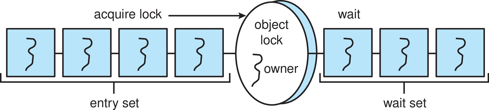
Hocanın uyarıları: bildirim kilit için yarışma hakkı verir, yüklemin artık doğru olduğu garanti değildir sl. 48; şekil FIFO kabul vaat etmez sl. 76. Bu §7.5 izinin Java dilindeki karşılığıdır: adım 3'teki "mutex bekliyor" durumu = entry set.
synchronized girişi → entry set → sahip; sahip → wait() → wait set; notify() bekleyeni sahibe değil entry set'e taşır (sl. 48; sl. 76).7.8 signal mi broadcast mı; sahte uyanma sl. 44; sl. 55; sl. 77; OSTEP 30.2–30.3#
pthread_cond_signalen az bir bekleyeni uyandırır. Uygundur, ancak bekleyenlerin hepsi aynı yüklemi bekliyorsa, bir değişiklik tek bekleyeni ilgilendiriyorsa ve yanlış türden birinin uyanma ihtimali yoksa ek bilgi, OSTEP 30.2'den çıkarım.pthread_cond_broadcasthepsini uyandırır. Gerektiği durumlar:- Herkesi ilgilendiren kalıcı durum değişikliği. Kuyruğun kapanması: her uyuyan tüketici sonlanma yüklemini yeniden kontrol etmeli sl. 55; Okuma §16.
- Tek CV'de karışık bekleyenler. Java'nın tek wait set'i hem üreticileri hem tüketicileri tutar;
notifyyanlış türü uyandırabilir. Hoca çok üreticili/çok tüketicili genel sürümdenotifyAllönerir sl. 77. OSTEP tek CV ile üç thread'in birden uyuyabildiğini gösterir ve çözümü iki CV (empty,fill) olarak verir OSTEP 30.2 (iz §11.3'te). - Kapsayan koşul (covering condition). Hangi bekleyenin ilerleyebileceği bilinmiyorsa, örneğin farklı boyutta bellek isteyenler OSTEP 30.3.
- Maliyet:
broadcastgereksiz uyanmalara ve yeniden uykuya yol açar ("thundering herd"; ek bilgi). Doğruluk açısındanbroadcast+whileher zaman güvenlidir;signalbir optimizasyondur ve gerekçe ister. - Sahte uyanma: POSIX
pthread_cond_wait'in sinyal olmadan dönmesine izin verir sl. 44; sl. 46. JavaObject.waitveCondition.awaitiçin de durum aynıdır sl. 82; sl. 84. Bazı gerçeklemelerde tek bir sinyal iki thread'i uyandırabilir OSTEP 30.2. Tek savunmawhile'dır.
queue.c'de signal'ı kilidin dışına taşımak bu programın doğruluğunu bozmaz, çünkü yüklem değişikliği kilit altında ve bekleyenler while ile kontrol ediyor; yine de "kilidi tutarak sinyal gönder" en basit güvenli kuraldır OSTEP 30.1.
7.9 Linux'ta nasıl görünür: if mi while mı ölçümü sl. 44; sl. 46#
ifwhile.c (macOS'ta çalıştırıldı): 1 üretici, C tüketici, kapasite 1, 200.000 öğe. Tüketici yüklemi while (doğru) ya da if (bozuk) ile kontrol ediyor; üretici signal ya da broadcast ile bildiriyor. Program hatalı anı sayar ama hatayı işlemez: bozuk tüketici uyandığında kuyruk boşsa gerçek kod count'u −1 yapıp bayat veri okurdu sl. 46; burada bu an bad_wakeups olarak sayılır ve öğe çıkarılmaz. 10 koşunun bad_wakeups değerleri:
| Kontrol | Bildirim | C = 1 | C = 4 |
|---|---|---|---|
| while | signal | 0 × 10 | 0 × 10 |
| while | broadcast | 0 × 10 | 0 × 10 |
| if | signal | 0 × 10 | 0 0 0 1 1 0 0 3 0 0 |
| if | broadcast | 0 × 10 | 255 bin – 281 bin / koşu |
whileher durumda 0: döngüden çıkış koşulu yacount > 0ya daclosedsl. 46; sl. 68.if+broadcast+ birden çok tüketici: her koşuda yüz binlerce hata. Tek öğe için dört tüketici uyanır, biri alır, ötekiler boş kuyrukla karşılaşır. "Bildirim bir rezervasyon değildir" sl. 44; Okuma §11.if+signal+ C = 4: hata nadir ama gerçek (10 koşunun 3'ünde 1–3 kez). Bu tam olarak sl. 46'nın senaryosudur sl. 46; OSTEP 30.2. Az görülmesi, "testler yürütmelerden örnek alır" uyarısının iyi bir örneğidir sl. 68.- C = 1'de
ifhiç bozulmadı. Tek tüketicide "başkası kaptı" senaryosu yok; geriye yalnızca sahte uyanma kalıyor ve 10 × 200.000 öğede hiç gözlenmedi. Gözlenmemesi olmayacağı anlamına gelmez sl. 44.while'ın ikinci gerekçesi deneyle yeniden üretilemedi. - TSan bu programda 0 uyarı verdi (§2.6): hata data race değil, protokol hatası.
Linux'ta (Linux'a özgü, burada doğrulanmadı): strace -f -e trace=futex ile cond_wait / cond_signal çağrıları FUTEX_WAIT / FUTEX_WAKE olarak görünmeli ek bilgi.
Tuzaklar.
- "Signal geldi, demek ki koşul doğru": uyandırma rezervasyon değildir; sahte uyanma da olabilir sl. 44; sl. 46; sl. 48.
- "CV sinyali saklanır": saklanmaz; semaphore izni saklanır sl. 39; sl. 47; S-3.
- "Tek tüketici var,
ifyeter": sahte uyanma tek başına yeter sl. 44. - "
if (count == 0)kontrolünü kilit almadan yaparım, sonra beklerim": lost wakeup sl. 47. - "
notifydoğrudan bekleyene kilidi verir": bekleyeni entry set'e taşır sl. 48; OSC ch7 sl. 33. - "OSC'nin
if'li monitor kodu pthreads'e aynen çevrilir": OSC'nin soyut modeli Hoare tarzı; pthreads Mesa tarzı sl. 45; OSC ch6 sl. 54.
Kontrol soruları
- Condition-wait protokolünü beş adımda yaz.
- Bekleyen bir thread'in neden
whilekullanması gerektiğine iki ayrı neden ver.
8. Bounded buffer ve kuyruğu kapatma sl. 49–55#
8.1 Kamyondan banda karpuz sl. 49; Okuma §12#
Hocanın benzetmesi sl. 49; Okuma §12: kamyon karpuz getirir. Yükleyen işçi = producer. Bant = sonlu tampon (bounded buffer). Boşaltan işçi = consumer. Bant doluysa yükleyen bekler, boşsa boşaltan bekler.

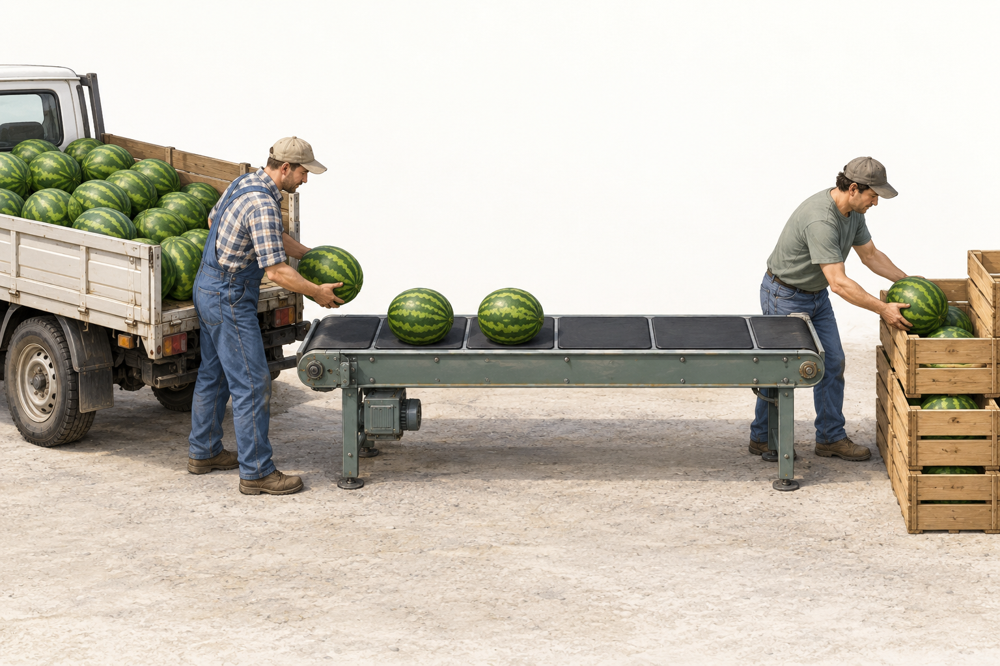
- Fiziksel bant FIFO'yu kendiliğinden sağlar; yazılımda sıra indekslerle ve diziyle açıkça korunmalıdır.
- Güvenlik kuralları: hızlı yükleme bir karpuzun üstüne başkasını koymayı haklı çıkarmaz; hızlı boşaltma olmayan karpuzu "icat etmeyi" haklı çıkarmaz.
- Liveness sorusu: öbürü yer ya da öğe açınca her işçi eninde sonunda ilerleyebiliyor mu? Okuma §12
8.2 Problem ve invariant sl. 50; Okuma §16#
- Kapasite N. Invariant: 0 ≤ count ≤ N. Eklenen her öğe tam bir kez ve FIFO sırasıyla çıkarılır sl. 50.
inveoutindeksleri mod N sarar. İndeksler çakıştığında boşu doludancountayırt eder sl. 50. Okumanın çalışılmış cevabı:in == outboş da olabilir, dolu da (sarmadan sonra). Yalnızca indeks karşılaştırmasına geçmek gösterim invariant'ını (representation invariant) değiştirir Okuma §16.
in / out okları ve count göstergesi. Altta bekleme yüklemleri (üretici count == N, tüketici count == 0 && !closed) ve her yüklemi kimin değiştirdiği (sl. 50; sl. 54).8.3 Semaphore çözümü sl. 51–52; OSC ch7 sl. 4–6; OSTEP 31.4#
Başlatma: empty = N, full = 0, mutex = 1 sl. 51; OSC ch7 sl. 4.
empty= boş yuva izinleri; üretici tüketir, tüketici üretir.full= dolu yuva izinleri; tüketici tüketir, üretici üretir.mutex= kuyruğun iç durumunun (dizi,in,out) dışlaması.
/* üretici */ /* tüketici */
sem_wait(&empty); /* yer ayır */ sem_wait(&full); /* öğe ayır */
sem_wait(&mutex); sem_wait(&mutex);
buffer[in] = item; item = buffer[out];
in = (in + 1) % N; out = (out + 1) % N;
sem_post(&mutex); sem_post(&mutex);
sem_post(&full); /* yayınla */ sem_post(&empty); /* yer aç */
sl. 52; OSC ch7 sl. 5–6; OSTEP 31.4
Kural sl. 52: gereken izni buffer mutex'ini almadan önce ayır.
Rezervasyon ve fiziksel doluluk sl. 51; Okuma §12: semaphore değerleri fiziksel doluluktan geçici olarak farklı olabilir, çünkü bir işçi rezervasyon tutuyor olabilir. Tamamlanmış işlem sınırlarında (bekleyen rezervasyon yokken) empty + full = N olur; işlemin ortasında bu eşitlik bozulabilir. İz yazarken hangi noktayı anlattığını söyle Okuma §12.
Yanlış başlangıç değerleri. empty = 0, full = 2 ile başlatılmış bir tamponda (1 üretici, 1 tüketici, 2 öğe) tüketici boş tampondan iki "öğe" çıkarabilir: tüketici iki çıkarımı üretici araya girmeden yaparsa count −2'ye kadar iner (taramayla doğrulandı).
8.4 Sıra ters olursa kilitlenme sl. 52; Okuma §12; OSTEP 31.4#
Hoca sl. 52: tüketici full'u beklerken mutex'i tutarsa, üretici eksik öğeyi yaratmak için tamponu kilitleyemez. Ters tüketici: wait(mutex); wait(full); …. Kuyruk boş, N = 1.
| # | Thread | İşlem | empty | full | mutex | Durum |
|---|---|---|---|---|---|---|
| 0 | başlangıç | 1 | 0 | 1 | kuyruk [] | |
| 1 | Tüketici | wait(mutex) → başarılı |
1 | 0 | 0 (T tutuyor) | |
| 2 | Tüketici | wait(full) → full = 0, mutex'i tutarak bloklanır |
1 | 0 | 0 | T uyuyor |
| 3 | Üretici | wait(empty) → başarılı |
0 | 0 | 0 | |
| 4 | Üretici | wait(mutex) → bloklanır |
0 | 0 | 0 | Ü uyuyor |
| → | Deadlock: T, yalnızca Ü'nün yapabileceği post(full)'u bekliyor; Ü, yalnızca T'nin yapacağı post(mutex)'i bekliyor |
sl. 52; Okuma §12; OSTEP 31.4
Çare: rezervasyonu (izni) mutex'ten önce al, ya da mutex'i bırakan bir condition wait kullan Okuma §12. Semaphore'un sahibi yoktur, teorik olarak herhangi biri post(mutex) yapabilir; ama protokolde bunu yapacak tek katılımcı uyuyan tüketicidir, bu yüzden kilitlenme gerçektir.
- Simetrik durum: üretici ters olursa (
wait(mutex); wait(empty)) aynı kilitlenme tampon doluyken olur. Taramadaki iz: Ü A'yı ekler → Ü ikinci turdawait(mutex)'i alır →wait(empty)'de mutex'i tutarak uyur → Twait(full)'dan geçer →wait(mutex)'te uyur. - Yalnızca
post'ların sırası ters ise (post(full); post(mutex)) kilitlenme olmaz.postasla bloklanmaz; yalnızca sonraki girişi biraz geciktirebilir.waitilepostarasında simetri yoktur. - Doğru sıralamada N = 1 ve N = 2, 1 üretici/1 tüketici ve 2 üretici/2 tüketici taramalarında kilitlenme ve taşma yok; ters tüketici sıralamasında N = 1 ve N = 2'de kilitlenme var.
mutex'i tutup full iznini bekliyor, üretici empty'yi almış ve mutex'i bekliyor. Kapalı tutuyor/bekliyor döngüsü, 4. haftanın wait-for graph'ına köprüdür (sl. 52).8.5 Kapasite-iki izi sl. 53; Okuma §12#
Satırlar tamamlanmış işlem sınırlarında ve bekleyen rezervasyon yokken:
| Tamamlanan işlem | Kuyruk | empty | full | Not |
|---|---|---|---|---|
| Başlangıç | [] | 2 | 0 | |
| A üretildi | [A] | 1 | 1 | |
| B üretildi | [A, B] | 0 | 2 | |
| (Üçüncü üretici C) | [A, B] | 0 | 2 | wait(empty)'de bekler |
| A tüketildi | [B] | 1 | 1 | bir yer açıldı; bekleyen C bu izni alabilir |
| C üretildi | [B, C] | 0 | 2 |
"These counts describe completed operations with no outstanding reservation." sl. 53
Ara durum örneği. "A üretildi"den sonra B'nin üreticisi wait(empty) yapmış ama henüz post(full) yapmamışsa: empty = 0, full = 1, kuyruk [A]. empty + full = 1 ≠ 2. Eksik izin üreticinin elinde duran rezervasyondur sl. 51; Okuma §12.
8.6 Condition variable çözümü ve queue.c sl. 54; Okuma §13; OSTEP 30.2#
Bir mutex ve iki yüklem: üretici için count < N, tüketici için count > 0 sl. 54. İki ayrı CV vardır (not_full, not_empty); böylece bir tüketici yanlışlıkla bir tüketiciyi uyandırmaz OSTEP 30.2.
queue.c'nin çekirdeği (ders kodu):
/* üretici */
pthread_mutex_lock(&m);
while (count == CAPACITY) pthread_cond_wait(¬_full, &m);
buffer[in] = item; in = (in + 1) % CAPACITY; count++;
pthread_cond_signal(¬_empty);
pthread_mutex_unlock(&m);
/* tüketici */
pthread_mutex_lock(&m);
while (count == 0 && !closed) pthread_cond_wait(¬_empty, &m);
if (count == 0 && closed) { pthread_mutex_unlock(&m); break; }
int item = buffer[out]; out = (out + 1) % CAPACITY; count--;
pthread_cond_signal(¬_full);
pthread_mutex_unlock(&m);
Hocanın kuralı sl. 54: durum kontrolü ve durum değişikliği aynı kilitli işlemin içinde kalmalı. count, indeksler, dizi ve closed bayrağı aynı mutex disiplinine uyar Okuma §13.
| Semaphore çözümü | CV çözümü | |
|---|---|---|
| "Yer var mı" bilgisi | empty izin sayısında (semaphore'un içinde) |
count alanında (uygulama durumunda) |
| Bekleme | wait(empty) mutex'ten önce |
mutex altında; cond_wait mutex'i bırakır |
| Kapanma, sonlandırma | izinlerle ifade etmek zor | closed bayrağı + broadcast ile doğal |
8.7 Kuyruğu kapatmak sl. 55; Okuma §13; Okuma §16#
Sonlu bir program tüketicilerin nasıl duracağını tanımlamalıdır sl. 55:
- Üretici son öğeyi ekledikten sonra, kuyruk mutex'i altında
closed = 1yapar. - Tüketici yalnızca
count == 0 && !closediken bekler. closedve boşsa çıkar;closedama boş değilse kalanları boşaltır (drain).- Kapanışta
broadcast: her uyuyan tüketici sonlanma yüklemini yeniden kontrol edebilsin. - Örnek bir üretici, bir tüketicilidir. Genişletmek "tamamlanma muhasebesini" (completion accounting) yeniden düşünmeyi gerektirir.
Her kuralın neden gerektiğini gösteren hatalı varyantlar (ilk ikisi okumada sözel olarak geçer; öbürleri analiz ve durum taramasıyla doğrulandı):
| Hatalı varyant | Ne olur |
|---|---|
Tüketici closed görünce count'a bakmadan çıkar |
Banttaki karpuzlar sessizce kaybolur Okuma §13 |
Kapanışta signal (birden çok tüketici varken) |
signal en az bir bekleyeni uyandırır, yalnızca biri uyanabilir. O closed && count == 0 görüp çıkar ve kimseye sinyal göndermez. Ötekiler uykuda kalır, yüklemi hiç yeniden kontrol edemez; pthread_join sonsuza dek bekleyebilir Okuma §16 |
Tüketici while (count == 0) ile bekler (!closed yok) |
Son öğeden sonra tüketici uyur; üretici closed = 1 + broadcast yapsa da döngü koşulu doğru kaldığı için tekrar uyur. Program asılı kalır |
closed = 1 mutex'siz yazılır |
Tüketici kilit altında !closed görür; cond_wait'e girmeden önceki anda üretici bayrağı yazıp broadcast eder. Bu tam olarak lost wakeup kalıbıdır (§7.6). Ayrıca C'de data race olur ek bilgi |
Birden çok üretici, her biri bitince closed = 1 |
İlk biten kapatır. Tüketici kalan üreticiler hâlâ eklerken boş kuyruk görürse çıkar. Kalan öğe sayısı kapasiteyi aşarsa üretici not_full'da sonsuza dek kilitlenir; aşmazsa öğeler kaybolur. Çare: etkin üretici sayacı, son üretici kapatır ek bilgi; slaytın "completion accounting" uyarısının somut hâli |
main neden ek kilit istemez? Okumanın çalışılmış cevabı Okuma §16: main, consumed ve sum alanlarını pthread_join'den sonra okur. Bu alanları yalnızca tüketici yazar ve join tüketicinin sonlandığını garanti eder; yazmaların görünürlüğünü POSIX'in bellek senkronizasyon kuralı sağlar ek bilgi; POSIX. join'den önce okumak başka bir protokol gerektirirdi.
Neden broadcast? Okuma §16 Kapanış kalıcı bir durum değişikliğidir ve bekleyen bütün tüketicileri ilgilendirir.
8.8 Linux'ta nasıl görünür: queue.c satır satır ve çalıştırma sl. 50; sl. 54–55; sl. 65–66; Okuma §16#
Hoca çalıştırmadan önce şunu ister: her paylaşılan alanı, onu koruyan mutex'i, her bekleme yüklemini ve o yüklemi doğru yapabilen işlemi belirle sl. 66; Okuma §16.
| Alan | Yazan | Okuyan | Koruma |
|---|---|---|---|
buffer[CAPACITY] |
üretici | tüketici | m |
in |
üretici | üretici | m |
out |
tüketici | tüketici | m |
count |
ikisi | ikisi | m |
closed |
üretici (bir kez) | tüketici | m |
consumed, sum |
yalnızca tüketici | main, join'den sonra |
mutex yok: tek yazar var ve join sıralamayı kurar Okuma §16 |
| Bekleyen | CV | Bekleme yüklemi (while) |
Yüklemi bozan işlem |
|---|---|---|---|
| üretici | not_full |
count == CAPACITY |
tüketicinin count-- + signal(not_full) |
| tüketici | not_empty |
count == 0 && !closed |
üreticinin count++ + signal(not_empty), ya da closed = 1 + broadcast(not_empty) |
Satır satır.
CAPACITYderleme anında değiştirilebilir (-DCAPACITY=1);_Static_assertsıfır ya da negatif kapasiteyi reddeder.ITEMS 10000, beklenen toplam 10000 · 10001 / 2 = 50.005.000 sl. 65.- Üretici: kilitle →
while (count == CAPACITY) wait(not_full)→ ekle →signal(not_empty)→ kilidi bırak sl. 54. Bütün öğelerden sonra mutex altındaclosed = 1vebroadcastsl. 55; sl. 68. - Tüketici:
while (count == 0 && !closed)bekle;count == 0 && closedise kilidi bırakıp çık; kapanmış ama boş değilse boşalt sl. 55; Okuma §13. Öğeyi çıkar,signal(not_full), kilidi bırak. - FIFO kontrolü kilidin dışında yapılır, çünkü
consumed'a tek yazar dokunur. Toplam tek başına yetmez: bir öğenin iki kez gelmesi ile bir öğenin hiç gelmemesi toplamda birbirini götürebilir Okuma §16. mainönce tüketiciyi başlatır. Tüketici büyük olasılıkla boş kuyrukta beklemeye girer, böylece bekleme yolu ilk anda çalışmış olur; bu garanti değildir, üretici önce koşabilir.signal(not_full)üretici beklemiyor olsa bile her öğede çağrılır; zararsızdır, çünkü sinyal izin saklamaz sl. 47; sl. 74.
Çalıştırma (macOS'ta çalıştırıldı; okuma Ubuntu'yu öneriyor, ders kodu da macOS'ta hazırlanmış Okuma §16):
$ cc -std=c11 -O2 -Wall -Wextra -pthread queue.c -o queue && ./queue
capacity=4 consumed=10000 sum=50005000 expected=50005000
$ cc -std=c11 -O2 -Wall -Wextra -pthread -DCAPACITY=1 queue.c -o queue-one && ./queue-one
capacity=1 consumed=10000 sum=50005000 expected=50005000
İkisi de 10/10 aynı, sıfır derleme uyarısı, TSan temiz. Kapasite 1'de doğruluk neden değişmez? Güvenlik count'un [0, N] aralığında kalmasına, tek mutex disiplinine, while ile beklemeye ve FIFO indekslerine dayanır, N'nin değerine değil. Değişen yalnızca bloklanma örüntüsüdür: her öğede üretici ile tüketici arasında bir el değiştirme olur sl. 65; sl. 68.
Koddaki sınırlar (tek üretici, tek tüketici varsayımında doğruluk hatası bulunmadı):
- Çok üreticili genişletme sl. 55; Okuma §13. Yalnızca ikinci bir üretici eklenirse önce FIFO kontrolü bozulur: iki üretici de 1…10.000 gönderdiği için tüketici
FIFO violationbasar ve çıkış kodu 1 olur (ölçüldü, 3/3 koşu). FIFO kontrolü kaldırılsa bile her üretici kendi bitişindeclosed = 1yaptığı için ilk üretici kapattıktan sonra tüketici boş kuyruk görürse çıkar. Kalan üreticinin CAPACITY'den fazla öğesi varsanot_full'da sonsuza dek bekler vejoinaskıda kalır (macOS'ta CAPACITY = 4, 2 × 10.000: 8/8 koşu askıda; CAPACITY = 20.000'de askı yok). Fazla öğesi yoksa program biter ama öğeler sessizce kaybolur (consumedbeklenenden az). Çare: etkin üretici sayacı; son üretici kapatır. - Çok tüketicili genişletme:
consumedvesumkilitsiz güncellendiği için C data race'ine dönüşür, FIFO kontrolü de anlamını yitirir; okuma: "several consumers require suitably designed work accounting" Okuma §13. signalmutex tutulurken çağrılıyor; doğru. Kilidi bıraktıktan sonra sinyal vermek bazı gerçeklemelerde gereksiz uyanmayı azaltabilir, doğruluk açısından fark yok ek bilgi.
Linux'ta (Linux'a özgü, burada doğrulanmadı): strace -c -f -e trace=futex ./queue-one kapasite 1'de daha sık bloklanma, yani daha çok FUTEX_WAIT / FUTEX_WAKE göstermeli ek bilgi. perf lock record ./queue; perf lock report kilit çekişme istatistiği verebilir; kernel yapılandırmasına bağlıdır ek bilgi.
Tuzaklar.
- "Mutex'i alıp
full'u beklemek sorun değil": deadlock; izni mutex'ten önce al sl. 52; sl. 67. - "
wait'lerin sırası kilitlendirdiysepost'ların sırası da kilitlendirir":postbloklamaz sl. 52. - "
empty + full = Nher an doğrudur": yalnızca tamamlanmış işlem sınırlarında sl. 51; sl. 53. - "
in == outboş demektir": dolu da olabilir;countayırt eder sl. 50; Okuma §16. - "Kapanınca tüketici hemen çıkar": önce boşaltır;
closed && count == 0olunca çıkar sl. 55. - "Toplam doğru çıktıysa kuyruk doğrudur": bir kopya + bir eksik toplamı korur; FIFO kontrolü bu yüzden var Okuma §16.
- "
queue.cçok üreticiye aynen genişler": genişlemez sl. 55.
Kontrol soruları
- Semaphore çözümünde başlangıç değerleri nedir? Tüketicinin işlem sırasını yaz.
- Kuyruk kapatılmış ama boş değil. Tüketici ne yapar?
9. Readers–writers ve dining philosophers sl. 56–61#
9.1 Readers–writers sl. 56; OSC ch7 sl. 7–11; OSTEP 31.5; Okuma §15#
Sezgi. Veriyi değiştirmeden okuyan birçok okuyucu aynı anda içeride olabilir; yazıcı ise tek başına olmalıdır sl. 56; OSC ch7 sl. 7.
OSC'nin semaphore çözümü (first readers–writers) OSC ch7 sl. 8–10:
semaphore rw_mutex = 1, mutex = 1; int read_count = 0;
/* yazıcı */ wait(rw_mutex); /* yaz */ signal(rw_mutex);
/* okuyucu */
wait(mutex);
read_count++;
if (read_count == 1) wait(rw_mutex); /* ilk okuyucu yazıcıları kilitler */
signal(mutex);
/* oku */
wait(mutex);
read_count--;
if (read_count == 0) signal(rw_mutex); /* son okuyucu açar */
signal(mutex);
rw_mutex'i ilk okuyucu alır, son okuyucu bırakır; bunlar farklı thread'ler olabilir. Burası sahipsiz semaphore'un tam yeridir (§6.5); sahiplik denetleyen bir mutex burada kural ihlali olurdu ek bilgi. mutex silinirse (read_count korumasız kalırsa) yazıcı ile okuyucu aynı anda içeride olabilir ve kilitlenmeler de çıkar (taramayla doğrulandı).
| Varyant | Politika | Kim aç kalabilir (starvation) |
|---|---|---|
| First readers–writers | okuyucu önceliği: okuyucu varken yeni okuyucu girer | yazıcı |
| Second readers–writers | yazıcı önceliği: bir yazıcı hazır olunca yeni gelen okuyucu giremez | okuyucular |
OSC: "Both the first and second may result in starvation." OSC ch7 sl. 11
Yazıcı açlığı izi (first readers–writers):
| t | Olay | read_count | rw_mutex | W |
|---|---|---|---|---|
| 1 | R1 girer (ilk okuyucu rw_mutex'i alır) |
1 | 0 | – |
| 2 | W gelir, wait(rw_mutex) |
1 | 0 | bekliyor |
| 3 | R2 girer (read_count 2, rw_mutex'e dokunmaz) |
2 | 0 | bekliyor |
| 4 | R1 çıkar | 1 | 0 | bekliyor |
| 5 | R3 girer | 2 | 0 | bekliyor |
| … | okuyucular üst üste bindiği sürece read_count hiç 0 olmaz |
≥ 1 | 0 | sonsuza dek |
ek bilgi; OSC kitap metni Yazıcı içerideyken n okuyucu beklerse biri rw_mutex'te, öbür n − 1'i mutex'te bekler, çünkü ilk okuyucu rw_mutex'te mutex'i tutarak uyur.
Hocanın politika uyarıları sl. 56; Okuma §15:
- Kabul politikasını seç ve açıkça yaz. Kilitlerin adları adalet politikasını belirtmez; olumsuz geliş örüntülerini incele.
- "Okuma ağırlıklı" olmak reader–writer kilidini otomatik olarak hızlı yapmaz. OSTEP de RW kilitlerinin ek maliyet getirdiğini ve çoğu zaman basit kilitten hızlı olmadığını söyler OSTEP 31.5.
- Bazı sistemlerde kernel RW kilitleri sağlar OSC ch7 sl. 11. POSIX'te
pthread_rwlock_tvardır; tercih politikası gerçeklemeye bağlıdır ek bilgi.
9.2 Beş filozof, beş çubuk sl. 57–58; OSC ch7 sl. 12–13; Okuma §14#
Hocanın görseli sl. 57: her filozof iki komşu çubuğa ihtiyaç duyar. Her çubuğun tek sahibi olması küresel ilerlemeyi (global progress) sağlamaz.


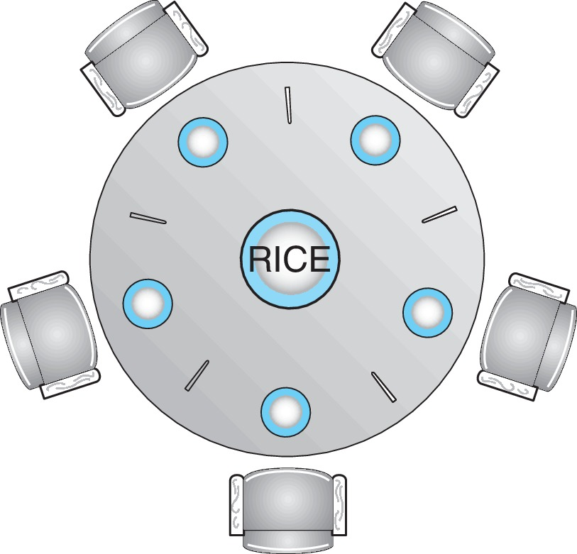
Problem sl. 58; OSC ch7 sl. 12: beş filozof düşünmekle yemek arasında gidip gelir. Yemek için iki bitişik çubuk gerekir ve her çubuk dışlamalıdır. Hoca: bu desen birden çok kilide ihtiyaç duyan thread'ler için geçerlidir, yalnızca masa hikâyesi için değil sl. 58; Okuma §14.
OSC'nin semaphore algoritması OSC ch7 sl. 13:
while (true) {
wait(chopstick[i]); /* sol */
wait(chopstick[(i + 1) % 5]); /* sağ */
/* ye */
signal(chopstick[i]);
signal(chopstick[(i + 1) % 5]);
/* düşün */
}
OSC'nin sorusu: "What is the problem with this algorithm?"
9.3 Beşi birden nasıl bloklanır sl. 59; OSTEP 31.6#
| t | Olay | Tutulan çubuklar | Bekleyen |
|---|---|---|---|
| 1 | F0 sol (c0) alır | c0:F0 | |
| 2 | F1 c1 alır | c0:F0, c1:F1 | |
| 3 | F2 c2 alır | … c2:F2 | |
| 4 | F3 c3 alır | … c3:F3 | |
| 5 | F4 c4 alır | beş çubuk da tutuluyor | |
| 6 | F0 c1'i ister (F1'de), F1 c2'yi (F2'de), F2 c3'ü, F3 c4'ü, F4 c0'ı (F0'da) | herkes; döngü F0 → F1 → F2 → F3 → F4 → F0 |
Kimse "bırak" adımına ulaşamaz sl. 59; OSTEP 31.6. 5 filozof, birer tur, bütün interleaving'ler tarandı: tek kilitlenme durumu tam olarak budur (beşi de sol çubukta).
Hocanın teşhisi sl. 59: dışlama çalışıyor, hiçbir çubuğun iki sahibi yok. Başarısızlık ilerlemedeki döngüsel bağımlılıktır (circular dependency). Yerel olarak doğru bir kilit, edinimlerden oluşan bir bütünü doğru kılmaz Okuma §14. 4. hafta kilitlenme koşullarını ve kaynak grafiklerini resmileştirecek sl. 59.
9.4 Numaralı sıralama: döngüyü kırmak sl. 60; OSTEP 31.6; Okuma §14#
Kural sl. 60: çubukları 0–4 numarala. Her filozof gereken iki çubuktan küçük numaralıyı önce alır.
| Filozof | Gerekenler | Sıra |
|---|---|---|
| F0 | 0, 1 | 0 → 1 |
| F1 | 1, 2 | 1 → 2 |
| F2 | 2, 3 | 2 → 3 |
| F3 | 3, 4 | 3 → 4 |
| F4 | 4, 0 | 0 → 4 (sağ önce) |
Pratikte yalnızca F4'ün sırası değişir. Bu, Dijkstra'nın çözümüyle ve OSTEP'in "son filozof sağı önce alır" çözümüyle aynıdır OSTEP 31.6.
Neden çalışır (ispat) sl. 60; Okuma §14:
- Bir filozof ikinci çubuğu beklerken tuttuğu çubuk a ve beklediği b için her zaman a < b olur.
- Bir bekleme zinciri F_i1 → F_i2 → … düşün: her filozof bir sonrakinin tuttuğu çubuğu bekliyor. Tutulan numaralar zincir boyunca kesin artar: a1 < a2 < ….
- Döngü için zincirin başa dönmesi, yani a1 < … < a1 gerekir. Bu imkânsızdır.
- Döngüsel bekleme yoktur; bu modelde kilitlenme olmaz.
- Koşul: bütün katılımcılar kurala uymalıdır Okuma §14.
En kötü senaryo: F0 c0'ı, F1 c1'i, F2 c2'yi, F3 c3'ü alır. F4 c0'ı ister (küçük numara), F0'da olduğu için hiçbir şey tutmadan bekler. c4 boştur: F3 onu alıp yer; bıraktıkça zincir çözülür. Sıralı sürümün bütün interleaving'leri tarandı: kilitlenme yok. Aynı sonuç room = 4 (aynı anda en çok dört filozof masada) ve çift/tek asimetrik edinim varyantları için de geçerli (taramayla doğrulandı; bu iki çare OSC kitap metninden, hocanın slaytında yalnızca numaralı sıra ve monitor var).
Neyi kanıtlamaz sl. 60; S-6: bounded waiting, adil bir scheduler ya da her filozofun eninde sonunda yiyeceği. Okumanın review cevabı: tutarlı artan edinim sırası modellenen döngüsel beklemeyi önler; bekleme süresini sınırlamaz.
9.5 Monitor çözümü: THINKING / HUNGRY / EATING ve test() sl. 61; OSC ch7 sl. 14–16; Okuma §14#
OSC'nin monitor'ü OSC ch7 sl. 14–16:
monitor DiningPhilosophers {
enum {THINKING, HUNGRY, EATING} state[5];
condition self[5];
void pickup(int i) { state[i] = HUNGRY; test(i);
if (state[i] != EATING) self[i].wait; }
void putdown(int i) { state[i] = THINKING;
test((i + 4) % 5); test((i + 1) % 5); } /* sol ve sağ komşuyu dene */
void test(int i) {
if (state[(i+4)%5] != EATING && state[i] == HUNGRY && state[(i+1)%5] != EATING) {
state[i] = EATING; self[i].signal(); }
}
init: for i: state[i] = THINKING;
}
/* kullanım */ DiningPhilosophers.pickup(i); /* EAT */ DiningPhilosophers.putdown(i);
Mekanizma sl. 61; Okuma §14:
- Bütün durumlar tek monitor kilidi altında. Yemek izni ancak iki komşu da yemiyorsa verilir.
- Bekleyen filozof monitor kilidini bırakır.
- Yemek, izin kaydedildikten sonra ve monitor kilidi dışında olur:
pickupdöner, filozof yer, sonraputdownçağırır. - Dönüşte durumu güncelle ve komşuları yeniden değerlendir (
putdown'daki ikitest). - İzin durumunu (
state[i] = EATING) monitor kilidinin sahipliğinden ayır Okuma §14. Yiyen filozof monitor kilidini tutmaz.
pthreads karşılığı (Mesa uyumlu; ek bilgi, OSC'den çeviri):
static pthread_mutex_t m = PTHREAD_MUTEX_INITIALIZER;
static pthread_cond_t self[5]; /* her biri pthread_cond_init ile */
static enum {THINKING, HUNGRY, EATING} state[5];
static void test(int i) { /* m tutulurken çağrılır */
if (state[(i+4)%5] != EATING && state[i] == HUNGRY && state[(i+1)%5] != EATING) {
state[i] = EATING; /* izni KAYDET */
pthread_cond_signal(&self[i]);
}
}
void pickup(int i) { pthread_mutex_lock(&m); state[i] = HUNGRY; test(i);
while (state[i] != EATING) pthread_cond_wait(&self[i], &m);
pthread_mutex_unlock(&m); }
void putdown(int i) { pthread_mutex_lock(&m); state[i] = THINKING;
test((i+4)%5); test((i+1)%5); pthread_mutex_unlock(&m); }
OSC'nin if'i Mesa altında neden neredeyse doğru (analiz). test() izni sinyalden önce state[i] = EATING olarak kaydeder. state[i]'yi EATING'den çıkarabilen tek kişi i'nin kendisidir (putdown(i)). Bu yüzden gerçek bir sinyal burada güvenlidir: araya giren bir thread izni geri alamaz, §7.5'teki "araya girme" sorunu bu monitor'de yoktur. Tek tehlike sahte uyanmadır: state[i] hâlâ HUNGRY iken if'ten geçen filozof kayıtlı izni olmadan, belki yiyen bir komşunun yanında yer. Bu yüzden pthreads'te while (state[i] != EATING) wait; kullanılır. Durum taraması: if ile sahte uyanma yokken komşuların aynı anda yemesi hiç görülmedi; sahte uyanma açılınca ihlal var; while ile yok. Hocanın "eating occurs after permission has been recorded" vurgusunun teknik karşılığı budur sl. 61.
Kilitlenme yok: argüman. Invariant: "her HUNGRY ve bekleyen filozofun en az bir komşusu EATING'dir."
- Filozof yalnızca
testbaşarısız olduğunda bekler, yani bir komşusu yerken. - O komşu
putdownile bekleyeni yenidentesteder.testyine başarısızsa bekleyenin öbür komşusu yiyordur. - Bekleyen biri varsa yiyen biri de vardır. Yemek sonlu olduğu sürece sistem durmaz.
5 filozof × 2 tur, bütün interleaving'ler tarandı: kilitlenme yok.
Açlık mümkün. OSC: "No deadlock, but starvation is possible" sl. 61; OSC ch7 sl. 16. Somut iz (taramayla yeniden üretildi):
| Adım | Olay | state (F0..F4) | Bekleyen |
|---|---|---|---|
| 1 | F0.pickup → test(0) başarılı |
E T T T T | – |
| 2 | F2.pickup → test(2) başarılı (F0 ile F2 komşu değil) |
E T E T T | – |
| 3 | F1.pickup → test(1): F0 ve F2 yiyor, başarısız → self[1].wait |
E H E T T | F1 |
| 4 | F0.putdown → test(4) başarısız (F4 aç değil), test(1) başarısız (F2 yiyor) |
T H E T T | F1 |
| 5 | F0.pickup → test(0): F4 yemiyor, F1 aç ama yemiyor → başarılı |
E H E T T | F1 |
| 6 | F2.putdown → test(1) başarısız (F0 yiyor), test(3) başarısız |
E H T T T | F1 |
| 7 | F2.pickup → başarılı | E H E T T | F1 |
| … | 4–7 sonsuza dek tekrarlanır | F1 aç kalır |
F1'in iki komşusu sırayla yemeye devam ettiği sürece F1 asla yiyemez. Monitor kilitlenmeyi önler, adaleti sağlamaz: "fairness still needs a separate argument" sl. 61; sl. 67. Çare ek bilgi: yaşlanma (aging) ya da bilet sırası gibi açık bir adalet politikası, ya da aç komşusu olan bir filozofun yeniden yemeye başlamasını erteleyen bir kural.
9.6 Linux'ta nasıl görünür sl. 58; sl. 60#
- Filozof varyantları bu makinede C olarak çalıştırılmadı; sonuçlar durum taramasından. Hoca da bu konuda bir program vermez.
- (Linux'a özgü, burada doğrulanmadı) Helgrind kilit sırası ihlallerini ("lock order violated") raporlar: sol-önce filozoflar gibi tutarsız edinim sırasını bir koşu kilitlenmeden de yakalayabilir ek bilgi. Bu 4. haftanın deadlock konusuna bağlanır Okuma §14.
- POSIX
pthread_rwlock_treaders–writers için hazır araçtır; tercih politikası gerçeklemeye bağlıdır ek bilgi.
Tuzaklar.
- "Her çubuğun tek sahibi var, demek ki sistem ilerler": dışlama çalışır, döngüsel bağımlılık ilerlemeyi durdurur sl. 57; sl. 59.
- "Sıralı çubuk alma → herkes yer": yalnızca döngüsel beklemeyi önler; adalet ayrıdır sl. 60; S-6.
- "Monitor filozof → açlık yok": açlık mümkün sl. 61; OSC ch7 sl. 16.
- "Yiyen filozof monitor kilidini tutar": tutmaz; izin
state[i]'de kayıtlıdır Okuma §14. - "OSC monitor'ündeki
ifMesa altında araya girme yüzünden bozulur": hayır; tek tehlike sahte uyanmadır. - "Okuma ağırlıklı iş yükünde RW kilidi hep hızlıdır": otomatik olarak değil sl. 56; OSTEP 31.5.
- "First readers–writers adildir": yazıcı aç kalabilir sl. 56; OSC ch7 sl. 11.
Kontrol soruları
- Okuyucu önceliğinde bir yazıcı nasıl aç kalır? Kısa bir iz ver.
- Çubuk sıralaması kilitlenmeyi önlüyor. Her filozofun eninde sonunda yiyeceğini kanıtlar mı?
10. Deadlock, starvation, livelock, priority inversion, araç seçimi ve review sl. 62–69#
10.1 Deadlock, starvation, livelock sl. 62; OSC ch6 sl. 56–58; Okuma §15#
| Kavram | Hocanın tanımı sl. 62 | Bu dersteki örnek |
|---|---|---|
| Deadlock (kilitlenme) | Katılımcılar ancak bloklanmış katılımcıların yapabileceği olayları bekler | Beş filozofun hepsi sol çubukta (§9.3). Ters sıralı bounded buffer (§8.4). OSC: P0: wait(S); wait(Q), P1: wait(Q); wait(S) OSC ch6 sl. 57 |
| Starvation (açlık) | Bir katılımcı sürekli ilerlemeden mahrum kalır, ötekiler ilerler | Monitor filozoflarında F1 (§9.5). First readers–writers'ta yazıcı (§9.1). OSC: semaphore kuyruğundan hiç çıkarılmamak OSC ch6 sl. 58; örneğin LIFO kuyruk ek bilgi, OSC kitabı |
| Livelock (canlı kilitlenme) | Katılımcılar tepki vermeye ya da yeniden denemeye devam eder ama yararlı iş tamamlamaz | ek bilgi İki thread: "A'yı kilitle; B'yi trylock et; olmazsa A'yı bırak ve baştan dene." Aynı adımda ilerlerlerse sonsuza dek alıp bırakırlar. Koridorda karşılaşıp hep aynı yana kaçan iki kişi gibi |
Ayırt edici sorular (sınıflandırma CPU durumuna göre değil, bağımlılığa göre yapılır sl. 62):
- Bekleyenlerin beklediği olayı yalnızca yine bekleyenler mi yapabilir? → Deadlock. Katılımcılar uykuda da olabilir, dönerek (spin) de bekliyor olabilir.
- Katılımcılar durumu değiştirip yeniden deniyor ama iş bitmiyor mu? → Livelock.
- Bazıları ilerliyor, biri sürekli reddediliyor mu? → Starvation.
- CPU kullanımı yalnızca bir ipucudur: spin tabanlı bir deadlock da CPU'yu doldurur.
Örnek: dönen deadlock. Yalnızca bayraklı protokol flag[i] = true; while (flag[j]) { } /* CS */ flag[i] = false; dışlamayı sağlar. Ama T0 flag[0] = true, T1 flag[1] = true yazdıktan sonra ikisi de ötekinin bayrağında sonsuza dek döner. Her biri yalnızca ötekinin (o da takılı) yapabileceği bir olayı (flag[j] = false) bekler: bu meşgul beklemeli (busy-waiting) bir deadlock'tur, progress bozuktur. Livelock değildir: kimse tepki vermiyor ya da yeniden denemiyor, durum hiç değişmiyor. Durum taraması: bu durumdan hiçbir CS durumuna ulaşılamıyor. Peterson bu protokolün ilgi bayrağına bir tie-break değişkeni ekleyerek iki özelliği birden elde eder (§3.2).
Hoca: başarılı bir dışlama testi bunların hiçbirini dışlamaz sl. 62. Birinden kaçınmak ötekilerin olmadığını kanıtlamaz. "Çalışıyor" denince hangi safety ve liveness özelliğinin kanıtlandığını sor Okuma §15. OSC bu başarısızlıkları liveness başlığı altında toplar; süresiz bekleme progress ve bounded waiting kriterlerini ihlal eder OSC ch6 sl. 56.
10.2 Priority inversion (öncelik terslenmesi) sl. 63; OSC ch6 sl. 58; Okuma §15#
Tanım sl. 63: yüksek öncelikli (H) bir thread, düşük öncelikli (L) birinin tuttuğu kilidi bekler. Orta öncelikli (M) işler L'yi geciktirir, dolayısıyla H'yi de geciktirir. 2. haftanın öncelikli zamanlamasına bağlanır Okuma §15.
| t | Kalıtım yok | Kalıtım var |
|---|---|---|
| 1 | L kilidi alır | L kilidi alır |
| 2 | H hazır olur, L'yi kesip çalışır, kilidi ister ve bloklanır | H bloklanır. L'nin etkin önceliği H'ye yükselir |
| 3 | M hazır olur. M > L olduğu için M çalışır, L çalışamaz | M hazır olur ama L (= H) > M; L çalışmaya devam eder |
| 4 | M ne kadar sürerse H o kadar bekler: sınırsız gecikme | L kilidi bırakır, önceliği L'ye döner |
| 5 | H kilidi alıp çalışır, sonra M |
Öncelik kalıtımı (priority inheritance) sahibin etkin önceliğini geçici olarak yükseltir ki işini bitirip kilidi bıraksın sl. 63; OSC ch6 sl. 58.
Hocanın sınırlamaları sl. 63; Okuma §15:
- Bu belirli bir protokoldür, her kilitlenmenin çaresi değildir; keyfi döngüsel beklemeyi çözmez.
- Varsayılan mutex'lerin varsayılan bir özelliği sayılmamalı.
- ek bilgi POSIX'te
pthread_mutexattr_setprotocol(&a, PTHREAD_PRIO_INHERIT)ile açıkça istenir. Sahip kavramı gerektirdiği için sahipsiz semaphore'a doğal olarak uygulanamaz (§6.5).
Mars Pathfinder ek bilgi, kaynaklarda yok. 1997'de Mars'a inen Pathfinder'ın VxWorks tabanlı yazılımı tekrar tekrar kendini sıfırladı. Bir bilgi veri yolu mutex'ini tutan düşük öncelikli bir meteoroloji görevi orta öncelikli görevlerce geciktiriliyordu; yüksek öncelikli veri yolu yönetim görevi zamanında bitemiyor, bunu fark eden bir zamanlama denetimi sistemi sıfırlıyordu. Mutex'in öncelik kalıtımı seçeneği kapalıydı; yer ekibi uzaktan açarak sorunu çözdü. Ders hocanın cümlesiyle aynı: kalıtım varsayılan değildir, açıkça seçilmelidir.
10.3 Araç seçimi sl. 64; OSC ch7 sl. 44#
| Durum | Araç sl. 64 | Ders içi örnek |
|---|---|---|
| Birkaç işlem boyunca korunması gereken tek bir paylaşılan invariant | Mutex (çoğu zaman en açık başlangıç) | hesap transferi, queue.c'nin iç durumu |
| Sınırlı sayıda izin | Sayan semaphore | 3 aletlik havuz, throttling, bounded buffer'ın empty / full'u |
| Paylaşılan durumun bir yüklemi sağlamasını beklemek | Condition variable + mutex | count > 0, closed, filozofun state[i] == EATING'i |
| Tek, bağımsız sayısal güncelleme | Atomik işlem yetebilir | counter.c atomic modu; çok değişkenli invariant'ı korumaz sl. 71 |
| Önce | Paylaşılan değiştirilebilir durumu azalt, kalanın protokolünü belirt | fonksiyonel diller ve değiştirilemez (immutable) veri OSC ch7 sl. 44 |
10.4 Uygulama ve review slaytları sl. 65–69#
- sl. 65–66,
queue.calıştırması (sonuçlar §8.8). Çalıştırmadan önce her paylaşılan alanı, onu koruyan mutex'i, her bekleme yüklemini ve onu doğru yapan işlemi işaretle. Çıktıyı ve ortam bilgisini kaydet. Tüketicinin kapanıştan sonra neden boşalttığını açıkla. Yapay zekâdan olumsuz bir interleaving isteyip gerçek koda karşı kontrol etmek serbest; "thread-safe" iddiasını bir protokol olmadan kabul etme sl. 66. Alıştırma notlandırılmaz. - sl. 67, review teşhisleri:
- Önce load, sonra store yapan atomik sayaç bölünmez değildir; read–modify–write gerekir (§4.4).
- Mutex'i bırakmadan bekleyen tüketici, aynı mutex'e ihtiyaç duyan üreticinin yüklemi doğru yapmasını engeller (§8.4).
- Kilitlenmeyi önleyen filozof protokolü açlığı imkânsız kılmaz; adalet ayrı bir özelliktir (§9.5).
- sl. 68, doğru bir kuyruğu gerekçelendirme:
- Safety: bütün kuyruk alanları aynı mutex altında,
count0…N aralığında, her dequeue geçerli bir enqueue'yu izler. - Waiting: condition wait mutex'i bırakır,
whiledöngüleri yeniden alımdan sonra yüklemi tekrar kontrol eder. - Completion: üretici yalnızca her öğeyi ekledikten sonra kapatır; tüketiciler boşaltır, sonra "kapalı ve boş"ta durur.
- Test yürütmelerden örnek toplar. Invariant'lar ve sıralama, izin verilen bütün yürütmelerin neden doğru olduğunu açıklar.
- sl. 69, kaynaklar ve sonraki ders: OSC 10e Ch. 6–7'den uyarlandı; eşlik eden kaynaklar OSTEP'in concurrency, locks, condition variables ve semaphores bölümleri ile okumadaki POSIX sayfaları. Sonraki ders deadlock ve kaynak tahsisi: hoca filozofların bekleme döngüsünü ve dışlama ile ilerleme arasındaki farkı getirmenizi ister.
10.5 Linux'ta nasıl görünür sl. 62–63#
ek bilgi; Linux'a özgü, burada doğrulanmadı
- Deadlock'a girmiş bir program
/proc/<pid>/status'ta voluntary bağlam değişimi artmayan,S(uyuyan) durumda thread'ler gösterir; dönen bir deadlock ise thread başına %100 CPU gösterir (top -H). CPU kullanımı sınıflandırmaz, yalnızca ipucudur (§10.1). - Bir mutex'e öncelik kalıtımını açmak:
pthread_mutexattr_setprotocol(&attr, PTHREAD_PRIO_INHERIT); gerçek zamanlı önceliklerchrtile verilir (2. hafta).
Tuzaklar.
- "CPU boşta, demek ki deadlock; CPU dolu, demek ki livelock": yanlış; sınıflandırma bağımlılığa göre yapılır sl. 62.
- "Dışlama testi geçti, deadlock da yok": dışlama testi liveness hakkında bir şey söylemez sl. 62.
- "Mutex'ler öncelik kalıtımlıdır": belirli bir protokoldür, varsayılan sayılmamalı sl. 63.
- "Öncelik kalıtımı her kilitlenmeyi çözer": döngüsel beklemeyi çözmez sl. 63.
- "Atomik işlem çok değişkenli invariant'ı da korur": korumaz sl. 64; sl. 71.
Kontrol soruları
- "Aynı anda en çok 10 bağlantı" için hangi araç? "Kuyruk boş olmayana kadar bekle" için hangisi?
queue.ckapasite 1 ile derleniyor. Ne değişir, ne aynı kalır?
11. Ders kitabı ekleri sl. 70–86#
Hoca bunları "Textbook supplement" olarak verir. Kaynak kod parçaları tartışma için korunmuştur; bazılarında hata işleme eksiktir ya da düzeltilmeleri gerekir. Tam program olarak çalıştırılmamışlardır; pratik alıştırmalar C/pthreads olarak kalır Okuma §18. Okumanın önerisi: her şekilde paylaşılan durumu, kabul kuralını, bekleme yüklemini ve bırakma işlemini karşılaştır Okuma §18. Bu makinede Java çalışma zamanı yok; Java izleri elle yürütüldü, Java semaphore hatasının C karşılığı ise çalıştırıldı (§6.8).
11.1 Windows mutex durumları sl. 70; OSC ch7 sl. 17–18#
Windows'ta dağıtıcı nesneleri (dispatcher objects) ya signaled (nesne kullanılabilir) ya da nonsignaled (alan thread bloklanır) durumdadır; mutex, semaphore, olay (event) ve zamanlayıcı (timer) bu modelle çalışır, olay condition variable'a benzer OSC ch7 sl. 17. Mutex için sl. 70: signaled = mutex serbest; edinim onu nonsignaled yapar; sahibi bırakınca yeniden signaled olur.

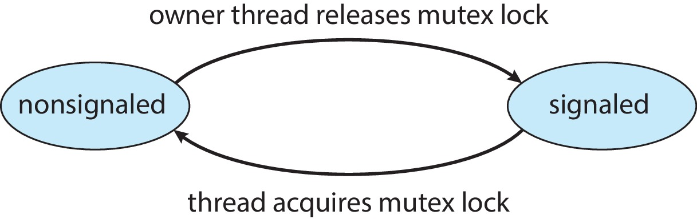
Hocanın uyarıları sl. 70: okları geçiş olarak oku, FIFO kuyruk garantisi olarak okuma; bu ders kitabının Windows örneğidir, Linux mutex diyagramı değildir. "Owner" kelimesi §5.2'deki sahiplikle tutarlıdır. Edinme WaitForSingleObject, bırakma ReleaseMutex ile yapılır ek bilgi.
11.2 Linux kernel atomik tamsayıları (atomic_t) sl. 71; OSC ch7 sl. 20#
Değişkenler: atomic_t counter; int value; OSC ch7 sl. 20
| Atomik işlem | Etki | counter sonra |
|---|---|---|
atomic_set(&counter, 5); |
counter = 5 | 5 |
atomic_add(10, &counter); |
counter = counter + 10 | 15 |
atomic_sub(4, &counter); |
counter = counter − 4 | 11 |
atomic_inc(&counter); |
counter = counter + 1 | 12 |
value = atomic_read(&counter); |
value = 12 | 12 |

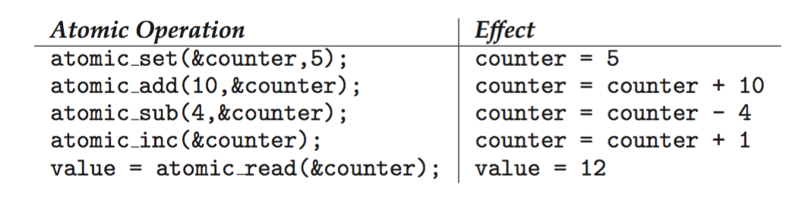
atomic_t işlemleri: set 5, add 10, sub 4, inc, read 12; başka güncelleme olmadığı varsayılarak. OSC 10e, Ch.7 slayt 20.Hocanın aritmetiği sl. 71: 5 → 15 → 11 → 12, okuma 12. Varsayım: "assuming no other updates". Başka bir thread araya atomic_inc koyarsa her işlem yine atomik kalır (lost update olmaz), ama okunan değer 13 olur. Atomiklik "benim işlemlerim bir bütün" demek değildir.
Çalışılmış soru. counter 0'dan başlıyor; iki kernel thread'i eşzamanlı olarak atomic_add(10) ve atomic_sub(4) yapıyor. Sonuç ne olabilir? Her zaman 6: her işlem atomik RMW ve toplama değişmeli. Arada atomic_read yapan biri ise 0, 10, −4 ya da 6 görebilir (taramayla doğrulandı).
- Argüman sırası tuzağı ek bilgi: kernel API'sinde
atomic_add(i, v)önce miktar, sonra pointer alır; C11atomic_fetch_add(obj, arg)'da sıra terstir. - Hocanın sınırlaması sl. 71: "This is the kernel atomic_t interface. Our user-space C exercise uses C11 atomics. Atomicity of one counter does not protect a multi-variable invariant." §5.5'teki transferle aynı ders.
11.3 Adlı semaphore oluşturma ve kullanma sl. 72–73; OSC ch7 sl. 24#
sem_t *sem = sem_open("SEM", O_CREAT, 0666, 1); /* OSC'deki parça */
sem_wait(sem); /* critical section */ sem_post(sem);

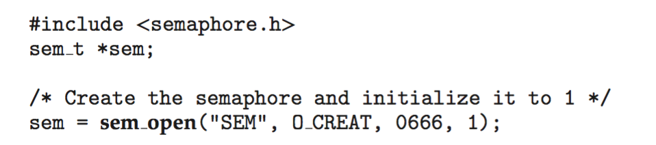
sem_open ile yaratılması: "SEM" adı, O_CREAT, izinler ve başlangıç değeri 1. OSC 10e, Ch.7 slayt 24.Hocanın düzeltmeleri sl. 72–73:
- Ad, ayrı process'lerin aynı semaphore'u açmasını sağlar.
- Başlangıç değeri yalnızca yeni yaratılırken uygulanır, var olan bir semaphore açılırken uygulanmaz. "1 ile açtım" demek, önceki bir çalışmadan kalan değerin 1 olduğunu garanti etmez. Yaratanın kim olduğunu bilmek için
O_CREAT | O_EXCLkullanılır ek bilgi. - Taşınabilirlik için başında
/olan ad (/cse513_demo);SEM_FAILEDkontrolü; bilinçli izinler (0666yerine örneğin0600);sem_close/sem_unlinktemizliği planlanmalı. - Şekilde hata işleme yok. Kesilmiş ya da başarısız bir
wait'ten sonra critical section'a girilmemeli, edinim başarılıymış gibipostedilmemeli sl. 73. - Adlı semaphore process bitse de
sem_unlinkedilene kadar sistemde kalır; Linux'ta genellikle/dev/shm/sem.<ad>olarak görünür ek bilgi; Linux'a özgü, burada doğrulanmadı.
11.4 Condition variable başlatma sl. 74; OSC ch7 sl. 26#
§7.3'te işlendi: mutex ve CV'yi eşzamanlı kullanımdan önce başlat, dönüş kodlarını kontrol et, bütün kullanıcılar ve bekleyenler bittikten sonra yok et; CV izin saklamaz sl. 74.
11.5 Java bounded buffer: durum, entry set, üretici, tüketici sl. 75–78; OSC ch7 sl. 30–35#
Durum sl. 75; OSC ch7 sl. 30: BUFFER_SIZE = 5, count, in, out, E[] buffer. synchronized metotlar aynı nesne monitor'ünü kullanır. Karpuz bandına bağlantı: count == 0 boş, count == BUFFER_SIZE dolu. Entry set şekli sl. 76; OSC ch7 sl. 31 FIFO kabul vaat etmez.

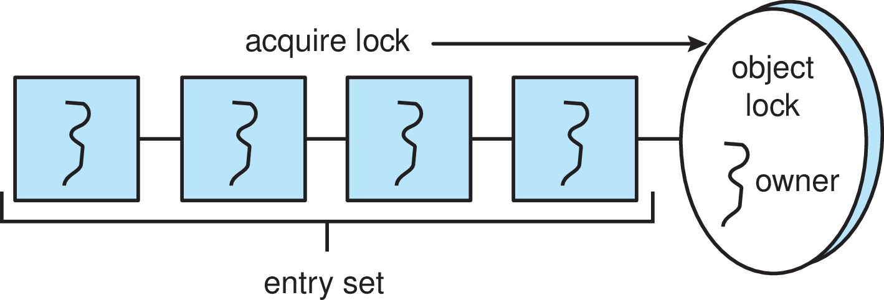
public synchronized void insert(E item) { // [OSC ch7 sl. 34]
while (count == BUFFER_SIZE) {
try { wait(); } catch (InterruptedException ie) { }
}
buffer[in] = item; in = (in + 1) % BUFFER_SIZE; count++;
notify();
}
public synchronized E remove() { // [OSC ch7 sl. 35]
E item;
while (count == 0) {
try { wait(); } catch (InterruptedException ie) { }
}
item = buffer[out]; out = (out + 1) % BUFFER_SIZE; count--;
notify();
return item;
}
Doğru olanlar: while kullanılıyor; wait() monitor'ü bırakıyor, dönünce yeniden alıp count'u tekrar kontrol ediyor sl. 77–78.
Hocanın eleştirileri sl. 77–78:
notify+ tek wait set. Çok üreticili/çok tüketicili genel sürümdenotifyAllgerekir. Neden (OSTEP 30.2'nin tek CV izinin Java hâli; analiz):- Tampon boşken iki tüketici, T1 ve T2, wait set'te bekliyor.
- Üretici bir öğe ekler,
notifyT1'i uyandırır; tampon doluysa (N = 1) üretici ikinci öğeyi ekleyemeden kendisiwaiteder. - T1 öğeyi alır ve
notifyyapar. Wait set'te {T2, üretici} var;notifykeyfi seçtiği için T2'yi (yanlış tür) seçebilir. - T1 bir sonraki
remove'da boş tampon görür vewaiteder. T2 de boş tampon görür vewaiteder. - Wait set = {üretici, T1, T2}; uyandıracak kimse kalmadı. Üçü de uyur.
notifyAllile kilitlenme yok (taramayla doğrulandı). - Kesme (interruption) yutuluyor. Boş
catchkesme isteğini sessizce atar; açık bir kesme politikası tanımlanmalı. - Kapanma ve boşaltma protokolü yok. Bu bir öğretim parçasıdır, çalıştırılabilir alıştırma değildir; her geçişi C kuyruğuyla karşılaştır sl. 78.
11.6 Java ReentrantLock ve temizlik sl. 79; OSC ch7 sl. 36#
Lock key = new ReentrantLock(); // [OSC ch7 sl. 36]
key.lock();
try { /* critical section */ }
finally { key.unlock(); }
finally, gövde normal biterse de istisna fırlatırsa da kilidin bırakılmasını sağlar sl. 79; OSC ch7 sl. 36.- Hocanın kuralı sl. 79: edinimi,
finally'si kilidi açantry'ın ÖNÜNE koy. Yalnızca gerçekten alınmış bir kilidi bırak; invariant'a yapılan her erişim aynı disipline uymalı. - ek bilgi
lock()try'ın içinde olsaydı, edinim başarısız olduğundafinallysahip olunmayan bir kilidi açmaya çalışır veIllegalMonitorStateExceptionfırlardı. "Reentrant": aynı thread kilidi tekrar alabilir, aldığı kadar bırakmalıdır. - Kilidin bir sahibi vardır; bu yüzden C mutex'ine benzer, semaphore'a benzemez; OSC: "Similar to mutex locks" OSC ch7 sl. 36.
C'deki karşılığı ek bilgi: erken return ya da hata dalı unlock'u atlamamalıdır; tek çıkış noktası (goto out;) kalıbı kullanılır (§11.9).
11.7 Java semaphore izinleri ve izin hatası sl. 80–81; OSC ch7 sl. 37#
Semaphore sem = new Semaphore(int value); OSC ch7 sl. 37. Değer başlangıç izin sayısıdır. Bir izin dışlayıcı kabulü modeller, daha fazlası sınırlı eşzamanlılığa (bounded concurrency) izin verir sl. 80. Hocanın uyarıları sl. 80: bu satır bir API taslağıdır, bir sınıfa olduğu gibi yapıştırılacak tam bir bildirim değildir; tek argümanlı kurucu FIFO sırası garanti etmez. Adil sıra için new Semaphore(n, true) gerekir ek bilgi.

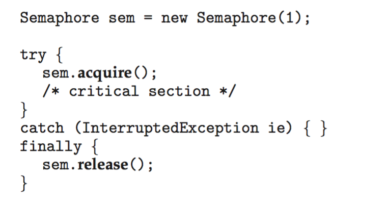
acquire() try'ın içinde, release() finally'de, catch boş. acquire izin almadan istisna fırlatırsa finally yine release eder. OSC 10e, Ch.7 slayt 37.Hata sl. 81: acquire() izni almadan önce InterruptedException fırlatabilir; finally yine de release() eder. Bu yol fazladan bir izin yaratır.
| t | Olay | İzin | Critical section'da |
|---|---|---|---|
| 0 | başlangıç | 1 | – |
| 1 | T1 acquire() başarılı |
0 | T1 |
| 2 | T2 acquire(), izin yok, bloklanır |
0 | T1 |
| 3 | T2 kesilir (interrupt). acquire izin almadan InterruptedException fırlatır; boş catch yutar, finally → release() |
1 | T1 |
| 4 | T3 acquire() → başarılı |
0 | T1 ve T3 birlikte (dışlama bozuldu) |
| 5 | T1 release(), T3 release() |
2 | – |
| → | Semaphore artık kalıcı olarak 2 izinli; bir "kilit" iki kişiyi içeri alır |
Aynı hatanın C/POSIX karşılığı bu makinede çalıştırıldı (§6.8): sem_wait → EINTR → yine de sem_post → sem_trywait başarılı → iki "sahip".
Düzeltme sl. 81: edinimi try/finally bırakma bölgesinin önüne al ya da başarılı edinimi bir bayrakla izle. Kesme politikasını asla sessizce atma.
// 1. yol: kesmeyi çağırana ilet
void work() throws InterruptedException {
sem.acquire(); // başarısızsa istisna fırlar, release ÇALIŞMAZ
try { /* critical section */ }
finally { sem.release(); }
}
// 2. yol: yerinde ele al; kesme bayrağını geri koy (ek bilgi)
boolean acquired = false;
try { sem.acquire(); acquired = true; /* CS */ }
catch (InterruptedException ie) { Thread.currentThread().interrupt(); }
finally { if (acquired) sem.release(); }
11.8 Kilide bağlı condition ve sıra alma sl. 82–84; OSC ch7 sl. 38–40#
Lock key = new ReentrantLock(); // [OSC ch7 sl. 38]
Condition condVar = key.newCondition();
newCondition()buReentrantLock'a bağlı bir koşul yaratır.await()bu kilidi bekleme süresince bırakır, normal dönmeden önce yeniden alır sl. 82. pthreads'tekicond_wait(&cv, &m)ile aynı sözleşmedir.- Hocanın kuralı sl. 82: yüklemi kontrol ederken, beklerken ve sinyal gönderirken kilidi tut;
whiledöngüsünde bekle, çünkü bildirim tek başına yüklemi kurmaz. - ek bilgi
Object.wait'ten farkı: bir kilide birden çokConditionbağlanabilir (notFull,notEmpty). Buqueue.c'nin iki CV'li tasarımına ve §11.5'teki tek wait set sorununun çözümüne karşılık gelir. Kilit tutulmadanawait/signalçağırmakIllegalMonitorStateExceptionfırlatır.
Her sıraya bir condition sl. 83; OSC ch7 sl. 39–40: beş koşul tek bir kilidi paylaşır, int turn kimin sırası olduğunu tutar.
public void doWork(int threadNumber) { // [OSC ch7 sl. 40]
lock.lock();
try {
if (threadNumber != turn)
condVars[threadNumber].await();
/* do some work for awhile ... */
turn = (turn + 1) % 5;
condVars[turn].signal();
}
catch (InterruptedException ie) { }
finally { lock.unlock(); }
}

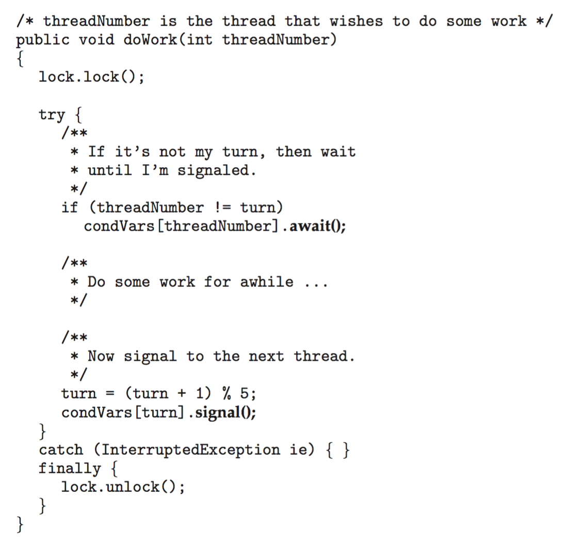
if ile tek bir await, ardından turn ilerletilip sıradakine signal. sl. 84'ün hata bulma sorusunun konusu. OSC 10e, Ch.7 slayt 40.sl. 83'ün noktaları:
- Beş koşul tek kilidi paylaşır; kimin sırası olduğunu ayrı bir
turndeğişkeni belirler. Her koşul yalnızca bir bekleme yeridir. - Koşul nesneleri kimin sırası olduğunu saklamaz.
turnbaşlatılmalı ve kilitle korunmalıdır. - Takılan bir thread bu katı sıra protokolünü durdurabilir: sırası gelen thread hiç
doWorkçağırmazsa herkes sonsuza dek bekler. Bu strict alternation eleştirisinin aynısıdır: ilgisiz bir eş, ilgili olanı bekletir Okuma §6; S-2.
sl. 84: hataları bul.
ifyerinewhile. Sahte uyanma, sırası olmayan bir thread'e yetki vermemeli:
| t | Olay | turn |
|---|---|---|
| 1 | turn = 1. T3 doWork(3), 3 != 1 → condVars[3].await() |
1 |
| 2 | T3 sahte uyanır, kilidi yeniden alır; if tekrar kontrol etmez → T3 sırası olmadan çalışır |
1 |
| 3 | T3: turn = (1 + 1) % 5 = 2, condVars[2].signal() |
2 |
| → | T1'in sırası atlandı; sıra invariant'ı bozuldu |
Düzeltme: while (threadNumber != turn) condVars[threadNumber].await();
2. Boş catch kesmeyi gizler. Kesme await sırasında gelirse kod catch'e atlar; turn güncellenmez ve sıradaki sinyallenmez, sıradaki thread sonsuza dek bekleyebilir. İptal davranışını tanımla sl. 84.
3. turn güncellemesi ve sinyal kilit altında kalmalı sl. 84; OSC kodu bunu sağlıyor.
4. Sonraki sıra katılan bir thread'e karşılık gelmeli sl. 84; % 5 beş thread'in hepsinin sürekli katıldığını varsayar.
Sinyal, sırası gelen thread henüz beklemiyorken gönderilirse kaybolur, ama bu güvenlidir: o thread geldiğinde kilit altında turn'e bakar ve beklemeden çalışır. Bu §7.6'nın olumlu tarafıdır: karar hatırlanan sinyalden değil, durumdan verilir sl. 47.
public void doWork(int threadNumber) throws InterruptedException {
lock.lock();
try {
while (threadNumber != turn) condVars[threadNumber].await();
/* work */
turn = (turn + 1) % 5;
condVars[turn].signal();
} finally { lock.unlock(); }
}
await kesmeyle sonlansa bile istisna fırlatılmadan önce kilidi yeniden alır; bu yüzden finally'deki unlock güvenlidir (ek bilgi; Java Condition sözleşmesi).
11.9 Kilitle korunan güncelleme ve transactional memory sl. 85–86; OSC ch7 sl. 41–43#
void update() { /* [OSC ch7 sl. 42] */
acquire();
/* modify shared data */
release();
}
Hocanın notları sl. 85:
- "The acquire/update/release sequence makes cooperating callers execute the protected update one at a time. Identify exactly which shared state belongs to the invariant."
- "All conflicting access must follow the same lock. Real code needs a defined cleanup path so an error or exception cannot leave the lock held."
C'de temizleme yolu ek bilgi:
int update(struct obj *o, int v) {
int rc = 0;
pthread_mutex_lock(&o->m);
if (v < 0) { rc = -1; goto out; } /* hata yolu da unlock'tan geçer */
o->val += v;
out:
pthread_mutex_unlock(&o->m);
return rc;
}
Transactional memory (TM) OSC ch7 sl. 41–42: "A memory transaction is a sequence of read-write operations to memory that are performed atomically." atomic{S} ile S'deki deyimlerin atomik yürütülmesi istenir:
void update() {
atomic {
/* modify shared data */
}
}
Hocanın yorumu sl. 86:
- "The atomic block expresses a desired transaction over the enclosed reads and writes: commit as a unit, or handle a conflict according to the supporting system."
- Uyarı 1: "This is conceptual textbook notation, not standard C or Java syntax."
- Uyarı 2: "Do not confuse a multi-operation transaction with a single atomic integer instruction."
atomic { A -= 10; B += 10; } §5.5'teki iki değişkenli invariant'ı kavramsal olarak korur; atomic_fetch_add tek bir değişkeni korur. İkisinin adında "atomic" geçmesi aynı garanti demek değildir.
ek bilgi TM iyimserdir: çakışma bulununca işlem geri alınıp yeniden denenir. Kilit kötümserdir, baştan dışlar. TM kilit sırası düşünmeden bileşime izin verir; bedeli, geri alınamaz yan etkilerin (I/O) işlem içinde sorun olması ve çekişmede yeniden deneme maliyetidir. GCC'nin deneysel __transaction_atomic uzantısı (-fgnu-tm) vardır; Intel TSX/RTM donanım TM'si birçok işlemcide güvenlik ve hata nedenleriyle mikrokodla kapatıldı. OSC'nin OpenMP #pragma omp critical örneği OSC ch7 sl. 43 bölgeyi critical section olarak işaretler, ama bu TM değil, örtük bir kilittir.
11.10 Linux'ta nasıl görünür sl. 71; sl. 72–73#
atomic_tkernel arayüzüdür; kullanıcı alanı alıştırması C11 atomics kullanır sl. 71. Kernel belgesi okumada bağlantılı (docs.kernel.org atomic_t).- Adlı semaphore
sem_openile macOS'ta ve Linux'ta çalışır (macOS'ta çalıştırıldı, §6.8); Linux'ta/dev/shm/sem.*olarak görünmesi beklenir (Linux'a özgü, burada doğrulanmadı). - Java parçaları çalıştırılmadı; makinede Java çalışma zamanı yok.
Tuzaklar.
- "Windows diyagramındaki oklar FIFO sırasıdır": geçiştir sl. 70.
- "
atomic_tsayaç birden çok değişkenli invariant'ı korur": korumaz sl. 71. - "
sem_open(..., 1)değeri her zaman 1'dir": değer yalnızca yaratılırken uygulanır sl. 72. - "
try { acquire } finally { release }güvenlidir": başarısız edinim fazladan izin yaratır sl. 81. - "
new Semaphore(n)FIFO'dur": tek argümanlı kurucu sıra garanti etmez sl. 80. - "
atomic { }C sözdizimidir" ya da "tek bir atomik komutla aynıdır": kavramsal gösterimdir, çok işlemli bir transaction'dır sl. 86.
Kontrol soruları
atomic_set5,atomic_add10,atomic_sub4,atomic_inc. Okunan değer kaçtır ve hangi varsayıma dayanır?- sl. 81'deki Java semaphore parçasında izin hatası nedir?
Ek: Ubuntu'da denenecek küçük deneyler (önce tahmin et, sonra çalıştır)#
Hoca alıştırmaları Ubuntu için yazmış; kodu hazırlık makinesinde macOS'ta denemiş, Ubuntu yolunu henüz doğrulamamış Okuma §16. Aşağıdaki bütün Ubuntu komutları Linux'a özgüdür ve burada doğrulanmadı. "macOS'ta görülen" satırı bu makinede gerçekten alınan sonuçtur. racy.c, lockbench.c, ifwhile.c ve sembuf.c Linux ve C uzmanının deney programlarıdır ve notlar/ders-03/kod/ altındadır. Hocanın counter.c ve queue.c dosyaları materyaller/Ders-03_Concurrency-and-synchronization/kod/ altında.
E1. Hocanın sayacı sl. 32–33
- Komut:
cc -std=c11 -O2 -Wall -Wextra -pthread counter.c -o counter && for m in mutex atomic split; do for i in $(seq 10); do ./counter $m; done; done | sort | uniq -c - Tahmin et:
splither koşuda tam 1 mi verir, bazen 2 mi? Neden? - Beklenen: 200000 / 200000 / 1, her biri 10/10 sl. 32.
split'te iki load iki store'dan önce gelir Okuma §16. - macOS'ta görülen: tam olarak bu (10/10,
-O0ve-O2).
E2. Kuyruk, kapasite 4 ve 1 sl. 65
- Komut:
cc -std=c11 -O2 -Wall -Wextra -pthread queue.c -o queue && ./queue; cc -std=c11 -O2 -Wall -Wextra -pthread -DCAPACITY=1 queue.c -o queue-one && ./queue-one; time ./queue; time ./queue-one - Tahmin et: kapasite 1'de toplam değişir mi? Süre değişir mi?
strace -c -f -e trace=futexile hangisinde daha çok futex çağrısı olur? - Beklenen: ikisinde de
consumed=10000 sum=50005000sl. 65. Kapasite 1'de daha çok bloklanma, yani daha çokFUTEX_WAIT/FUTEX_WAKEek bilgi. - macOS'ta görülen: ikisi de 10/10 doğru; futex sayımı yapılamadı.
E3. Yarışlı sayaç ve optimizasyon sl. 11; Okuma §3
- Komut:
cc -std=c11 -O0 -pthread racy.c -o racy-O0; cc -std=c11 -O2 -pthread racy.c -o racy-O2; for i in $(seq 10); do ./racy-O2 plain; done; cc -std=c11 -O2 -S racy.c && grep -A12 '^w_plain:' racy.s - Tahmin et:
-O2'deplainhangi değerleri alabilir? Assembly'de döngü var mı? - Beklenen: x86-64 gcc/clang'da da döngü katlanabilir; derleyiciye bağlı ek bilgi.
- macOS'ta görülen:
-O2'de yalnızca 1000000 ve 2000000 (10 koşuda 6 ve 4).-O0'da 1,07M–2,0M arası dağınık.loadstoreiki seviyede de yanlış,fetchadd20/20 doğru.
E4. TSan ve Helgrind sl. 11
- Komut:
cc -std=c11 -O1 -g -fsanitize=thread -pthread racy.c -o racy-tsan && ./racy-tsan plain 100000; ./racy-tsan loadstore 100000; echo $?. Ayrıcasudo apt install valgrindvevalgrind --tool=helgrind ./racy-O0 plain 10000. - Tahmin et: hangi modlarda rapor çıkar?
loadstoreyanlış sonuç verirken TSan uyarır mı? Çıkış kodu ne olur? - Beklenen:
plainvevolatileraporlanır,loadstoreraporlanmaz. Linux'ta TSan'ın varsayılan çıkış kodu 66 ek bilgi. Helgrind atomik modlarda yanlış alarm verebilir ek bilgi. - macOS'ta görülen:
plainvevolatilebirer uyarı (çıkış 134 = abort;TSAN_OPTIONS=abort_on_error=0ile 66).loadstore0 uyarı,actual=160565. Helgrind macOS'ta yok.
E5. Spinlock ve mutex, aşırı abonelik (oversubscription) sl. 30; sl. 21
- Komut:
nproc; for m in mutex spin spinyield; do /usr/bin/time -v ./lockbench $m $(( $(nproc) * 2 )) 100000 2>&1 | grep -E 'mode=|Elapsed|User time|System time|context switches'; done - Tahmin et: thread sayısı çekirdek sayısının iki katıyken hangisinin user CPU'su duvar saatinin en çok katıdır? Hangisinde voluntary bağlam değişimi en yüksektir?
handoffshangisinde en düşüktür? - Beklenen:
spin: user ≫ wall, düşük voluntary.mutex: yüksek voluntary, kayda değer sys sl. 30; OSTEP 28.8; OSTEP 28.14.spinyield: az el değiştirme, adaletsiz sl. 21. - macOS'ta görülen: T = 20'de
spinwall 0,82 s, user 5,3 s;mutexwall 0,03 s, sys 0,14 s;spinyieldwall 0,012 s ama yalnızca 243 el değiştirme. Voluntary sayacı macOS'ta hep 0.
E6. Futex hızlı ve yavaş yol OSTEP 28.15
- Komut:
strace -f -c -e trace=futex ./lockbench mutex 1 1000000vestrace -f -c -e trace=futex ./lockbench mutex 4 250000 - Tahmin et: tek thread'li koşuda kaç futex çağrısı olur? 4 thread'de?
- Beklenen: tek thread'de kilit işlemleri için futex yok ya da çok az (hızlı yol); 4 thread'de binlerce
FUTEX_WAIT_PRIVATE/FUTEX_WAKE_PRIVATEOSTEP 28.15. - macOS'ta görülen: yapılamadı (strace yok, dtruss SIP yüzünden çalıştırılmadı). Dolaylı iz: mutex
syssüresi T ile büyüyor (T = 1'de 0,002 s, T = 20'de 0,142 s).
E7. /proc ile thread ve bağlam değişimi
- Komut:
./lockbench mutex 4 40000000 & P=$!; sleep 1; ls /proc/$P/task; grep -E 'Threads|ctxt' /proc/$P/status; ps -eLf | grep lockbench; wait. Aynısınıspinile tekrarla. - Tahmin et:
task/altında kaç dizin olur?mutexilespinarasında voluntary ve nonvoluntary oranları nasıl değişir? - Beklenen: 5 dizin (main + 4);
mutex'te voluntary,spin'de nonvoluntary baskın ek bilgi. - macOS'ta görülen:
ps -M1 + 4 thread satırı gösterdi;/procyok. Uzun mutex koşusu:user=2.257s sys=7.513s ivcsw=794827.
E8. if mi while mı? sl. 44; sl. 46
- Komut:
for i in $(seq 10); do ./ifwhile if signal 4; done; ./ifwhile if broadcast 4; ./ifwhile while broadcast 4; ./ifwhile if signal 1 - Tahmin et:
if+signal+ 4 tüketici hiç hata gösterir mi? Tek tüketicideifgüvenli mi? Güvenliyse neden yine dewhileyazmalıyız? - Beklenen:
if+broadcasther koşuda çok sayıda hatalı uyanma;if+signalnadiren sl. 46. C = 1'de hata ancak sahte uyanmayla olur; POSIX buna izin verir, gözlemek zordur sl. 44. - macOS'ta görülen:
if+broadcast+ C = 4: koşu başına ~255 bin–281 bin.if+signal+ C = 4: 10 koşunun 3'ünde 1–3.while: hep 0. C = 1: hep 0 (sahte uyanma gözlenmedi).
E9. Adsız ve adlı semaphore sl. 41; sl. 72
- Komut:
cc -std=c11 -O2 -Wall -Wextra -pthread sembuf.c -o sembuf && ./sembuf unnamed && ./sembuf named; ls /dev/shm - Tahmin et: Ubuntu'da
unnamedçalışır mı?sem_unlinkçağrısını kaldırırsan/dev/shm'de ne kalır? - Beklenen: Linux'ta iki mod da
consumed=100000 sum=5000050000sl. 41; sl. 72; adlı semaphore/dev/shm/sem.*olarak görünür ek bilgi.dispatchmodu Linux'ta hata verir (yalnızca Apple). - macOS'ta görülen:
unnamed→sem_init: Function not implemented(ENOSYS, 10/10).namedvedispatch10/10 doğru (N = 4 ve N = 1).
Hocanın kendi önerisi sl. 65–66; Okuma §16: çalıştırmadan önce her paylaşılan alanı, mutex'ini, bekleme yüklemlerini ve onları doğru yapan işlemleri yaz; çıktıyı ve ortamı kaydet; yapay zekâdan olumsuz bir interleaving iste ve onu gerçek koda karşı kontrol et.